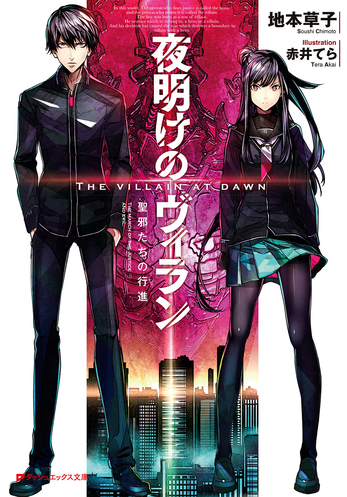
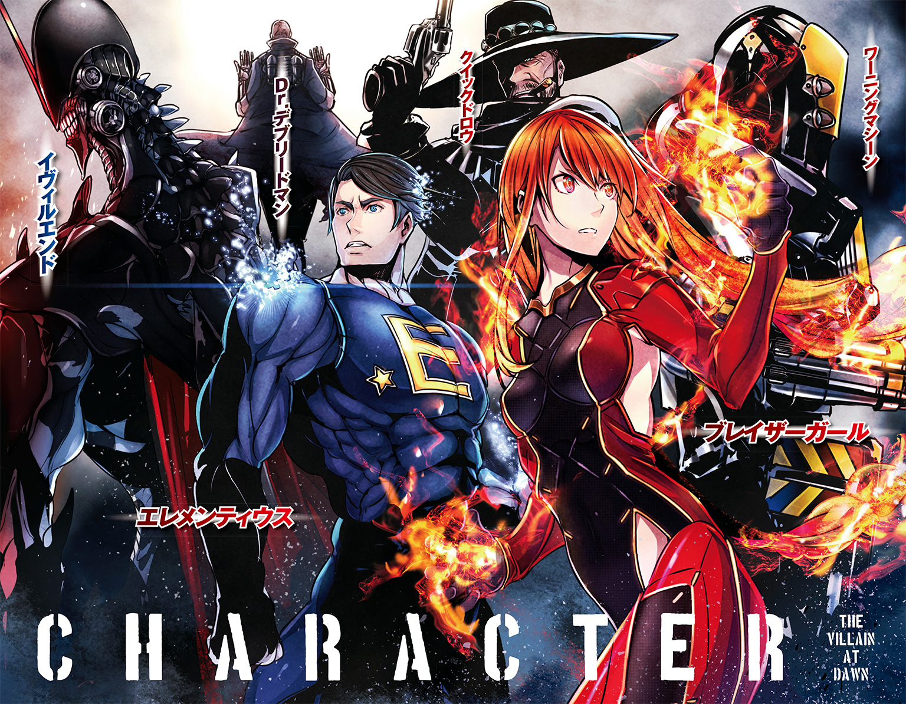
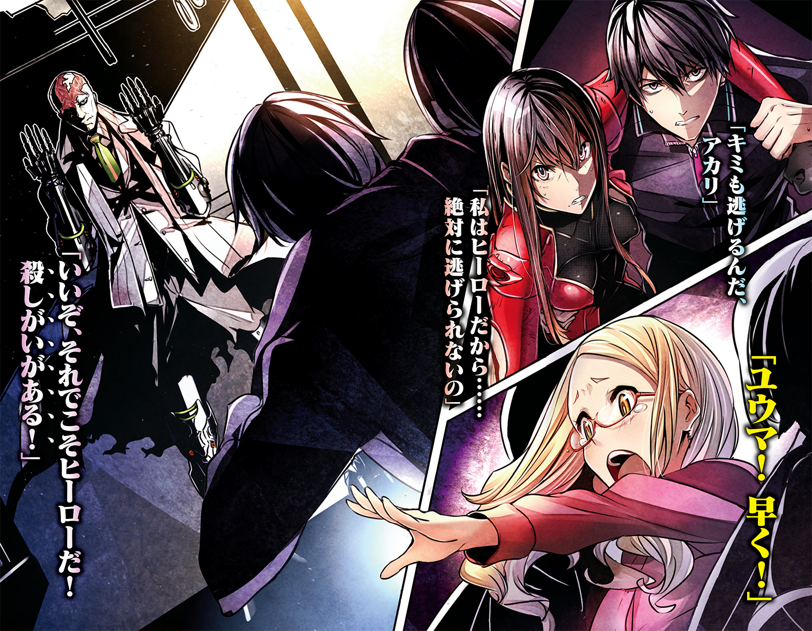
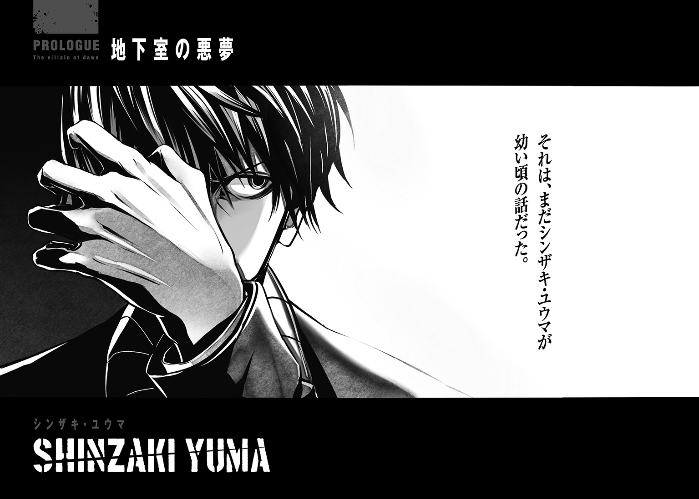
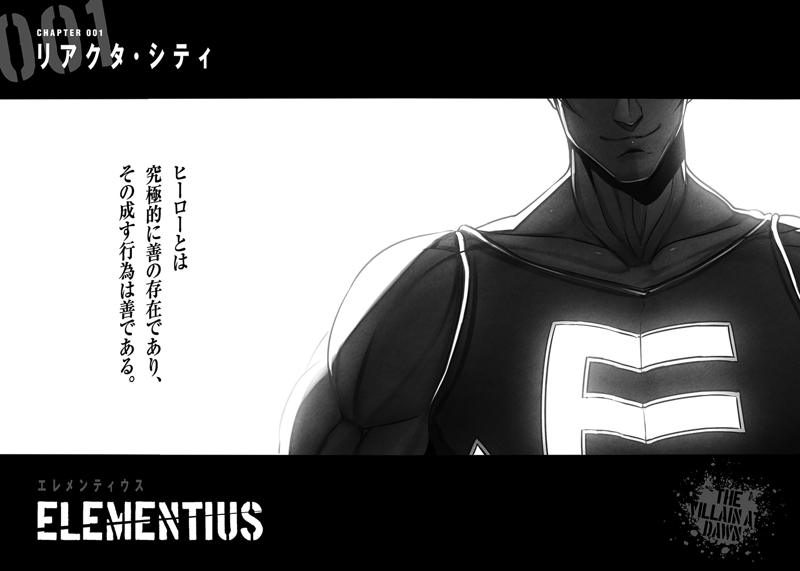
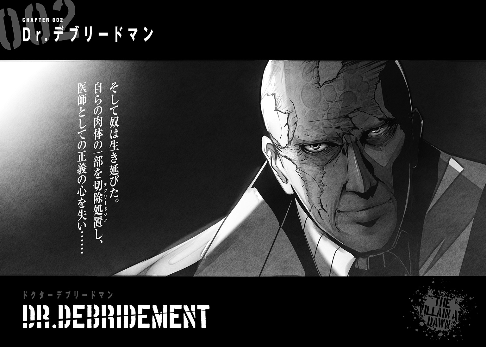
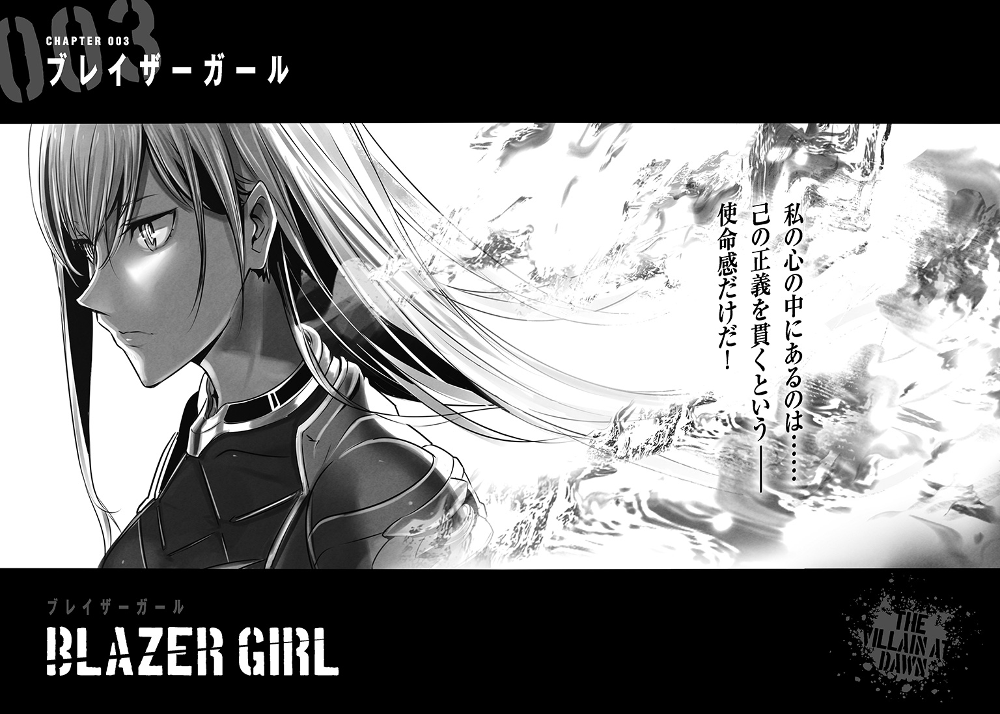
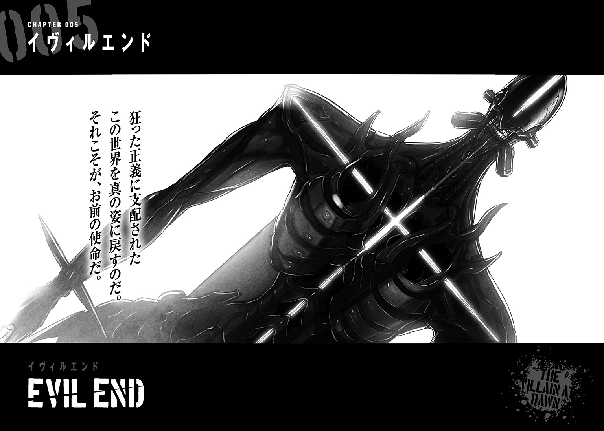
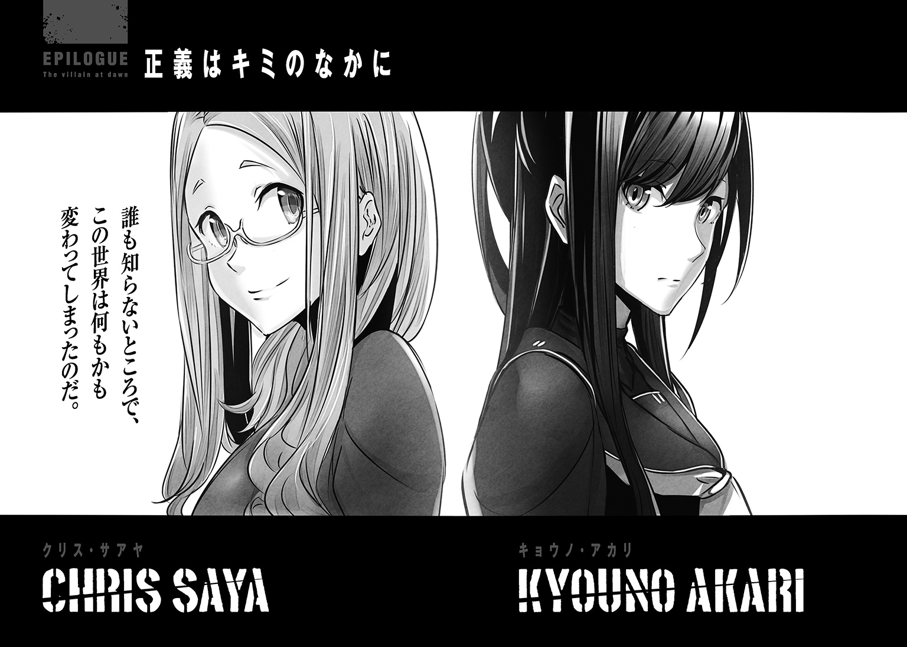

| 夜明けのヴィラン 聖邪たちの行進 | |
| 地本草子 | |

この本は縦書きでレイアウトされています。
また、ご覧になる機種により、表示の差が認められることがあります。


 ダッシュエックス文庫DIGITAL
ダッシュエックス文庫DIGITAL
夜明けのヴィラン
聖邪たちの行進
地本草子

それは、まだシンザキ・ユウマが幼い頃の話だった。
ユウマの生まれた家は、リアクタ・シティの郊外に広大な敷地を有していた。それでも彼に、裕福だった思い出はなかった。
シンザキ家は、極東の島国の小さな田舎町が、世界に名だたる大都市へと変革を遂げた時期に、セト家や、北米出身のコンスタンティン家と並んで、都市直下に封じられた次世代エネルギー炉の開発に尽力していた者たちの末裔だった。
だがシンザキの栄光に、突如として陰りがさす。彼の父親の父親――つまりユウマの祖父の代に莫大な資金をつぎ込んだ新技術の開発事業が失敗し、長年かけて築いてきた、シンザキの地位と名誉と会社を一夜にして失っていた。
ユウマが母親と二人で住む郊外の屋敷は、その建物と土地の規模こそ大きなものだったが、そこにかつての面影はなく、老朽化した幽霊屋敷のような洋館と、枯れ果てた庭園の花々だけが、侘しげに残されていた。
ところがユウマのような子どもにとっては、哀愁漂う庭園も好奇心を刺激するお気に入りの遊び場にすぎなかった。
その日ユウマは、幼馴染のクリス・サアヤと二人、屋敷の庭で鬼ごっこをして遊んでいた。サアヤの家は、かつてシンザキ家に仕えていた使用人の家系で、屋敷のすぐ裏に住んでいた。街の郊外に屋敷を構えていたシンザキ家の、唯一と言えるお隣さんのひとり娘のサアヤと、ユウマが仲良くなるのは、ごく自然な流れだった。
ユウマは枯れたツタの垣根に身を隠して、様子をうかがっていた。スカイブルーのワンピースを着た少女が、ブロンドのおさげ髪を振りながらきょろきょろと周りを見渡しているのが垣間見えた。
多くの場合、少年よりも少女のほうが身体の成長が早いとされているが、それはこの二人にも当てはまり、ことかけっこに関しては、ユウマはサアヤにまったく歯が立たなかった。だからいつもゲームは彼女の勝ちだった。
ユウマは、今日こそ彼女に勝ってやると意気込んでいた。母親が二人の様子を見にくるときまで逃げ切れば、彼の勝ちだった。
いつもならば、そろそろ母親がやってきて、おやつの時間を告げる頃合いだった。
サアヤの視線が、一瞬、ユウマの隠れている方に向いた。
ドキッとするが、どうやら気付いた様子はない。
だが、そっと後ずさったユウマは、不注意にも枯れ枝を踏みつけてしまった。靴の下で乾いた音が鳴る。
サアヤの視線が、ユウマを捉えた。
ユウマは、踵を返すと一目散に逃げ出した。サアヤが、ユウマの背中を追いかける。単純な足の速さでは勝ち目がないことぐらい、彼にもわかっていた。
ユウマは、ワンピースを着たサアヤが嫌がることを狙って、深い藪に走り込んだ。
これでかなり時間を稼げるはずだ。
藪を駆け抜け、レンガ造りの小さな建物の背後に身を滑り込ませる。
それは古い物置小屋だった。積まれたレンガにひびが入っていて、外壁には小さな穴も空いている。見るからにいまにも崩れそうだ。
母親には庭の物置小屋に近づいてはいけないと言いつけられていたが、このときのユウマは、どうしても彼女に勝ちたくて、その言いつけを意図的に忘れることにした。
小屋の陰から頭を出すと、追いついてきたサアヤと目が合った。
咄嗟にユウマは、小屋の壁に空いた穴に頭を突っ込んだ。子どもひとりならちょうど通り抜けられるサイズだった。
ユウマが隠れていた小屋の背後に回ったサアヤは、彼が言いつけを破って小屋の中に入ったのを悟った。
「ずるい！ 家のなかは反則よ！」
「ここは家のなかじゃないよ」
ユウマは小屋のなかから言った。
「だとしてもダメよ。お母様に近づいちゃいけないって言われているわ」
「そんなこと言って、本当は怖いんだろ？」
「怖くなんてない！」
サアヤが大声で言い返した。普段は落ち着いている彼女だが、ときおり気の強いところがあった。
「だったら入ってきて、僕を捕まえればいいじゃないか！」
ユウマはそう言いつつも、少しだけ罪悪感を覚えていた。彼女が暗いところが苦手なことを知っていたからだ。
外からサアヤの声が聞こえなくなった。
ユウマは、小屋のなかを見渡した。
しっとりと湿ったような埃の臭いがする。ひび割れたレンガや天板の隙間から差し込む日差しが、舞い上がった埃で線を描いていた。
外は暖かいが、小屋の中は、ひんやりと冷えていた。狭い空間に、古い作業道具が置かれている。そのなかに、やや場違いな雰囲気の、木製のテーブルが置かれていた。テーブルの上には埃を被ったランプと写真立てが置かれている。
ユウマは、テーブルの方に足を踏み出した。一歩進むごとに床板がギシギシと軋んだ音を立てた。
写真立てを手に取り、服の袖で埃のこびりついたガラスを拭った。
大人の男女が並んでいる。女性はすらりとした長い脚を横に流して椅子に腰かけ、その肩に背の高い男性が手を置いていた。
女性のほうは――いまよりも若いが――ユウマの母親だった。男のほうは見覚えがなかったが、きっとこれが自分の父親なのだろうと思った。
彼が生まれたとき、すでに父親は屋敷にはおらず、写真も一枚として残っていなかった。子どものユウマが母親に父のことを尋ねると、決まって彼女は眉間に皺を寄せて、不機嫌そうな表情をした。
だからユウマは、幼心に、父親のことを聞いてはいけないのだと悟った。子どもは、大人が考えている以上に相手の感情を推し量る能力に長けている。ただ、その感情をどう表現し、どう自身のなかで処理していいのか、その術をまだ持っていないのだ。
「捕まえた！」
突然、背後から声をかけられ、ユウマは写真立てを持ったまま飛び上がった。
その途端、足元から大きな音がして地面が消えた。それはまるで地面から生えた腕に足首をつかまれて、地の底に引き摺り込まれるような感覚だった。
世界が暗転する寸前、サアヤの息を呑む声が聞こえたような気がした。
次の瞬間、ユウマの全身に衝撃が走った。岩石のような硬いなにかに身体を激しくぶつけながら、ゴロゴロと急な斜面を転がり落ちているようだった。
転落が止まると同時に、ひときわ強く額を打ち付け、ユウマの意識が飛んだ。
どれくらい気を失っていたのだろうか。
ユウマは、サアヤの呼ぶ声に目を覚ました。身体を起こそうとすると全身がズキズキと痛んだ。なんとか上半身を起こして見上げると、真っ暗な空に、ぽっかりと穴が空いていて、そこから一筋の薄光が差し込んでいる。どうやらそれこそがユウマの落ちた穴のようだった。
暗闇に慣れてきた目を凝らすと、目の前から彼が落ちた穴にかけて、急な角度の石階段が続いていた。どうやら地下室の入口に板を置いていた部分に、長い間、誰も触れなかったせいで砂埃が積り、地面と区別がつかなくなっていたようだ。ちょうどユウマは、その板の腐っていた部分を踏み抜いてしまったらしい。
「大丈夫、ユウマ!?」
穴を覗き込んだサアヤが泣きそうな声で訊いた。
「大丈夫」とユウマは返事をしようとしたが、うまく声が出なかった。代わりに「......うぅ」という、妙な唸り声ばかりが勝手に口から洩れてきた。
そのとき初めてユウマは、自分が泣いていることに気づいた。と同時に、彼女に泣き顔を見せてしまうことに、些かばかりの恥ずかしさを感じた。だが、どんなに頑張ってみても溢れ出る涙を止めることはできなかった。
全身の痛みと暗闇の閉塞感に、少年は我を失いかけていた。
「いま、お母様を呼んでくる！ そこを動かないで！」
そう言ってサアヤの顔が見えなくなる。
「ひとりにしないで！」と叫びたかったが、やはりうまく声が出なかった。彼女の気配が徐々に遠ざかっていく。そしてユウマは、ひとり暗闇に取り残されてしまった。
いますぐにでも、ここから這い上がりたい――そう願う一心でユウマは力を振り絞り、ゴツゴツとした岩石質の壁に恐る恐る手をかけ、両足に力を込めた。
力を入れると両膝に痛みが走ったが、動けないほどではなかった。
なんとかユウマが立ち上がると、不意に暗闇が照らし出される。突然のことにびくりと身体を震わせた。眩いライトの光に少年は目を細めた。どうやらセンサーがあったようで、それが立ち上がった彼の動きに反応したのだ。
周りが明るくなったおかげで、自分の身体の状態がわかるようになった。
両方の膝の頭や、腕のいたるところが擦り切れている。目に見える怪我以外にも、軽度の打撲を負っているようだ。それでも、明るくなり気が楽になったおかげか、いくらか痛みも引いてきていた。
ユウマは、自分が立っている場所を見渡した。そこは思っていたよりも広い空間だった。もしかしたら屋敷の下まで続いているのかもしれない。地下室というよりは、洞穴や洞窟のような印象だった。岩肌が剝き出しになった壁にライトがぶら下がっているところをみると、電気は通っているようだ。
ユウマは、ライトの光に導かれるように、ゆっくりとさらに奥底へと歩きだした。
大きな鍾乳石の柱のような角を曲がると、ひときわ拓けた空間に大がかりな精密機器が並んでいた。
その光景は、子どもの目から見ても場違いな印象だった。並べられた機器は、どれも埃を被っていて、もうかなり使われていないようだった。そのなかで、中央に置かれた機械のモニターだけが、ぼんやりと光っていた。
ユウマは、モニターの前に立つと、ガラスに積もった埃を手で払った。
にわかに、大型のモーターが駆動するような低い音とともに、目の前の地面が動き、大きな円筒形の物体が、上に堆積した埃や砂をこぼしながら、ゆっくりとせりあがってきた。
少年は呆然と、その光景を見つめていた。
三メートルほどの高さまでせりあがった円筒形の物体が全貌を現すと、ユウマは息を呑んだ。
そこには顔があった。その顔は硬質なメタリック・ブラックの肌をしていた。
だが、よく見るとそれは顔ではなく、ただのマスクだった。マスクが、せりあがった装置に掛けられていたのだ。
ユウマの視線は、それに釘づけになった。少年とマスクの視線が合う。
マスクに刻まれた双眸は虚空だった。無表情で、何者でもない。それでいて、なにかへの憤怒を示しているような恐ろしい様相をしている。
だがユウマは、そのマスクを恐ろしいとは思わなかった。むしろ、心が落ち着くような、懐かしいような、奇妙な感覚があった。花の――もしくは食虫植物の――フェロモンに惹かれる虫のように、ふらりと、それに手を伸ばす。
マスクが掛けられている位置は、子どものユウマには背伸びをしなければ届かない高さだった。つま先立ちをして手を伸ばすと、指先がマスクに触れる。
取れた――と思ったそのとき、マスクの硬質な表面が、まるで粘性の生物のように波打ち身震いをした。驚き、慌てて手を引っ込める。マスクが地面に落ち、カランと音を立てた。柔らかければ、そんな音はしないはずだ。
ユウマは、足元に転がったマスクを見下ろした。ピクリともしない。
やはり目の錯覚だったのだと、自分に言い聞かせると、ユウマは再びそれを手に取り、拾い上げた。
何故かはわからないが、本当ならば恐ろしいはずのそれに触れてみたくて仕方がなかった。
マスクをひっくり返すと内側は、滑らかだった。
そして彼は、自然な流れでマスクを自らの顔に近づけた。
次の瞬間、異変が起こった。
まるで獲物が釣られて近づいてくるのを待っていたかのように、不意にマスクがユウマの顔に飛びついた。そして粘菌のように形状を変化させると、またたく間に後頭部へまで広がり、ついには彼の頭全体を包み込んでしまった。
予想外の出来事にユウマは膝をついた。どうにかして張り付いた仮面を外そうともがき、パニックになる。その間にもほんの数秒前までマスクだった漆黒のそれは、劇的に形状を変化させ、少年の小さな口腔に潜り込んだ。それどころか彼の耳や目や鼻、いたるところから触手のような形状の物体を侵入させる。
その痛みは階段を落ちたときの比ではなかった。粘性のそれに口と気管を塞がれたせいで呼吸ができない。
ユウマの意識が遠のいてゆく。ほどなくして彼は、力なく地面にその小さな身体を横たえた。その間にも意思を持つ不定形の黒い液体と化したそれは、急速に浸食範囲を増やして少年の全身を覆っていった。

太平洋上に巨大な航空母艦が浮かんでいた。
着艦用飛行甲板には、電磁式カタパルトのシャトルに固定された状態のステルス戦闘機が待機していたが、パイロットはおろか、船員らしき人影すら見当たらない。空母は、あたかも幽霊船のような様相を呈していた。
そのとき――静寂を打ち破るかのような爆音がデッキを震わせた。激しい爆風が、艦橋を根元からへし折る。
その爆煙を突き破り、大男が飛び出してきた。いや、むしろ吹き飛ばされてきたと表現したほうが正確だ。
大男は、甲板に並べて係留されていた戦闘機の横っ腹に、背中から突っ込んだ。激突を受けた戦闘機の機体が、大きく拉げる。その衝撃たるや、常人であれば全身の骨が砕け散り、体中の臓器が破裂していてもおかしくないものだった。
だが、男は生きていた。
唸りながら立ち上がったその男は、身長一八〇センチ後半の筋骨隆々とした肉体を誇っていた。碧眼の白人で、ブロンド色の髪を短く切り揃えている。迷彩色のカーゴパンツを穿き、膨れ上がった大胸筋と丸太のような上腕二頭筋のラインが、タイトなボディスーツをごつごつと隆起させている。
両肩には、アメリカン・フットボールの防具のような形状のショルダーパットを装着し、胸には防弾ベストを羽織っていた。ショルダーパッドとベストのデザインは統一されていて、ベストのファスナーを上げると、合衆国の国旗になる悪趣味なデザインだった。
男の名は、キャプテン・ペイトリオット――国際超人機関に所属する元グリーンベレーのヒーローだ。
キャプテン・ペイトリオットは、炎上するデッキを睨みつけた。
黒煙の向うから、――ペイトリオットに負けず劣らす――奇妙な格好をした人物が現れた。ペイトリオットと同じ碧眼の白人男性であり、医者のような白衣を着ていた。
だが、その容貌は、まるで医者のそれには見えなかった。ケロイド状になった火傷の跡が生々しいスキンヘッドに、両腕は金属製の軍用義肢。背中には、局地降下潜入作戦用の超小型ジェットパックを背負っている。
男の口元には、不敵な笑みが浮かんでいた。
「Ｄｒ．デブリードマン！」
苦々しく男の名を口にする、ペイトリオット。
「その程度か、キャプテン・ペイトリオット」
Ｄｒ．デブリードマンと呼ばれた白衣の男は、低く響く声で言った。そして右手につかんだそれを見せつけるように掲げた。
それは片手で持てる程度の大きさの黒色の石だった。形状は、正四角反柱の両底面に正四角柱が合わさった双四角錐反柱――所謂、デルタ正十六面体であり、表面には金属のような光沢があった。
「コアはいただいたぞ」
ペイトリオットの表情が歪んだ。
「まだファースト・クオーターが終わっただけだ！ ――カモンッ！ リンカーン＆ワシントン！」
ペイトリオットが腕のデバイスに告げると、《イエス・ウィー・キャン》の電子音声とともに、厚い甲板を突き破り、二丁の巨大なライフルがジェット噴射をしながら飛び出してきた。ペイトリオットは、「とう！」と垂直に飛び上がると、吸い寄せられるようにジェット飛行する二丁のライフルを空中でキャッチした。
それは五十口径のライフル弾を撃ち出すブルパップ式のカービンライフルだった。ヒーローとしてのキャプテン・ペイトリオットは、その身体能力もさることながら、プレジデンツと名付けられた複数の特殊兵装を操る術に長けていた。
「試合開始だ！」
両手の銃を構える。
Ｄｒ．デブリードマンは、わざとらしく肩をすくめた。
次の瞬間、トリガーが絞られ、ペイトリオットが両腕に構えたカービンライフルから五十口径の巨大な銃弾がフルオートで吐き出された。
その強力な反動たるや、ヒーローであるキャプテン・ペイトリオットでなければ、まともに保持することすらできないほどだ。さらにそれが二丁なのだから、一般的な人類に扱える代物ではない。
しかし一方のデブリードマンも負けてはいない。銃弾の嵐を、目にも止まらぬ動きで回避していく。
単に走っているのではない。あたかもフィギュアスケートの選手のように、甲板上を滑るように高速で移動していた。それは両脚の義足の底から噴き出したジェットによる、ホバー走行だった。
白衣の巨漢を追い、五十口径の弾丸が甲板の表面を大きく抉り取る。デブリードマンが係留されていた戦闘機の背後に身を隠すと、銃弾は機体を滅茶苦茶に蹂躙していった。リンカーン＆ワシントンの弾が尽きる。
「攻守交替だな」
そう宣言しながらＤｒ．デブリードマンは、盾にしていた戦闘機を蹴りつけた。
たった一撃の蹴りで、戦闘機が甲板上を滑りながら吹っ飛び、一直線にペイトリオットへと迫った。
ペイトリオットは、すばやく両腕のライフルを投げ捨てると、驚くことに、素手で戦闘機を受け止めた。両足のブーツの底が、甲板上を滑り、摩擦熱で煙が上がる。そして、あわや海中に落下する、という寸前で踏み止まった。
さらに、ペイトリオットは、両足を踏ん張り、全身に力を込めると、戦闘機を押し返し、先ほどの相手の行為に対抗するが如く、機体を蹴りつけた。
跳ね返った戦闘機が、Ｄｒ．デブリードマンを襲う。
しかし、彼は、口元に余裕の笑みすら浮かべながら、片腕を戦闘機に向けて突き出した。その手のひらには、直径三センチほどの、レーザー照射用のレンズがあった。
次の瞬間、デブリードマンの腕のレンズから、強力な熱レーザーが照射された。可視光線のレーザーが、戦闘機を一刀両断に切り裂く。
真っ二つになった戦闘機は左右に吹き飛びながら爆発した。
しかし、そのわずかな隙に、ペイトリオットは相手との間合いを詰めていた。
「オバマ！」と叫びながら、巨大なナイフを腰から抜く。
グリップのスウィッチを握り込むと、《イエス・ウィー・キャン》の音声とともに、ナイフの刃が超高速で振動を始める。
ほとんど飛びかかるような勢いで、ペイトリオットはＤｒ．デブリードマンを切りつけた。
デブリードマンは咄嗟に右腕で頭部をガードするが、あっけなく切り落とされる。右腕は、コアと呼ばれたデルタ正十六面体の石を握りしめたまま甲板上を転がった。
ペイトリオットは、わずかに怯んだ隙にデブリードマンを殴りつけ、甲板上に押し伏せた。そして反撃しようとするデブリードマンの首筋に、超振動ナイフの刃を押し付けた。デブリードマンの切り落とされていない左腕にも、レーザーは装備されていたが、ペイトリオットはそれが使えないよう自らの膝で甲板に抑え込んでいた。
「タッチダウン！」
「どうかな？」
抑え込まれた左腕からレーザーが照射される。甲板に抑えつけられたままでは、直接キャプテン・ペイトリオットを攻撃することはできない。
Ｄｒ．デブリードマンの狙いは、別にあった。
放たれたレーザーがカタパルトのトリガーを打ち抜き、爆音とともに戦闘機が射出された。
高速で迫る戦闘機の機首が、デブリードマンに馬乗りになっていたペイトリオットの脇腹に突き刺さる。ペイトリオットに激突した戦闘機は、制御を失い、そのまま甲板上を転がりながら大破し、爆ぜた。
悠々と立ち上がったデブリードマンは、埃にまみれた白衣を払いながら、先ほど切り落とされた右腕とコアを拾い上げる。そして甲板に伏し、苦痛に喘ぐ愛国者に歩み寄り、見下ろした。
さしものヒーローも、時速約三〇〇キロメートルで突進する二十トンの鉄の塊の直撃を受け、かなりのダメージを負っていた。
「今の攻撃は、なかなか惜しかった」
「私を殺したところで、我々ヒーローが胸に抱く正義の火は決して消せはしない！」
「まさに、その通りだ」
なんてことなく、デブリードマンは返した。
「だから私は、おまえたちヒーローを皆殺しにする」
「できるものならやってみろ！」
「できるさ。ペイトリオット......このコアがあれば」
そう言いデブリードマンは、先ほどのデルタ正十六面体をわざとらしく見せびらかした。
「まさか、貴様......」
キャプテン・ペイトリオットの口元が苦々しく歪んだ。
「おそらくおまえの想像通りだ。これさえあればおまえたちヒーローなど、とるに足らん虫けら以下の存在になる」
「そうはさせるか！」
にわかにペイトリオットが、デブリードマンの足にしがみついた。
「おまえは、ここで倒す！ たとえこの命と引き換えにしても！ ――ブッシュ・ジュニア！」
「自爆装置か......素晴らしい自己犠牲の精神だ！ まさにヒーローと呼ぶにふさわしい！」と大仰な口調で語る。
「しかし......残念ながら、私の四肢はすべて偽物だ」
そう告げるやデブリードマンは、レーザーで自ら両足を切断した。同時に背中のジェットパックから激しい熱風が噴出し、両足を失ったデブリードマンの身体が垂直に浮かび上がる。
「さらばだ、愛国者よ」
残されたのは、ペイトリオットが抱きしめている一対の軍用義足だけだ。空高く舞い上がるデブリードマンを呆然と見上げ、ペイトリオットはハッと我に返った。
「自爆中止だッ！」
《ノー・ウィー・キャント》平坦な電子音声が無慈悲に告げる。ペイトリオットの眉が、情けなくハの字を描いた。
「ホーリー・シッ――」
次の瞬間、ペイトリオットの身体が内側から大爆発した。その威力は巨大な空母が真っ二つになるほどだった。
デブリードマンは背中のジェットパックでホバリングしながら、海中に沈みゆく空母を見下ろしていた。波間に、焼け焦げた星条旗カラーのベストが揺れていた。
◆
シンザキ・ユウマにとって可能性とは理不尽と同じ意味を持つ言葉だった。
往々にして人は成長して、物事を知り、大人になることによって、自らの力で行える物事の範疇が広がっていく。子どものときは親の手を借りなければできなかったことが、できるようになる。単純に背の高い棚を開けて物を取るとか、ひとりで電車に乗るとか、そういった類いのことだ。
しかし、現実には、どうだろう。
人は、成長し、知識を蓄え、自らの生きる世界の実像を知れば知るほど、その行動が制限されていく。むしろ子どものときはためらいなくできたり、口にしたりしていたことも、大人になるとためらいが生じ、口をつぐむ。自らと世界を対比して、ある程度の客観的視点を有するようになることで、自己の持つ可能性を、小さな殻の中に閉じ込めてしまう。
無論ユウマはそれが悪いと思っているわけではない。人間は幼少期に抱きがちな全能感の鎧を成長に伴い少しずつパージすることで、この社会を形成していると言っても過言ではない。
だが、それでもやはりユウマは、幼心にやがて獲得すると期待していた可能性を社会にコミットするため、自らの狭い世界に仕舞い込むという行為に、少なからず抵抗を感じ、それを理不尽だと捉えていた。
ユウマは、キッチンの高い戸棚を開けると皿を一枚取り出した。先月彼は、十六になっていた。立場は、まだ子どもだが、精神的にも肉体的にも、もうただ子どもとは言い切れない。ミドルティーンは、子どもと大人の狭間の曖昧な年齢と言えるだろう。
小屋の床を踏み抜いてから十一年が経っていたが、相変わらずユウマは、荒れ果てた庭園の洋館に住み続けていた。唯一の違いといえば、あの頃と違い、この広い家に、彼ひとりで暮らしているということだろうか。
成長するに従い、インドア派に鞍替えしたユウマは、学校の登下校以外に外出しないためか肌は白く、一年三六五日中、三六〇日は、目の下に濃いくまを浮かべていた。いまならば、ノーメイクで吸血鬼の役ができそうな風体だ。
ユウマは、寝起きのぼさぼさ頭を搔きながら、「くわぁ」と大あくびをした。
ちょうどそのタイミングで、チーンと音が鳴り、銀色のトースターが、黄金色に焼きあがったパンを二枚、勢いよく吐き出した。それを皿に乗せると、乱雑としたキッチンから、何年も掃除をしていないせいで鮮やかな赤から、濃いブラウンに変色しかけた絨毯が敷かれた、長い廊下を進み、食卓へ移動する。
何十年も昔に落ちぶれたシンザキ家だが、家ばかりは大きい。かつては雇いのメイドが料理を運んでいたのだろうが、ひとりで食事をするとなると厄介だ。
それならば、手っ取り早くキッチンで済ませてしまえばいいのだが、行儀がよくないと、かつて彼の母が禁じていたのだ。そしてユウマは、母が亡くなったいまでも、その言いつけを律儀に守っていた。
パンの乗せられた皿と牛乳パックを両手に、木製の扉を足で押し開け、長さが数メートルはあろうかという無垢材のテーブルが鎮座する部屋に入った。
大きなテーブルの上にはうっすらと埃が積り、他には何年も使われていない銀の燭台だけが置かれている。
トーストと牛乳だけの簡素な朝食をテーブルの端に置くと、椅子に腰掛けた。トーストの表面に薄くバターを塗って齧りつきながら、直径三センチ程度の白い卵型をしたデバイスを左の手首のバンドから取り外し、テーブルの上に軽く放つ。
コロコロと転がったそれは、生卵を立ててみせたコロンブスですら驚くような動きで、自ら回転を止め、直立した。そして内部から薄青色に光り、ユウマの目の前の空間に、正方形のホログラフィック・モニターを投影した。
前髪を七対三の割合で分けた男性キャスターの顔が現れ、朝のニュースが始まる。
空中に投影されているそれはテレビだった。ユウマは、片手で画面サイズを広げると、指先でドラッグしながら、仮想の画面を、自らの視線の位置に移動させる。その光景は、古風な家の内装とは、まるでそぐわないものだった。
生前の母は、家の中に、テレビやコンピュータのような、メディア機器と呼べるものを置くのを極端に嫌がった。だからユウマが、このデバイスと呼ばれる機器を手に入れたのは、母が死んでから――高校進学と同時に、シティ行政府にデバイスの所持を義務付けられたときだった。
朝のニュースを横目に、パンに齧りつこうとしていたユウマの手が止まる。彼は、気が滅入り始めるのを感じた。
スクリーン上に大きく、全身赤色のスーツを身につけ、マスクで素顔を隠した、筋骨隆々の男の姿が映った。背中には、黄色のマントがたなびいている。
ユウマは、その映像を見ながら、今日がアルティメット忌だったということを思い出した。Ｍｒ．アルティメットと呼ばれる、史上最強のヒーローが死んでから、今日で、ちょうど十六年だった。
キャスターは、誰もが初等教育以前に習うような常識の話を、毎年毎年、飽きもせずに語る。
Ｍｒ．アルティメットは、世界で最も有名なスーパーヒーローだった。幾度も幾度も、ヴィランと呼ばれる者たちと対峙し、彼らが起こす数々の事件を解決してきた。
一般的にアルティメットは、三度、この世界を滅亡の危機から救ったと言われていた。
キング・アトモスが核ミサイル発射コードを中国から盗み出したときが一回目で、メテオが流星の軌道を操作して、南極に落下させることによって、旧約聖書の大洪水を人為的に起こそうとしたのが二回目だ。そして三回目は――。
「キング・オブ・ヒーロー、Ｍｒ．アルティメットは、最凶最悪と呼び恐れられたヴィラン、イヴィルエンドの企んだ殺人ナノマシンの散布を阻止するため、自らの身を挺し、世界を滅亡の危機から救ったのです！ しかし、その代償は、あまりにも大きかった！」
感情豊かに、キャスターが説明した。
そこで映像は、十六年前のリアクタ・シティに変わった。
アルティメットが死んだ日、人々は喪に服し、家の前の通りに出ると、街中のありとあらゆる場所で、追悼の蠟燭に火を灯した。そして人々は、正義の具現者であり、史上もっとも有名な英雄のひとりであるＭｒ．アルティメットの鎮魂歌を静かに口にした。
再び映像は現代に戻り、リアクタ・シティの中心、セントラルパークに作られた特設会場を映し出す。会場の前方には、巨大なアルティメットの肖像画が掲げられた献花台が設置されていた。
また映像が変わり、黄色のマントをつけた市民のデモが映し出された。
彼らは酔狂なコスプレ集団ではなく、れっきとした政治団体であり、アルティメットをはじめとしたヒーローたちと、独自の〝明白なる正義〟なる思想を信奉する、ＨＨＨと呼ばれる団体に属した人々だった。
「ウィー・アー・ジャスティス！ リメンバー・アルティメット！」
彼らはそのスローガンを高らかに叫びながら、街の目抜き通りを行進していた。手にしたプラカードには「世界に平和を！」「ヴィランを排除せよ！」との文言が踊っていた。
カメラが、デモ隊の先頭の男が持ったプラカードに移った。それには、いかにも邪悪そうな、漆黒のマスクをつけたヴィランのイラストが印刷されていた。
「ノー・モア・ヴィラン！」
デモ隊が声を揃え、拳を振り上げた。
ユウマは、それを目にした途端、表情を曇らせた。地面に放り出された漆黒のヴィランのプラカードを、輪になったＨＨＨの団体員たちが踏みつける。
「燃やせ！」
誰かが叫んだ。その声は一気に広がる。
「燃やせ！ 燃やせ！ 燃やせ！」
プラカードに火が放たれ、歓声が起こった。
ＨＨＨの代表を務める巨漢の白人男性が、マントを翻しながら宣言した。
「私たちリアクタ・シティの市民は、決してヴィランの恐怖に怯えたりはしない！ 何故なら我々の心にはＭｒ．アルティメットの残した正義が受け継がれているからだ！」
再び歓声がわきおこる。
そこでユウマは、ホログラフィックの画面を横にスワイプして、チャンネルを変えた。
子供向けのアニメーションが放送されていた。明らかにＭｒ．アルティメットを意識した赤色のスーツのヒーローが、全身黒のスーツのヴィランに馬乗りになって、滅茶苦茶に殴りつけていた。
またユウマは、チャンネルをスワイプした。
今度はバーチャル・ゲームのＣＭだ。
ナレーション――《キミもヒーローになりきって、悪のヴィランを倒そう！》
ゲーム用デバイスを使い、まだ小学生に上がったぐらい子どもたちが、嬉々とした表情でヒーローを操り、敵キャラクターのヴィランに銃弾を叩き込んでいた。
全身をハチの巣にされたヴィランは、断末魔の悲鳴を上げながら吹っ飛んだ。間欠泉のように鮮血が吹き出し、腕がちぎれ飛び、水風船のように頭が割れて脳が爆散する。
ゲームをしていた子どもたちがガッツポーズをしながら歓声を上げる。
横にいた両親とハイタッチ。
ナレーション――《超人機関／リアクタ・シティ都市教育局推奨ゲーム 全年齢対象》
三度、スワイプ。
お次は討論番組だ。
「近年のゲームの暴力表現は、子どもたちの健全な成長に悪影響を与える！ その一例として、こんなものが巷には出回っているのです！」
３Ｄの格闘ゲームのプレイ動画に切り替わった。それは、格闘家のような格好をした人間のキャラクター同士が、殴り合っているものだった。
映像を目にしたコメンテーターや観客たちが顔をしかめ、「......おぉ」と嗚咽を漏らした。
「このような人間同士の暴力行為を、子どもに見せていいものなのでしょうか!? いや、いいわけがない！ こんなものが、表現の自由などという言葉で許されてはならないのだ！」
「その通りだ！」
他のコメンテーターが乗っかる。
「近年の研究では、こういった暴力的なゲームが、正常な人間の子どもの、ヴィラン化の要因のひとつになっていると――」
握りつぶすような動作で、ユウマはホログラフィックの画面を消した。
大きく嘆息し、椅子に腰を掛け直す。目を閉じて深呼吸を繰り返し、落ち着いたところで残りのパンを口に運ぼうとする――が、そのとき。
にわかにデバイスが振動して、空中に着信を伝えるメッセージを投影した。
タッチして通話に出た途端、ブロンドの髪の少女のホログラフィックが、テーブルの上の空間に投射された。不機嫌そうな少女の顔が、ぐっと迫ってくる。
《ユウマ！ 何してるの!? 早くしないと、また遅刻よ！》
「おはよう、サアヤ」
悠々とパンを口に運びながら、ユウマは言った。
《おはようじゃないわ！ いつも待たせてばかり》
「だから先に行っていいよ。今日は、学校に行くような気分じゃないんだ」
《今日は？ いつものことじゃない！》
ホログラフィックの指先がぬっと飛び出て、ユウマを指差す。彼女の頭には、怒りの感情を表現する角が立っていた。
《この前も、同じことを言ってたでしょ？》
「今日は、本当に体調が悪いんだ。今もベッドで――」
「そこが、ユウマのベッド？」
その声はスピーカーではなく、直接、彼の背後から響いた。パンをくわえたまま振り返ると、サアヤが睨みつけていた。
「私には椅子に見えるけど？」
「ああ......やっぱり？」
ユウマは、ごまかすように苦笑いする。そして片手のパンを彼女に差し出しながら、「いる？」とすすめた。
サアヤは、呆れたような顔で大きく息を吐いた。
飛び乗ったバスに揺られていると、車窓の外に、山に囲まれた盆地にそびえ立つ高層建築群が姿を現した。
都市の名は、リアクタ・シティ。その名は、ＳＥＴＯ社とコンスタンティン・インダストリィ社が共同で開発・建造した、超高出力のエネルギー炉からとられていた。地下に建造された一機のリアクターだけで、リアクタ・シティの電力はおろか国内の全エネルギーを生み出している。数十年前まで世界中を悩ませていたエネルギー問題は、ことこの国に於いては、リアクタ・シティの誕生により過去のものとなっていた。
バスが峠を越えて数分もすると、急激に街並みが片田舎のそれから人工物主体の都会的な光景へと変化した。都市の中心部の規模自体が、それほど大きくないので、ほんの少しの移動で郊外から都市の中心へとアクセスできるのだ。
リアクタ・シティは、二十年ほど前、ＳＥＴＯ社とＣＩ社が合併して誕生したコンスタンティン＆セト社によって自治される、世界初の企業都市だった。自治体の長も形式上は市長と呼ばれているが、実質はＣ＆Ｓ社の母体の、どちらかの企業のトップが勤めている。議会は二つの企業の役員が、ほぼ同数で選出され、市長も交互に変わる。今は、ＳＥＴＯ社の創始者一族のひとりであり、Ｃ＆Ｓ社の名誉会長であるセト・ハルカという名の、車椅子の老婆が市長を務めていた。
リアクタ・シティの基本的な法律は、国のものに基づいているが、例外的に強い自治権が認められていた。そのため企業都市というよりも、事実上はミニ国家であり、同時に企業国家と表現したほうが現実に即していた。無論、それには都市の地下にあるリアクターの威光が大きかった。この都市は国家の原動力たるエネルギーを生み出す、巨大なリアクターの上に成り立っており、しかもそれを所有しているのは国ではなく巨大企業なのだ。政府としても世界でひとつしかない――無限とも言えるエネルギーを生み出す――リアクターの恩恵にあずかるために、彼らの都市運営に強い態度を取れないでいた。
それだけの施設を有するのだから、テロや犯罪の標的にされないわけがない。にもかかわらずリアクタ・シティは、この地球上で最も安全な都市として人々に知られていた。あまりに治安が良く、犯罪発生率が低いので、軍隊はおろか警察を置く必要すらないほどだ。
無論、何事にも理由がある。
当然、リアクタ・シティにも、それだけの理由があった。
路線バスが都市リニアの駅に着くと、二人は六両編成の電車に乗り換えた。通勤と通学が重なる時間帯だが、始発駅なので――ユウマが遅れたせいで座れなかったが――それほど車内は混んでいない。
運転士を必要としない完全自動制御の電車が、ゆっくりと動き出す。やや旧式ではあるが、磁気浮上式リニアを採用する都市縦断線は、加減速時以外は、わずかな揺れもなく快適だ。
ユウマはサアヤの横顔に目をやった。
二人は、物心つく前から一緒に育った兄妹のようなものだった。まあ、サアヤからすれば、自分が姉のつもりかもしれないが......。
クリス・サアヤは、手櫛で軽くウェーブのかかったブロンド髪を肩に流した。走ったせいで軽く荒れた呼吸を、静かに整えている。小さな唇がうっすらと濡れていた。二つの多国籍企業の城下町として発展したリアクタ・シティに於いては、所謂、日本人のほうが少数派だ。クリス・サアヤも、様々な民族の遺伝子を受け継いだ少女だった。
「危なかった。ユウマのせいで遅刻するところだった」
「別に無理してまで、毎朝迎えに来ることないんだ」
「......何ですって？」
ぎろりと睨みつける。
「悪かった。でも、僕のせいでサアヤまで遅刻することはないよ」
「ダメ。委員長としてクラスメイトの遅刻を防ぐ務めがあるわ。それに......ユウマのお母さまとも約束したから」
そう言って彼女は微笑み、肩をすくめた。
ユウマは苦笑いで返した。ややお節介ではあるが、悪い気はしなかった。朝の陰鬱な気分が、彼女のおかげで少し晴れたような気がしていた。
電車が駅に止まり、会社員や二人と同じような学生らが大勢乗り込んでくる。そのなかにイエローのマントをかけたグループが、数人混ざっていた。彼らを目にした途端、またユウマの心に重いものが戻ってきた。
そんな彼の変化に気づいたのか「どうしたの？」とサアヤが訊いた。
「朝から様子が変だけど？」
「ちょっと、夜更かしが過ぎただけだよ」
もちろん噓だった。だけどそれを知らない彼女は「やっぱり」と嘆息した。
電車がセントラルパークのある中心街の駅に着くと、今度は一気に人が少なくなる。もう車内には、ほとんど学生ばかりが残されていた。
第三学園前駅で降り、少し歩くと、すぐに学園の敷地が見えてきた。
リアクタ・シティは全部で八つの区画に、分割されている。それぞれの区画に都市が運営する小中高一貫の義務教育施設があり、子どもたちはそれらに割り振られていた。そのうちの第三区に設けられた学園に、ユウマとサアヤは通っていた。
都市の外――この国では、通常、高校は義務教育ではないが、リアクタ・シティでは違った。
ユウマが学校のアーチ門をくぐると、腕のバンドに装着したデバイスが、《登校確認：ユウマ・シンザキ ＡＧＥ１６ ８：３０》と表示した。
都市の十五歳以上の年齢の市民には、身分証の代わりにデバイスの携帯が義務付けられていた。デバイスは、十五歳の誕生日に都市行政府からプレゼントされる。
デバイスには、ＩＤや情報端末機能の他にも重要な役割があった。ＧＰＳによる位置情報から、学校、電車、店舗への出入り、持ち主の健康状態まで、所有者のありとあらゆる情報を記録管理しているのだ。
たとえば所有者が、運悪く事故や犯罪に巻き込まれてしまった場合、デバイスに一時的に記録された映像が証拠になったり、急な病気で助けが呼べなくなったときなどは、自動的に救急車両を呼んだりもしてくれる。
もちろんユウマやサアヤが使っていたように、電話、メール、ネット、テレビ、買い物や電車の運賃の支払いまで何でもこなす。まさに万能デバイスと言っても過言ではない代物だった。
ユウマとサアヤは、広い学園の敷地を進み、白を基調とした内装の校舎に入った。建物の中は、窓以外、すべて白亜の床と壁と天井で構成され、何ひとつ無駄な物が置かれていない。教育施設というより、見ようによっては、ある種の医療施設のようでもある。技術的にはネット上のバーチャル空間を利用することで、現実に学校という施設を設け、物理的に移動してまで通う必要はなくなっていたし、ユウマが子どものころには、そういった案が真面目に議論されていたこともあった。
だが実際に物に触れ、目で見なければ子供の脳の成長に悪影響を与えると訴える市民の反対運動が起こり、議会自体もあまり乗り気ではなかったため、その案は凍結されいまもこの『学校』という前時代的な施設は都市に存続し続けていた。
ユウマが、殺風景な廊下から教室に入ると、なんの前触れもなく、景色が一変した。
木と鉄パイプで組み上げられた椅子と机が整然と並べられ、前方にはチョークの消し跡が残る大きな黒板も掛けられていた。窓の外には青々とした空と海が広がり、地平線のはるか彼方には大きな入道雲がそびえていた。
それは何十年も昔の一般的――と、この時代には考えられている――学校の光景であり、ユウマが所属するクラスが採用している学び舎のテーマだった。ここ数年、学生たちの間で、古い時代の学校の風景を模すのが流行っていたのだ。
あと五分ほどでＨＲが始まる。すでに教室には、クラスメイトの八割ほどが集まっていたが、静かに席に着いている生徒は少なかった。ほとんどの生徒が、教室の一か所――正確には、ひとりの少女の席を囲んでいた。
自分の席に着いたユウマは、教室の後ろの人垣に目をやった。生徒たちの身体の隙間から、赤い瞳をした少女の顔がのぞいた。彼女は、ひと月ほど前、街の外から引っ越してきていた。
ユウマは、人知れず溜息をついた。彼女を目にすると、また気が落ち込んでくるのを感じた。だったら見なければいいのだが、何故かはわからないが、気が滅入ってくるのがわかっていても、目を向けずにはいられない不思議な魅力が、その少女にはあった。
彼女の名は、キョウノ・アカリ。リアクタ・シティでは珍しい純和風系の顔立ち、紅蓮の瞳に、透き通るような白い肌、やや勝気な印象のポニーテールをしている。
彼女の整った容姿は、学園中の男子、そしてユウマの目にも魅力的に映っていたし、転校してきて以来彼女は、このクラスの――いや、この学園中の一番の話題だった。
アカリが転校早々、学園のアイドルとして祭り上げられたのは、その美貌もさることながら、彼女がリアクタ・シティに移り住んできた、とある理由が最大の要因だった。
「アカリさんも、今夜の式典に出席するんでしょ？」
生徒のひとりが聞くと、彼女は「かもしれない」と短く答えた。
どうにも彼女は、表情に乏しい。もっと愛想よく笑顔を振りまいていれば、それこそ人気のアイドルになることだって決して無理な話ではないだろう。実際ユウマには、ホログラフィックの向こう側で笑顔を振りまいているアイドルたちよりも、キョウノ・アカリのほうが、ずっと魅力的に思えた。
「気になる？」
そんな彼の視線に気づいたのか、隣の席のクリス・サアヤが訊ねた。
「まあ、ユウマが気になるのもわかるよ。キョウノさん、綺麗だもんね。それに彼女は――」
「誤解だ」
サアヤがそれ以上を語る前に、彼は否定した。
「だったら、どうして彼女のことを見ていたの？」
そう問うサアヤの口調と表情は、どこか不機嫌そうなものだった。まだ今朝のことを怒っているのだろうか、と彼は心配になった。
「転校してひと月もたつのに、随分人気だなって思っただけだよ」
「仕方ないじゃない。今日はアルティメット忌だもの」
「そうかな。昨日もあんな感じだったよ」
「だとしたら、憧れね」
「憧れ？」
彼女の言葉に、ユウマはちょっと首を傾げた。
「みんなが、彼女のようになりたいって、考えているってこと？」
「ええ」とサアヤは肯いた。
「少なくとも僕は、そうは思わないな。あんなふうに毎朝クラスメイトに囲まれて質問攻めにされるなんて勘弁してもらいたい」
「違うわよ。私が言いたいのは、誰だって心の中ではヒーローになりたいと思っている、ってこと」
そう言われてユウマは妙に納得した。だとしたらキョウノ・アカリが気になっている自分も、彼女のようになりたがっているのだろうか。しかし、キョウノ・アカリのようになる、というのが一体どういうことなのか、彼には全く想像できなかった。
やはりユウマは、違うと思った。少なくとも彼がキョウノ・アカリに対して抱いている感情は、「憧れ」という綺麗な言葉で表現できるようなものではなかった。むしろ、「羨望」や「嫉妬」といったほうが近いかもしれない。自身の存在が周囲に認められ、その力の行使が望まれている――そんな彼女にユウマは、平隠を装いながら、強いコンプレックスを抱いているのだ。
そのとき、黄色のマントをつけた生徒が、勢いよく教室のドアを開き、クラスに飛び込んできた。
同年代のなかでは、一際、大きな体軀をした白人の少年だった。身体は大人だが、顔をよく見れば、まだいくらかそばかすが残っていた。
彼の名は、ジミー・ペイジといった。今朝、ニュースの街頭インタビューに答えていた、ＨＨＨのリーダーの息子だ。父親と同じく彼も、熱狂的な超人原理主義者だった。
ジミーは、肩のマントを翻しながら、教壇の中央に立った。そこに生徒たちの視線が集まる。
「みんな、今日が何の日か覚えてるか!?」
ジミーが問いかけると、生徒たちが歓声をあげて返した。
「今日はアルティメット忌。不屈の正義が、悪を倒した日だ！ その代償に俺たちはＭｒ．アルティメットを失ったが、かわりに残ったモノがある！」
一度言葉を切り、クラスメイトたちの顔を見渡す。そして握った拳で、自分の左胸を強く叩いた。
「俺たちの胸のなかには、アルティメットの正義の心が残っている！ そうだろう!?」
再び生徒たちが歓声をあげた。
ジミーは感動したように瞳を潤ませ、天に拳を突き上げた。
「ウィー・アー・ジャスティス！ リメンバー・アルティメット！」
「ウィー・アー・ジャスティス！ リメンバー・アルティメット！」
壇上の彼に合わせて、生徒たちが拳を振り上げながら叫んだ。
サアヤは、困ったように苦笑いを浮かべていた。
ユウマは、ジミーの馬鹿さに溜息をつきながら、横目でキョウノ・アカリを見やった。
アカリは、相変わらずの無表情を貫いていたが、わずかに眼つきが険しくなっているように、ユウマには感じられた。だが、ジミーの馬鹿に付き合っているクラスメイトたちは、彼女の小さな変化に気づいていないようだった。
ユウマは、訝しげに眉を寄せた。何故、彼女がそんな表情をしているのか理解できなかった。
だが、そんな疑問を搔き消すかのように、教室の後ろのドアから入ってくる、パート・ラッシュの姿が見えた。あまりのタイミングの悪さに、ユウマは、「あのバカ」と小さく口走しった。
パートの登場に、大合唱が止み、クラス中が静まり返った。全員の視線が、教室の後ろに立つ彼に注がれた。パート・ラッシュは、厚いレンズのメガネの位置を直しながら、強い縮毛の頭を左右に振り、クラスを見渡した。
やっと彼も、自分のタイミングの悪さに気づいたらしく、引きつった笑顔を浮かべ、「おはよう」と口にする。
朝っぱら面倒なことになりそうだ――とユウマは、心の中でぼやいた。そんな彼の予感に応えるが如く、「おい、パート！」とジミー・ペイジが教壇から彼の名を呼んだ。ジミーが、マントを翻しながら机の間を進み、パートに詰め寄る。
「なんで、おまえがここにいるんだ？」
「なんでって......僕のクラスだし......」
「そういうことじゃねえ！」
ジミーが、パートの胸を突き飛ばした。
パートは後ろによろけて、床に尻もちをついた。その拍子に抱えていたカバンが落ちて、荷物が散らばった。
「おまえは、今日が何の日か知ってるのか？」
「も、もちろん知ってるよ」
震えた口調で答えた。
「だったら、どうしておまえがここにいるんだ、パート・ラッシュ？ ヴィランが出歩いていいような日じゃねえぞ!?」
「で、でも僕はヴィランじゃ――」
「黙れ！ ヴィランのガキはヴィランだ！」
聞こえてきたその言葉に、人知れずユウマは表情を歪める。
パートの父親は、ドナルド政権下での超人機関の権力偏重を訴えるデモを扇動した罪で逮捕され、一年前から、ヴィランと、ヴィラン化する恐れのある人間を矯正するための施設に収容されていたのだ。
そのとき、いままで黙っていたサアヤが、やにわに席を立った。
彼女の気配にジミーが振り返る。
「なんだ、委員長？ またヴィラン野郎の肩を持つのか？」
「違うわ。私はパートの肩を持つの。クラス内の問題を解決するのは、クラスの委員長として当然のことだから」
「こいつはヴィランのガキだぞ？」
「それがどうしたのよ？ パートは、パートよ。私たちの大事なクラスメイトじゃない？」
ジミーは、びっくりしたような顔をしてから、声をあげて笑い始める。クラスメイトたちの間からも、失笑が聞こえた。
ダメだ。もうこれ以上、見ていられない――とユウマは、「もうそこらへんにしておけ、サアヤ」と彼女の手を引いて、椅子に座らせようとした。
するとサアヤは、驚いたような目で彼を見やった。
「ユウマは、これでいいの？」
「よくはないさ。でもこれ以上は、まずい」
「そいつの言う通りだぜ。いくら成績の良いおまえだって、これ以上ヴィランの肩を持つようなら、ただじゃ済まない」
「もしかして、あなた私を脅しているつもり？」
「脅しじゃない、事実さ。俺の親父はＨＨＨのリーダーだ。機関の幹部にも口がきくんだぜ」
「見下げたものね。パパに頼るなんて、自分じゃなにもできないのね。もしかして、まだお母さんにおむつを取り替えてもらってるの？」
「てめぇ、言わせておけば――」
顔を真っ赤にしたジミーが、標的をサアヤに変えた。
ユウマは、咄嗟に二人の間に割って入ろうとした。
だが、その必要はなかった。教師が現れたのだ。
とはいえ、そこに人の姿はなかった。あるのは、ポッドと呼ばれる、巨大なガチョウの卵に、小さなプロペラつきの羽を生やしたかのような形状をした、浮遊式の端末だった。レトロな教室の風景に、最新式のポッドが浮いている光景は、この時代を生きるユウマたちから見ても奇妙なものに映った。
教育用のポッドは、教壇の中央の空間に、ホバリングで音もなく静止すると、センサーで教室内をスキャンした。
《サアヤ・クリス、ジミー・ペイジ、パート・ラッシュの三名。心拍数が上がっている。問題が発生しているのか？》
ポッドが合成音声で質問してくる。
「彼がパートを――」
「ノー・サー」
サアヤが言い切る前に、ジミーが遮った。言いつけはさせないぞ、という目つきで彼女を睨みつける。
《問題がないなら席に着きなさい。授業を開始する。なお、正常な授業の進行を妨げる行為は、校則によって禁止されている》
「イエス・サー」
ジミーが返し、自分の席に向かう。サアヤとすれ違いながら、「調子に乗るなよ、委員長殿」と口にした。互いの視線がぶつかり火花が飛ぶ様が、ユウマには容易に想像できた。
床に散らばった荷物をかき集めたパートが、やや遅れて席に着く。
《授業を開始する》
ポッドが、教壇に成人女性のホログラフィックを投影した。
「教科書、32ページを開いてください」
ホログラフィックの女教師が口にした。
結局、一日中、サアヤの機嫌は悪いままだった。サアヤとジミーが反目しているのは、ユウマを含め、クラスの誰もが知っていることだった。今朝のようなイザコザも、もう一度や二度ではない。
だが、今回に限って言えば、いつもと様子が違った。
午後になっても不機嫌な彼女に、ユウマが、まだ朝の事件を気にしているのかと尋ねても、答えてくれないどころか、目すら合わせてくれなかった。どうやら彼女の不機嫌の原因は、ジミーではなく、ユウマのほうにあるようだった。
しかし彼には、何故彼女が自分に怒っているのか、どうしても理解できなかった。
最後の授業が終わるとサアヤは、ユウマを置いて、さっさと教室を出ていってしまった。彼は急いで荷物をまとめると、足早に進む彼女を追いかけた。
「待って、サアヤ。どうしたのさ？」
ところが彼女は、彼の制止を無視してどんどん歩いて行ってしまう。駅の前まで来るとユウマは彼女を追い越して、その進行方向に立ち塞がった。
「なに？」と彼女は見返した。
「わかった、僕の負けだ。朝のことは悪かった。謝るよ」
「謝るって......ユウマは、なにが悪かったのか、ちゃんと理解してるの？」
「もちろんさ」と肩をすくめる。
「だったら、どうしてあのとき私を止めたの？ 私は、ユウマなら理解してくれると思ってたのに」
「だから悪かったよ。だけど学校で問題を起こすのはよくない。もし本当に機関に報告されたら、せっかくのサアヤの評価がマイナスになる」
「そんなの構わない」
「構わなくないだろ？ ジミーの親は、ＨＨＨのリーダーだ。奴に目をつけられたら、厄介だ」
「ふざけないで！」
サアヤが声を張った。
「あんな筋肉バカがなんだっていうの？ あんな奴、どうだっていいわ！ 私が本当に嫌なのは自分！ あのときパートを助けてあげられなかった、私自身！ そしてユウマ、あなたにも腹が立つの！」
「仕方ないだろ？ たしかにジミーのやり方は最悪だと思うし、あいつはクソ野郎だ。だけど、実際にパートの親父は――」
それを言い切る前にユウマは頰を張られた。乾いた音が、やけに大きく響いて聞こえた。
「ヴィランの子供はヴィラン？ あなたまでそんな下らない考えに捕らわれているのね」
「違うんだ、サアヤ。僕は――」
「もう話したくない。ついてこないで、さようなら」
一方的に告げて、サアヤは歩き去った。
ユウマは、足早に歩き去る少女の背中を見つめながら、熱を帯びる頰を摩った。
◆
少し考え事をしたい気分だった。結局ユウマは電車に乗らず、数駅ほど歩くことにした。歩きながらのほうが落ち着いて考え事ができるような気がしたのだ。
リアクタ・シティの街中を、とぼとぼと歩きながら、今朝のことを思い出す。ユウマには彼女の言いたいことが痛いほど理解できた。
実際、今朝のジミーは調子に乗り過ぎていたし、それに対するユウマ自身の行動は、あまりにも情けないものだったと言えるだろう。サアヤが怒るのも無理はない話だ。
でも、そうは言ったって――とユウマは自分自身に言い訳をする。ジミーたちの思想は巨大な岩のように確固として動かしようのないものだった。
ユウマやサアヤたちが生きるこの世界には、所謂、普通の人間たちとは別にヒーローとヴィランと呼ばれる者たちが存在していた。
ヒーローとは究極的に善の存在であり、その為す行為は正義である。その反面、ヴィランとは究極的に悪の存在であり、その為す行為は不義である。
また、ヒーローは目的のために自らの身を犠牲にするが、ヴィランは目的のために他者の身を犠牲にする。それが一般的なヒーローとヴィランの捉え方だ。そしてヒーローとヴィランのどちらにも属さない大多数の人々は、基本的には正義を愛する心を有しているとされていた。
ヒーローとヴィラン、そして人間――この三者を分ける要因とされているのが、チャンバーだった。
現在の超人機関の前身である国際組織、科学及び倫理の騎士団を構成する科学者集団――通称、ナンバーズ――が、人間とヒーローやヴィランを隔てる重要な器官を発見したのだ。当初、ただの腫瘍と思われていたそれは、やがてヒーローやヴィランの持つ特殊な能力の発現時に活動していることが判明し、彼らの力の根源たる器官として注目されるようになった。小さな部屋を意味する『チャンバー』と名付けられたそれの性質は、ヒーローのものとヴィランのもので、大きな違いがあった。
重大犯罪行為を働く者たち――ヴィランの肉体に付属するチャンバーには、著しい異様な肥大が認められた。それはあたかも悪性腫瘍のようで、こうしたチャンバーが対像者の意識に何らかの影響を与えている可能性も指摘された。
さらに正義の科学者集団の研究により、特異な能力を有さない人間であっても、怒り、不安、恐怖ほかストレスなどの影響により、悪性のチャンバーの活動が活発になり、結果としてヴィランへとその身を落とす危険性があるとの報告がなされたのだ。チャンバー悪性化の予防のため、人々は、自身の内側にある正義の心を曇らせないよう、善の象徴であるヒーローを親愛しつつ、ヴィランを憎悪するようになり、ナンバーズもそれを推奨するようになった。
それらは科学により証明された、この世界の主流の考え方であり、それに変革をもたらすほどの大きな価値観の転換が起こるとは到底思えなかった。
ユウマは、信号待ちの間、ビルのディスプレイ・ウォールに映し出された、超人機関の啓蒙広告を見上げた。深紅のボディスーツと黄色のマントを背にしたスーパーヒーロー、Ｍｒ．アルティメットが、右手の人差し指をこちらに突き出している。彼の下には、でかでかと《正義はキミたちのなかに》の文字が躍っていた。
それを見上げながら、ユウマは、十一年前のあのときを思い出していた。
物置小屋の地下――幼いユウマは、母親に抱きかかえられて目を覚ました。先ほどのアレは、ただの悪夢だったのか、彼を襲った漆黒のマスクは、あとかたもなく消え去っていた。
母親の腕に抱かれながら、体中の痛みが消えていることに気づく。膝小僧の怪我や打撲の痕も、綺麗さっぱりなくなっていた。
だから本当にアレは、すべてたちの悪い悪夢だったんだ、とユウマは安堵した。
そしてやや遅れて、彼は、べつのことが怖くなった。彼は、母親に立ち入りを禁じられていた小屋に入ってしまっていた。
ユウマは、怒られると思った。母は、穏やかな性格をしていたが、正すべくところは、しっかりと正す、厳格な性格の持ち主でもあった。そのパーソナリティは、母の亡き後は、クリス・サアヤに受け継がれていた。もしくは、もとから似た者同士だったのか。
母親の腕に抱かれながら、幼いユウマは、「ごめんなさい」と口にした。
すると母親は、痛いほどの力で彼を抱きしめた。それは、彼を二度と離すまいとするような、強い力だった。彼の頰に、生温かい水滴が落ちた。見上げると彼女は泣いていた。
彼が母親の涙を見るのは、初めてのことだった。
いつの間にか陽が落ちていることに、ユウマは気づいた。ふと顔をあげると、人々が手に蠟燭を持ち、道沿いに並んでいた。リアクタ・シティの道々が、蠟燭の淡い光に照らされている。道を行く彼のすぐ横を、ヒーローの仮装をした子どもたちが走り抜けた。
蠟燭の光に沿って進むと、やがてセントラルパークの人混みが見えてきた。都市の主要道路は同心円状につながっており、すべてここへ至っていた。
アルティメット忌の式典に集まった市民たちの後方から、ユウマは、それを眺めていた。正面の仮設ステージの上には、巨大なＭｒ．アルティメットの肖像が掲げられている。後方の人々にも見えるよう、空中には巨大なホログラフィック・ヴィジョンが浮いていた。
ちょうど式が始まるタイミングらしい。壇上には、リアクタ・シティの市長である車椅子の老婆セト・ハルカと、国際超人機関の長官である恰幅の良い男、ドナルド・ドーソンが並んでいた。
超人機関とは、ヒーローを援助する国際機関のことだ。機関は、ヒーローたちの活動の援助と、ヒーローとヴィランの認定を行い、リアクタ・シティ内に限っては、警察に代わって街の治安維持も行っていた。超人機関の本部があるこの都市は、世界で最もヒーローが過密している場所であり、それは同時に世界で最も安全な場所とも言える。超人機関本部の存在により、――一般的には――作動方式が公開されていない巨大リアクターの上に住居を構え生活することに、誰も不安を抱かなかった。
司会に促されて、超人機関長官、ドナルド・ドーソンが、壇上の中央に立った。
「十六年前の今日、英雄であり、私の友でもあったひとりの男が、その身と引き換えに、この美しく、かけがえのない世界を滅亡の危機から救った。その男の名は、Ｍｒ．アルティメット」
ドナルドは言葉を切り、静まり返った会場を見渡した。
「今日は、Ｍｒ．アルティメットと私たちの不屈の正義が、イヴィルエンドという邪悪な力を打ち倒した記念すべき日である。だからこそ私たちは、今日という日を決して忘れてはならない。我々、国際超人機関と、リアクタ・シティの市民は、Ｍｒ．アルティメットというスーパーヒーローが残した、正義の心を継承する者たちだ。不屈の正義を我らに！ ウィー・アー・ジャスティス！ リメンバー・アルティメット！」
「ウィー・アー・ジャスティス！ リメンバー・アルティメット！」
セントラルパークに集った数万もの人々が、声を揃えた。
ドナルドは片手をあげて謝辞を表しながら壇上から下がった。
「続いて、Ｍｒ．アルティメットの戦友であり、ご友人。そして我らがリアクタ・シティを代表するスーパーヒーローの登場です！」
司会が壇上中央を指さし、その名を告げる。
「エレメンティウス！」
にわかに、マイクスタンド前の空間に、光の粒子が集まる。次の瞬間、眩い閃光とともに、なにもなかった場所にひとりの男が現れた。その男は、黒髪をなでつけたラテン系の白人だった。マスクは付けていない。インテリ風の雰囲気の、端正な顔立ちをしていた。
身体のラインが浮き出るほどぴっちりとした、ブルーのボティ・スーツの胸元には、イエローで、エレメンティスを表す、「Ｅ」の文字が張り付いていた。
派手な登場に、歓声が湧き起こる。
男――エレメンティウスは、片手をあげて応えた。
「エレメンティウス様！ 抱いて！」
「ＬＯＶＥ ＥＬＥＭＥＮＴＩＵＳ♥」と書かれたプラカードを持ち、エレメンティウスのコスプレをしている若い女性グループが、黄色い声をあげた。
エレメンティスは苦笑いを浮かべ、答えた。
「嬉しい申し出を、ありがとう。だけど僕たちヒーローは、常に悪に狙われる。君たちを危険にさらすわけにはいかない」
再び黄色い声が起こり、数人が気絶して、警備員に運ばれていった。
この街で、彼のことを知らない人間はいなかった。シティの世俗から距離を置いて暮らしているユウマですら......。
彼の名は、エレメンティス。
Ｍｒ．アルティメットのいない今、最強と目されているヒーローのひとりであり、その知性的かつ理性的な人格から、超人機関に属するヒーローたちのリーダー的存在だった。
エレメンティウスは、自らの身体を素粒子レベルで分解、再構成することにより、どのような壁もすり抜け、どんな場所にも現れる――所謂、瞬間移動能力を最大の武器としていた。彼がヒーローたちのトレードマークと言っても過言ではないマントをつけていないのは、素粒子化の際の邪魔になるからで、かつて壁をすり抜けたときに、マントの先が壁に埋まってしまったという、もっぱらの噂だった。
エレメンティウスは、一度会場を見渡してから、マイクに向けて口を開いた。
「今夜は、このような場に招待いただき、誠に光栄です。Ｍｒ．アルティメットは、ヒーローのなかのヒーロー......まさにスーパーヒーローと呼ぶに相応しい男でした。そして彼のような天性のリーダーシップをもった人間はいなかった。かつて私が――」
「来ていたのね」
不意に背後から掛けられた声に、ユウマは振り返った。いつの間にかそこには、キョウノ・アカリが立っていた。その顔は、相変わらず、表情に乏しいものだった。
少し驚きながらも、「やあ」と返事をした。
「たしか......シンザキ・ユウマね」
「覚えていてくれたの？」
ユウマは、また驚いた。彼女が転校してきてから、まだ二人は会話を交わしたことがなかった。
「クラスメイトの名前は覚えているわ。......とくにあなたは」
その物言いにちょっとドキッとした。
「それは、つまり――」
「クリス・サアヤと親しいから」
なるほど、とユウマは納得した。この街――いや、この世界に於いては、やはりサアヤのような考えは目立つのだろう。
「それでも意外だわ。あなた、こういうの嫌いだと思っていたから」
「嫌いじゃないよ。苦手なだけさ」
「それを嫌いというの」
「かもしれないね」と肩をすくめながら返す。
「それで......キョウノさんは、どうして？」
「アカリでいいわ」
あまりに無表情で返すものだから、ユウマはそれが冗談のように感じられた。
「私のことを、名字で呼ぶ人はいないから」
「じゃあ、アカリはどうして？」
「来るように言われているのよ。仕事だから」
「仕事？ 誰に呼ばれたの？」
ユウマの問に、彼女は、視線を壇上のエレメンティウスにやった。
一瞬、エレメンティスと彼女の視線が合わさる。エレメンティウスがウインクをした。
「それでは市民の皆さまに、この場を借りて、リアクタ・シティの新たなヒーローを紹介したいと思います！」
「これが仕事よ。離れていなさい、シンザキ・ユウマ」
彼女はユウマに告げた。
「その名は――ブレイザーガール！」
壇上のエレメンティウスが、彼女を指さし、叫んだ。
その刹那、キョウノ・アカリの全身が、赤い光に包まれた。
猛烈な熱風を感じ、急いでユウマは飛び退いた。
アカリの全身を包み込んだそれは、光ではなく、紅蓮の炎だった。
またたく間に彼女のロング・ヘアーが紅く変色して、身に着けていた制服が焼け落ち、その下に身に着けていたボディスーツが露わになった。髪と同じく、燃えるような真紅のボディスーツだ。エレメンティウスと同じようにマントは身につけていないが、その代わりに炎が、彼女の肩口からマントのような形状で展開していた。
赤の炎が、青色にかわった。青は、炎がより高温である証拠だった。灼熱の風が、数メートル離れているユウマのところまで届いてくる。
だが、それも数秒のことだった。やがて火の勢いが落ち着き、熱風もおさまった。
ブレイザーガールと化したキョウノ・アカリは、横で驚いているユウマにちらりと視線をやった。互いの視線が重なった。
「か、かっこいいね......」
反射的にユウマの口を衝いて出た言葉に、一瞬だけ、彼女の頰が赤くなったような気がした。
「ありが――」
そう言い切る前に、ユウマと彼女の間に閃光が生じ、エレメンティウスが現れた。
「熱いな？」
エレメンティウスは、訝しげな顔で呟いた。
「もしかして緊張しているのか？ ブレイザーガール」
「そうね。少し」
アカリの顔が、一瞬にして元の無表情に戻った。
キョウノ・アカリ――ブレイザーガールは炎を操るヒーローだった。
転校してきたときから彼女がヒーローだということは、生徒たちの間で周知の事実だったが、流石に、その特性までは知らなかった。まして、彼女が戦闘用のスーツに変身するのを目にするのは、これが初めてのことだった。
「さあ、ブレイザーガール。私の手を」
紳士然とした口調で、エレメンティウスがアカリを促す。
差し出された腕を、アカリが取った。
「絶対に、私の手を離してはいけない。準備は良いかな？」
「もちろんよ」
「それでは」
次の瞬間、ユウマの目の前で再び閃光が起こり、二人の姿が消え失せた。残るは、わずかな余熱だけだ。
そして同時に、壇上で歓声が起こる。
視線を壇上に戻すと、エレメンティウスとブレイザーガールの姿があった。エレメンティウスが彼女を連れて瞬間移動をしたのだ。
「さあ、ブレイザーガール。リアクタ・シティの皆に、挨拶を」
「自己紹介は苦手よ」
「我々はヒーローだ。愛想はいらない」
「具体的には？」
「名前を言って、ピースでもしておけ」
「わかったわ」
ブレイザーガールは肯くと、エレメンティウスに促されてマイクの前に立った。
そして一言、「ブレイザーガールです。よろしく」と口にしてから、本当に無表情のまま、ピースサインをした。
広い会場を沈黙が満たす。
ユウマは他人事ながら苦笑した。
そのときだった。
にわかにスピーカーのハウリングのような甲高い音が鳴り響き、続いて巨大なホログラフィック・ヴィジョンの映像が唐突に切り替わった。今まで壇上の式典を映していたそれに、コンクリートで囲まれた暗がりと、そのなかに立つ男の姿が現れた。
人々の間でどよめきが起こった。壇上のエレメンティウスも、何事かと眉をひそめている。
ホログラフィク・ヴィジョンに映し出された男は、異様な姿をしていた。
彫りの深い目鼻立ち。スキンヘッドの頭には、火傷の痕のようなひきつりが浮いている。袖と裾のほつれた白衣を身に纏う。最も目を引くのは、その男の四肢だった。両腕は肩の位置から、両脚は太ももの半ばから、金属製の義肢が装着されていた。しかも、ほとんど生身と外見が変わらない一般的なそれではなく、ごつごつとした外観をした軍用義肢だ。そのサイズは、巨漢といっても差し支えのない男の身体に於いても、いささかアンバランスな大きさだった。
「リアクタ・シティの市民、そしてヒーローたち。私の名は、Ｄｒ．デブリードマン」
男の低くこもった声が、スピーカーから響いた。
「最強のヒーローがこの世を去った記念すべき日に、君たち市民とヒーローたちに、私から、わずかばかりのプレゼントがある。なあに、遠慮することはない、受け取ってくれ」
にやりと笑む。
「期待してくれたまえ、私のプレゼントは、とてもホットで、爆発的だ」
その言葉で、再び唐突に、ホログラフィック・ヴィジョンが壇上の映像に戻る。
にわかにユウマは、後頭部に凍りつくような冷気を感じ、振り返った。
それは気配だった。
見上げる夜空に、大きな星がひとつ、輝いていた。
ユウマは、眉をひそめた。
星が、瞬きながら、徐々に大きくなっていたのだ。
彼は、気付いた。それは星ではない。そのナニカは、高速で、一直線にこちらにむかってきていた。コンマ数秒のうちに、ナニカは、その数を増やす。次々に現れ、いまや夜空一面を埋めんばかりの数になっていた。
そのころになると、壇上のエレメンティスやブレイザーガールも異変に気づいたらしく、ユウマと同じく、夜空を見上げた。
「――逃げろッ！」
いち早くそれの正体を悟ったエレメンティウスが叫んだ。彼は、瞬間移動をしながら、ドナルド・ドーソンとセト・ハルカの首根っこを摑んだ。
とき同じくして、夜空から飛来する細長い筒状のそれがユウマの頭上を高速で突き抜けていった。彼の目に映ったそれは、どう見ても小型ミサイルだった。
エレメンティウスは、二人を摑んだまま三度、瞬間移動をし、壇上から姿を消した。
ほぼ同時に、超高速で飛来したそれが壇上に突き刺さり、爆ぜた。
小型ミサイルが仮設ステージを襲った。
セントラルパークに集まっていた市民たちが爆発に巻き込まれ、吹き飛ばされた。なんとか最初の爆発を逃れた人々が、悲鳴を上げながら一斉に逃げ惑う。将棋倒しになった市民の頭上に地対地誘導弾が直撃する。哀れな彼らの悲鳴は無慈悲な轟音に呑み込まれ、身体は爆風に木っ端微塵にされた。
やっと状況を悟ったユウマは頭を低くしながら駆け出した。
いったい、ここでなにが起こっているのかは、理解できなかったが、それはこの場にいるすべての人間に共通して言えることだった。唯一確かなのは、逃げなければ死ぬという、ひどく単純な事実だけだった。
逃げ出したユウマの背後の地面に、ミサイルが突き刺さり、爆ぜる。
爆風にまき込まれる寸前、彼は、停めてあった車の陰に滑り込んだ。
頭を抱え、地に伏せたユウマの目の前に、誰かの足があった。ふと顔を上げると、それは太もものところから無残にもち切れ飛んでいた。焦げついた筋肉の合間から、白い骨が覗いていた。
耐え切れずユウマは、その場で嘔吐した。車の陰から顔を覗かせると、セントラルパークを人々が逃げ回っているのが見えた。まだ攻撃は止んでおらず、周囲の崩れた高層ビルの外壁が、人々の頭上に落下していた。
セントラルパークにいては危ない。できるだけ早く、ここから離れなければ――とユウマは、意を決し、車の陰から走り出した。
だがそのとき、彼の視線の端に、黄色いマントが見えた。それは、Ｍｒ．アルティメットの仮装をした男の子だった。
このパニックで親とはぐれたのか、男の子は、あまりの恐怖に呆然として、その場から動けなくなっていた。
にわかに響く甲高い風切り音に、ユウマは、ハッと空を見上げた。
今まさに、少年のいる場所に、新たなミサイルが着弾しようとしていた。
もちろん、逃げることもできた。
だが、ユウマの身体が、それを許さなかった。悩み、考える間をすっ飛ばして、反射的に走りだすと、飛びつくように男の子の身体を抱き上げていた。
しかし、その瞬間――二人の頭上に、ミサイルが飛来する。
咄嗟にユウマは、少年を守るように自らの背を盾にした。彼自身、それがどれほど無駄なことぐらいかはわかっていたが、そうせざるを得なかった。
ユウマは覚悟した。たったひとつの心残りは、サアヤと喧嘩別れしたままということだった。
まさに小型ミサイルがユウマと少年を吹き飛ばそうとした、そのとき――にわかに二人とミサイルの間に割って入った、紅い影があった。
その深紅の人影は、キョウノ・アカリ――ブレイザーガールだった。
アカリが、片腕を弾頭に掲げるや、超高温の、青白い光のシールドが発生した。
青白いシールドに突っ込んだミサイルが、一瞬のうちに溶け去る。
だがしかし――
「しまった！」と口にするように、アカリは表情を歪めた。
アカリの発生させた超高温のシールドは、確かにミサイル本体を、すべて溶かしたが、そのせいで、ミサイルを構成していた金属が融解し、彼女の背後にいたユウマと少年に降り注いでしまったのだ。
アカリは、炎の温度が低かったことを悟った。本来ならば、強力な火炎でミサイルの周囲を真空に近い状態にして金属の沸点を下げることにより、比較的低温で蒸発させてしまうのだが、今回に限っては、あまりに急なことで、十分に真空を作りきれていなかったのだ。それでも数千度の熱を発生させたので、蒸発しきれなかったのは、ミサイルの弾頭に使用されていた沸点が五千度を超えるタングステンだろう。
人間が、何千度という金属の雨を生身に浴びて、無事でいられるはずがない。
だがしかし――アカリは振り返り、訝しげに眉を寄せた。
高温の金属が地面の上でくすぶり、蒸気を上げているなか、Ｍｒ．アルティメットの仮装をした男の子は、相変わらず呆然と突っ立っていた。しかも、その身体には、一切の怪我や火傷がない。まるで溶けた金属が男の子を避けて飛んだかのように、その周囲に散らばっていた。
熱に対する耐性を持っている彼女ならまだしも、散弾のように降り注ぐ融解した金属を頭から浴びて、普通の人間が無事で済むわけがない。
自らの視界から外れていた間、背後で一体なにが起こったのか、彼女にはわからなかった。
やっと状況を悟ったのか、男の子が泣きだした。
セントラルパークは、先ほどとは打って変わり、静かになっていた。どうやらミサイル攻撃は止んだようだった。
ブレイザーガールは、泣きじゃくる男の子の前にしゃがみ込むと、さっきのように無表情のままピースをした。それは、彼女なりに男の子をあやそうとしての行為だったが、より男の子は泣き声を大きくした。
「大丈夫か、ブレイザーガール？」
彼女が顔を上げると、エレメンティスが立っていた。
「長官と市長は無事だ。しかし、一体なにが――」
エレメンティウスは、あたりを見渡した。
ステージは跡形もなく消え去り、道々の車は燃え上がり、ビルの外壁や地面には、大きな穴が開き、瓦礫とガラス片があたりに散らばっている。
世界でもっとも安全な都市――リアクタ・シティ。
にもかかわらず、そこはまるで戦場のような有様だった。
「さっきの男は誰なんだ......Ｄｒ．デブリードマンと名乗っていたが」
「わからないわ。だけどひとつだけ確かなことがある。アレは私たちの敵よ」
「そうだな」とエレメンティウスは、相槌を打った。
たったいま起こった出来事は、Ｍｒ．アルティメットの死後、最大かつ、最悪の事態といえた。Ｍｒ．アルティメットの功績を称え、死を弔う式典が、新たに出現したヴィランによって、未曾有の惨劇の舞台と化してしまったのだ。
だがブレイザーガールには、それより気にかかっていることがあった。横のエレメンティウスに悟られないよう、彼女はそこに目をやる。溶けたタングステンが、アスファルトで蒸気をあげながら硬化していた。ところがそこに咄嗟に男の子をかばった少年――シンザキ・ユウマの姿はなかった。彼は一瞬の間に、忽然と姿を消していたのだ。
◆
暗くじめじめとした路地裏に人影があった。
その人影は、ビルの外壁に手をつきながら、ふらふらとした足取りで、今にも倒れてしまいそうな様子だった。
月明かりがビルとビルの狭間に差し込み、夜の闇の中の人影を照らした。
ぼんやりと浮かび上がった横顔は、シンザキ・ユウマのものだった。
彼の息は荒く、表情は苦痛に歪み、額には脂汗が浮いていた。一歩進むだけで、激痛が走り、悲痛なうめき声を漏らす。遠くから、セントラルパークの喧騒と、緊急車両のサイレンが聞こえていた。
ついにユウマは、膝を折り、その場に跪いた。
制服の背中一面に、焼け焦げたような穴が開いていた。その下の皮膚は、赤黒く、焼き過ぎたステーキ肉のように炭化している。それはどうみても危険な状態の火傷だった。
《身体が非常に危険な状態にあります。救急車を要請しますか？》
と左腕に巻かれたデバイスが問いかける。
「やめてくれ、必要ない！」
《了承しました。救急車両の要請をキャンセルします》
デバイスの回答を聞きながら、ユウマは、あまりの苦痛に嗚咽を漏らした。
彼の意識が、ふっと遠のく。身体を支えていた腕が滑り、彼は路地裏の地面にうつ伏せになって倒れ込んだ。
ひんやりとした地面の冷気を感じながら、ユウマの意識が薄らいでいく。
意識を失った彼の記憶は、二年前の光景を映し出した。それはシンザキの屋敷の一室だった。
古い木製のベッドに、彼の母親が横たわっていた。彼女は、げっそりと瘦せ細り、腕も棒きれのようだった。肌からは血色が消えうせ、乾燥し、ひび割れている。綺麗な艶のあった髪からも、輝きが失せていた。
ユウマは、ベッドサイドの椅子に腰掛けながら、頭を抱えていた。
そんな我が子を、病床の母親は、優しさと慈悲に満ちた眼差しで見つめていた。
「どうして母さんが」
彼は、頭を抱え、うつむいたまま口を開いた。
「それが運命だからよ」と母親は、静かに答えた。
「だとしたら僕は、父さんを恨むよ」
「お父さんを許してあげて、ユウマ」
「でも、僕は――」
「聞いて、ユウマ」
母親が遮る。
「あなたの身体に宿った大いなる力は、きっとあなた自身を苦しめることになるわ。だけど......いつかは、あなたにも、その力を使わなければならないときが来るかもしれない。そのタイミングは、あなた自身が決めることよ。ただ私は、それがあなたにとって、とても大事な誰かのためであることを、心から願うわ」
「こんな力がなんだって言うんだ。僕には、母さんひとり、救うことができない！」
「誰も運命には逆らえないわ。そして私は、自らの運命を受け入れることにした......ただそれだけの話よ」
「ダメだよ、母さん......母さんのその病が運命ならば、僕のこの力は宿命であり、父さんから僕へと受け継がれた原罪なんだ」
「悲観してはダメよ。たとえ宿命であったとしても、その使い方は、あなた次第だわ。きっとあなたの力は、大勢の人々を救うことができる。私には、それがわかるの」
「無理だよ！」
「いいえ、できるわ。だってあなたは、私とお父さんの子供なんだもの」
そう言い彼女は、いつものように眉間に皺を寄せた。
「でも、これだけは覚えておきなさい。強大な力を持つ者は、己の力の使い方を絶対に間違えてはいけない。かつてあなたのお父さんがそうであったように、使い道を誤れば、やがてその力に、自らの肉体が蝕まれる。力を行使するということは、それ相応の代償を必要とするの。だからそのときまで、誰にも力の存在を知られてはならない......それが私とユウマの、最後の約束」
母親の目頭から、涙が零れる。
このとき初めてユウマは、母親が眉間に皺を寄せる表情が、怒っているのではなく、泣きそうになるのを堪えているときのものだと知った。
「......母さん」
「こっちへいらっしゃい、ユウマ」
母親は、我が子の頭を抱きしめた。
「ごめんなさい、ユウマ」
ユウマの頰を涙が伝い落ちた。
その翌日、彼の母は、静かに息を引き取った。
路地に倒れているユウマの背中に、突如として異変が起こった。
どこからともなく現われた黒い物体が、まるで粘菌のような流動的な動きで、焼け焦げた彼の背中を覆い始めたのだ。
ただ、その動きは、粘菌の動きよりはるかに速い。
またたく間に彼の背中全体を覆いきると、急激に性質を変化させた。見る見るうちに漆黒の粘性物体は、彼の体組織と同化していき、ほんの数秒のうちに、元の傷ひとつない肌の状態にその姿を変えた。
だがユウマ本人に、気付いた様子はない。倒れた彼の頰は、涙に濡れていた。
路地裏に風が吹き、ユウマの横に、紙切れが落ちた。
《すべてのヴィランに正義の鉄槌を！》と記されたその紙切れには、ＨＨＨが燃やしていたプラカードと同じ、ヴィランのイラストが描かれていた。
その男こそ、Ｍｒ．アルティメットを亡き者にした、最凶最悪のヴィラン、イヴィルエンドだった。
漆黒のボディスーツと、目の位置にぽっかりと穴の空いたマスクで、顔を隠している。そのマスクは、かつてユウマが、屋敷の地下で手にしたのと同じものだった。

夜のリアクタ・シティに、双子の尖塔のような外観をした、超高層建築がそそり立っていた。街の人間にジェミニ・タワーと呼ばれているそれぞれのビルは、国際超人機関の本部とコンスタンティン＆セト社の本社であり、同時にＣ＆Ｓ社の本社ビルはリアクタ・シティの行政庁舎も兼ねていた。
二つのビルディングの通称となっているジェミニは、双生児という意味と同時に、ローマ神話のカストルとポルックスの双子を指すが、前者は人間であり、後者は神の血を引き、不死身である。双子のうち、超人機関とＣ＆Ｓ社、はたしてどちらがカストルであり、ポルックスであるのか――それを知る者は、誰ひとりとしていなかった。
国際超人機関本社ビルの高層階に設けられた一室。窓際に鎮座する木目調のややクラシカルなデスクに、超人機関長官ドナルド・ドーソンは着いていた。
国際超人機関は、どこの国家や組織、団体にも与せず、ヒーローたちを取りまとめ、ヴィランらによる攻撃と、大災害に備えるため結成された国際組織だ。
しかし、そのトップである彼自身は、ヒーローではない。なんの力も持たない、ただの人間である。さらに、それは彼に限った話ではなく、超人機関職員の、実に九十九パーセントが、ただの人間だった。
ヒーローとは、ほんの一握りの存在なのだ。ヒーローたちを取りまとめる組織のトップが、ヒーローである必要性はなく、むしろ意図的にそれを回避していた。彼らの組織は、民主主義における文民統制を踏襲している。、従来の文民統制とは、政治が軍事に対して優先されることを意味しているが、超人機関の場合は、特別な力を持たない普通の人間たちが、ヒーローを統制するという意味を指していた。
ドナルドは、窓越しに、すぐ隣にそびえる超高層ビルを睨みつけた。
「デブリードマンめ、厄介な時期に現れおって......」
苦虫をつぶしたような顔で呟く。厄介な時期、とは一年後に行われる超人機関長官選挙のことだった。ドナルドは、絶対的な求心力と人脈を駆使し、危なげなく長官職を二期連続で務めていたが、Ｄｒ．デブリードマンによるシティ襲撃の対応の如何によっては、その地位も危うい。
「セトに、超人航空母艦の喪失と、キャプテン・ペイトリオットの死が知られるのも時間の問題だ。いや、もしくは昨夜の時点で......まったく油断ならん女だ。少しでも弱みを見せれば、すぐにでも奴らは我々の力を奪いにくる」
「私たちの手にはヒーローが、彼らにはリアクターが......隙さえあれば、それで保っているパワーバランスを、一気に崩しにかかるつもりでしょう」
背後に立つ壮年の男が、事務的な口調で答えた。その男は、目元にアイグラス型のデバイスをつけ、前髪を正確に計算したかのような七対三の割合で分けていた。
男の名は、リヒャルト・グッドマン。国際超人機関、対外分析室の室長であり、ドナルドの右腕と目される人物である。
「そうはさせん。あの老婆にシティはやらん」
ドナルドは椅子を回し、リヒャルトに向き合った。
「デブリードマンは、コアの存在に気づいていたのか？」
「それについては、現在調査中です」
リヒャルトは短く答えた。
「しかし、Ｄｒ．デブリードマンがフォーエバー・ジャスティスを沈め、キャプテン・ペイトリオットを殺害したのは事実です。もしデブリードマンがフォーエバー・ジャスティスに搭載されていたコアを狙い、しかもその使い道を知っていたとしたら......デブリードマンは、これまでにない強敵になるでしょう。当然、最悪の事態も想定しなければなりません」
「むう」と唸りながらドナルドは腕を組んだ。閉じた両目の間に深い皺が刻まれる。そして数秒の後、何かを決断したかのような様子で静かに口を開いた。
「リアクターは捨てがたい......しかし、この街と心中する訳にもいかん。念のためだ、家渡りの準備をしておけ」
「無論、心得ております。大至急、洗濯屋に、預けていた金の用意をさせましょう」
リヒャルト・グッドマンは頭を垂れながら、わずかに口角を歪めた。
◆
キョウノ・アカリ――ブレイザーガールは、超人機関本部ビル最上階の、ガラス張りの長い回廊から街を見下ろしていた。眼下には、リアクタ・シティの高層建築群が並んでいる。
この日ブレイザーガールは、超人機関本部に設けられた作戦本部に呼び出されていた。学校の制服ではなく、ヒーローのスーツに身を包んでいる。長い髪は、紅蓮の炎のように赤く変色し、タイトなボディスーツは、彼女の発達段階にある肉体のラインを扇情的に浮き上がらせていた。室内だから、炎のマントは出現させていない。彼女にとってマントとは、単なるヒーロー的象徴に過ぎず、言ってしまえばなくても構わないものだった。
ブレイザーガールは、憂いを帯びた瞳で街を見下ろして嘆息した。
セントラルパークには昨夜の事件の爪痕が痛々しく刻まれたままだ。まだ機関の現場検証中で一般人の立ち入りは制限され、所々で煙が立ち上っていた。
昨夜のようなヴィランによる市民への無差別攻撃が行われたのは、おそらくリアクタ・シティの歴史上、イヴィルエンドの事件以来だろう。
そのとき、背後のエレベーターで到着を告げる音が鳴った。
ブレイザーガールが振り返ると、開いたエレベーターのなかから、黒地に黄と、まるでスズメバチのようなカラーリングが施された、ごつごつとした強化外骨格を身に纏ったヒーローが現れた。
その外見から彼は、警報装置と呼ばれていた。
彼が身に纏っているは、スーツというより、もはや装甲である。つま先から頭のてっぺんまで分厚い合金製の装甲で隙間なく覆われ、まるで無骨なロボットのようだった。
その異様な姿にブレイザーガールが眉をひそめると、何を勘違いしたのか彼は「本当は飛べるんだが......窓を壊して入るわけにもいかないだろう？」とマスク越しに口にした。
「ところでキミはマントを着けていないようだが......飛べるのか？ 新入り」
「飛べないわ」
短く答えるブレイザーガール。
彼女は空を飛ぶ能力を有していなかった。ヒーローの存在が一般的になっているこの時代でも、ヒーローとはマントで空を飛ぶものと信じている人は少なくない。だが、実際には、補助的な装置を用いずに飛行能力を持つヒーローのほうが少数派だった。
「なるほど。だが、もし空を飛びたくなったら遠慮なく言ってくれ。我が社のジェットパックは非常に高出力で、しかも驚くほど軽い」
「考えておくわ」
肩をすくめながらブレイザーガールは右手を差し出した。
「初めて会うわね」
「こちらこそ。キミ会えて光栄だ、ブレイザーガール。俺は――」
「ワーニングマシーン、またの名をトム・スタージェス。コンスタンティン＆セト社に次ぐ、世界第二位の軍事企業スタージェス・インダストリィ社のトップでありながら、自社製の軍用強化外骨格を身に纏うヒーロー。軍事兵器を製造しながらヒーロー活動を行うという矛盾を抱えた性格。ＩＱは高いが、身勝手な性格であり、スタンドプレーに走りチームワークを乱すこと数多。しかも貴方が纏う軍用強化外骨格は、任務活動中おおよそ五十パーセントの確率で重篤な故障を起こしている」
「どうやら、自己紹介の必要はないようだな」
ワーニングマシーンの両肩がカチャリと音を立てながら上がった。肩をすくめたらしい。頭部を覆っていた装甲が開き、彫りの深い顔が現れた。眉毛が太く、やや古風な印象の口髭を生やしており、どこかシュルレアリスム的作風で知られるスペインの画家を彷彿とさせる容姿だ。
「確かにキミの言う通り、俺は天才だ。それ故か、たびたび周囲の理解が得られず、結果的に、皆があまり望まないような結果になってしまうこともある。だがひとつ間違っていることがある。このスーツは軍用ではない。災害時の局地活動用のボディスーツを、個人的にカスタマイズしているだけだ。もともと戦闘用に開発されていないから壊れやすいだけだ」
「知らなかったわ。でも、あなたの会社の顧客は、そうは考えないでしょうね」
「だとしても、俺の玩具は誰にも渡さんさ」
そう言ってトムは、にやりと笑った。
調子を崩されたブレイザーガールは、珍しく呆れたような顔をして嘆息した。
そのとき、にわかに宙に光の粒子が集まり、一瞬にして今まで誰もいなかった空間にエレメンティウスが現れた。
「早速、親睦を深めているようだな」
二人の顔を見やり、エレメンティウスは笑みを浮かべた。
「随分と可愛いヒーローだな、エレメンティウス。ややもすればホモソーシャルに陥りやすい我々の世界には、今こそ彼女のようなキュートな存在が必要だと思っていたところだ」
皮肉っぽく言うトムを、彼女が横目に睨みつける。
「貴重な意見をありがとう、ワーニングマシーン。......さあ、二人とも」
エレメンティスが言い、二人に左右の手を差し出す。
ブレイザーガールとワーニングマシーンがその手を取ると、エレメンティウスは二人を連れて瞬間移動をした。周囲が眩い光に包まれたかと思いきや、次の瞬間には、ブレイザーガールは別の場所に立っていた。森羅万象の連続性を強制的に断ち切るかのような違和感に、ほんのわずかブレイザーガールの表情が強張った。何度やってもエレメンティウスの瞬間移動は慣れない。どうにも薄ぼんやりとする頭を目覚めさせるように、深呼吸を繰り返しながら、彼女はその場を見渡した。
そこは広い部屋だった。部屋を構成する壁、天井、床、椅子から何まで、何もかもが正義を表す純然たる純白に統一されている。その部屋の中央、円形に配置された十三の椅子には、七人のヒーローが腰掛けていた。
「待たせたようだな」
エレメンティウスが、作戦室で待っていた他のヒーローたちに声をかけた。
ほんの三年前ヒーローになったばかりのブレイザーガールは、この場に集まった顔ぶれに息を呑んだ。彼らは皆、世界に名だたるヒーローたちだったのだ。
一人目のヒーローの名は、クイックドロウ。
ヒーローの夜明け、と呼ばれる時代に、アルティメットらと共にヴィランと戦った、最古参のヒーローのひとり。西部劇から飛び出してきたかのようなカウボーイ姿をして、腰に二丁の古いリボルバー拳銃を提げている。クイックドロウの早撃ちの速度は、音速を超える。そして狙った標的は、絶対に外さない。旧アメリカ合衆国、テキサス州出身。
二人目のヒーローの名は、ツァーリ・コサック。
ロシア帝国はテレク・コサック軍をルーツに持つヒーロー。白い立派な髭を蓄えた巨漢の白人であり、ウオトカ（非常時に限り不凍液も可）を摂取することにより、ヒーローの中でも最強と噂される怪力を発動する。ロシア連邦、ウラジカフカス出身。
三人目のヒーローの名は、グレート・ハイランド。
スコットランドの伝統的衣装であるキルトを身に纏い、バグパイプを武器とするヒーロー。キルトはチェック柄のスカートであり、習慣として下着を身につけない。それが災いしてか、猥褻物陳列罪で訴えられた過去がある。それ以来彼は伝統に抗い下着を穿いている（それでも戦闘中は気合いを入れるために身につけていないともっぱらの噂である）。スコットランド、スカイ島出身。
四人目のヒーローの名は、ルチャ・マリアッチ。
メキシコの伝統的なソンブレロというつばの広い帽子を被り、顔をプロレスのマスクで隠したヒーロー。背に負ったギターを一回り大きくした楽器ギタロンを弾きながら、ルチャの技を繰り出し、ヴィランと戦う。メキシコ合衆国、シウダー・フアレス出身。
五人目のヒーローの名は、シルバーフェーン。
巨漢揃いのヒーローたちのなかでも一際、屈強な肉体をした元ニュージーランド、ラグビー・ユニオン代表のヒーロー。黒のタイトなボディスーツの胸元には、元代表選手を示す銀シダがあしらわれている。マオリ族をルーツに持つため、全身に伝統的なタトゥーを彫っている。ニュージーランド、クライストチャーチ出身。
六人目のヒーローの名は、マッハ・ムアイタイ。
元ムアイタイ世界チャンピオンのヒーロー。音速を超える蹴りを連続で繰り出す。無論、頭部に巻かれたモンコンと呼ばれる飾りは最高位ムアイタイ選手を示す桃色である。タイ王国、ナコーンラーチャシーマー出身。
七人目のヒーローの名は、クイーン・カメハメハ。
この場では、アカリ以外で唯一の女性ヒーロー。首から下げた花の首飾りをブーメランのように投擲して戦う。旧アメリカ合衆国、ハワイ出身。
ブレイザーガールは、これだけのヒーローが一同に会する光景を目にしたことがなかった。
だが一方で、これだけのメンバーが集まっているからこそ彼女は、本来ここにいるはずのヒーローの不在に気づいた。
「早速だが、昨日の事件について説明させてくれ」
エレメンティウスが口にすると、円卓に着いたヒーローたちの頭上に、ぼろぼろの白衣を纏う男の姿が投影された。
「この男は、Ｄｒ．デブリードマン。昨夜の事件の主犯と目される男であり、我々の敵......つまり新たなヴィランだ」
「どんなヴィランなんだ？」
ロシアなまりのある話し方でツァーリ・コサックが問う。
「本名は、ビンセント・ファン・デル・ヴェストハイゼン。南アフリカ、ケープタウン出身の元医師だ」
「医者がヴィランに？ 信じられん」
重さ一トンにもなる超高密度合金のラグビーボールを軽々弄びながら、シルバーフェーンが首を捻る。
「もとはビンセントも、正義感あふれる優秀な医者だったらしい。しかし五年前、とある紛争地帯へボランティアに訪れていた際、運悪く反政府ゲリラの攻撃に巻き込まれ、身体の四〇パーセント以上を失うほどの致命傷を受けた。......ところが、それでも奴は死ななかった。奴は生きるために、その場にあった粗末な医療設備と、敵兵の死体を利用し、自らの損傷した組織を旧コンスタンティン・インダストリィ社製の軍用義肢に置き換えた」
ブレイザーガールはその説明を聞きながら、昨日のことを思い出した。デブリードマンの四肢が軍用の義肢に交換されていたのは、そういう理由だったのかと納得する。
「そして奴は生き延びた。しかしろくな医療設備はおろか、麻酔すらもない状態で自らの肉体の一部を切除処置しなければならず、そのあまりの痛みに正気を失ったのだ。自らの四肢を切断した医療用のレーザーメスを、強力なレーザー銃に改造して身につけ、奴は反政府ゲリラへの復讐を果たした。しかしその過程で、奴は医師としての正義の心を失い、ヴィランと化してしまった」
その想像を絶する苦しみを想像してしまったのか、トムが装甲から垣間見える表情を歪めた。
しかし今の説明を聞いて尚、ブレイザーガールには納得できない点があった。
「だが、どうして奴はヒーローを目の敵にしている？ すでにゲリラへの復讐は果たしたはずだ」
彼女が抱いていた疑問をハイランダーが訊く。
「Ｄｒ．デブリードマンは、反政府ゲリラに襲われたとき自分を助けてくれなかったヒーローたちを恨むようになった」
「ひどいわ。単なる逆恨みじゃない」
呆れたような口調で言いながら、クイーン・カメハメハは肩をすくめた。
「ヒーローの戦争加担は国際法により固く禁じられている。もし俺たちがその場にいたとしても、手出しはできなかった」
ギタロンを奏でながら、ルチャ・マリアッチが言った。
「ルチャの言う通りだ。だが奴はその逆恨みで、実際にシティを攻撃してきた。デブリードマンの目的は、まず間違いなくリアクタ・シティと我々ヒーローの抹殺だろう」
「ちょっと待て、エレメンティス」
横からクイックドロウが割って入った。
彼は、この場の誰よりもヒーロー歴が長い。年齢も、もう六十を超えているはずだ。顔には皺が深く刻まれ、カウボーイハットから覗く頭髪にも白いものが目立つ。
クイックドロウは、カウボーイブーツの踵の拍車を鳴らしながら、足を組み直した。
「てめえの説明で、俺たちがここに集められた理由はわかった。確かに昨日の事件を起こしたようなヴィランを倒すには、俺たちの手が必要だ。だが、だとしたら尚更、どうしてこの場にキャプテン・ペイトリオットがいない？」
「それは......」
その問いにエレメンティウスは言いにくそうな表情をした。
「それについては私が話そう」
にわかに声が響く。続いて円形に並べられた椅子に囲まれた部分の床が、左右に開き、国際超人機関長官ドナルド・ドーソンがせり上がってきた。
「やっと長官殿のお出ましか」
クイックドロウは小さくうそぶきながら、口元を歪めた。
その言葉にブレイザーガールは眉を顰める。Ｍｒ．アルティメットと同時代から戦い続けている伝説的ヒーローでありながら、世間に於けるクイックドロウの評価が低いのは、その言動や行動が理由だった。古い時代のヒーローだからか、やや品性に欠け、ときおり差別的な発言をすることがあるのだ。彼女の耳にした噂では、アルコール依存症ともいわれていた。そういったことのせいでクイックドロウは、確かな実力がありながらヒーローや一般人からの尊敬を得られないでいた。
しかしドナルドは、クイックドロウを咎めるような素振りは微塵も見せず、話を始めた。その内容は、出だしから衝撃的なものだった。
「キャプテン・ペイトリオットは、すでに殺されている。超人航空母艦とともに、六〇〇〇メートルの海の底へと沈んだのだ。犯人はＤｒ．デブリードマンで間違いないだろう」
「――ッ！」
ヒーローたちの間に衝撃が走った。
普段、感情を表に出さないブレイザーガールですら、その表情をわずかに崩したほどだった。しかし、これでエレメンティウスが言いにくそうにしていた理由がわかった。キャプテン・ペイトリオットは、エレメンティウスに並び、現役のヒーローの中では最強と目されていた人物だった。それがすでにデブリードマンに殺されたとなると、確かに、これだけのヒーローをシティに集める必要も納得できた。
「あのペイトリオットが殺られた、だって？」
トム・スタージェスが、誰に問うでなく呟いた。
口には出さなかったが、すでにキャプテン・ペイトリオットの死を知っていたエレメンティウスを含め、誰もが信じたくないと心のなかで思っていたはずだ。
「驚きはしねえよ。俺はここに集められたときから、どうせそんなことだろうと思ったぜ」
ショックを受けてヒーローたちが沈黙を保っている中、クイックドロウが鼻を鳴らして笑った。
ブレイザーガールは、そんな彼の反応に、少しだけ腹が立つのを感じた。いくら彼が皮肉屋で古参のヒーローとはいえ、仲間の死に対して、あまりにも不謹慎だと思ったのだ。しかもキャプテン・ペイトリオットは、彼と同じアメリカの出身のヒーローだ。
「ならば話は早い。聞いてくれ、ヒーロー諸君」
ドナルドが声を張った。
「すでに理解しているとは思うが、いまシティは、新たなヴィランの脅威に晒されている。Ｄｒ．デブリードマンの魔の手から市民を護るためには、キミたちヒーローの力が必要なのだ。いままでになく敵は強力だ。間違いなく厳しい戦いになるだろう。しかしキミたちは我々超人機関が誇る最強のヒーローたちだ。その身を賭けて、正義のために戦ってくれ！」
ドナルドの言葉で、ヒーローたちの目に覚悟の色が宿った。一方で、あいかわらずクイックドロウだけは斜に構えたような表情をしている。
「皆、覚悟はいいようだな。それでは健闘を祈る」
再び床が開き、ゆっくりとドナルドが階下へと消えていく。
「ミーティングは、これまでだ。現在、機関は、昨夜の電波ジャックの発信源を探っている。次の召集があるまで、各自、臨戦態勢で待機していてくれ」
最後に、エレメンティウスが言った。
ヒーローたちは強く肯き、そしてひとり、またひとりと、作戦室を後にした。
最後には、ブレイザーガールと、エレメンティウスが残された。
彼女は、エレメンティウスに昨夜起こったことを話すべきか迷っていた。逃げ遅れた男の子をかばい、そして姿を消した少年の存在をまだ報告していなかったのだ。
「どうした、ブレイザーガール？」
「昨日の事件のとき......いいえ。やっぱり、なんでもないわ」
彼女は言いかけて、考え直した。まだ彼に報告するほどのことか、自分自身で判断がつかなかったのだ。ところがエレメンティウスは、そんな彼女の反応を勘違いしたらしく、頰に笑みを浮かべた。
「トムになにか言われたようだな。気にすることはない。誰にでも初めてはある。ヒーローだって同じだ。昨日の事件は不意打ちだった。キミが心を痛めることはない。現にキミは、あの状況下で男の子を救ったじゃないか？ 確かにキミは新人だが、その実力は折り紙つきだ。そうでなければ都市の外側から呼ばれるはずがない。この円卓に着くことができるのは、数多いヒーローのなかでも最上級の実力を誇るモノだけだ。だから自信を持って、自らの正義を貫き通したまえ」
「そうね......ええ、大丈夫よ」
彼女は、普段のように感情の欠片も見当たらない表情で返した。
エレメンティウスは、その端正な顔立ちに笑みを浮かべると、閃光とともに姿を消した。
◆
古の学び舎の光景を再現した教室は、どこかそわそわと落ち着かない雰囲気だった。何の感情も持たない仮想の教師は別として、大なり小なり生徒たちは新たなヴィランの出現と、昨夜の事件に衝撃を受けているのだろう。
現に、今朝ユウマが登校してから授業が始まるまでの間、教室はセントラルパークの無差別攻撃事件と、その主犯と目されるヴィラン、Ｄｒ．デブリードマンの話題で持ちきりだった。超人原理主義組織ＨＨＨの代表を父に持つジミー・ペイジは、まるで水を得た魚のようにヴィラン認定者と、その家族のシティからの排斥を唱えていた。超人機関に親をヴィラン認定されているパート・ラッシュは、昨日の朝の一件から学んだのか、授業が始まるギリギリに教室に滑りこんでいた。さすがのジミーも、ポッドが監視している前で彼をなじるような真似はしなかった。まあ、むしろそれがジミー・ペイジという少年の狡猾でいやらしい点なのだが。
教室の隅の椅子に腰掛けたシンザキ・ユウマは、今朝からずっと背中に刺すような視線を感じていた。耐え切れず、首だけで振り返ったユウマと、キョウノ・アカリの視線が重なった。
ユウマは、急いで顔を前に向けた。またちょっと背後の様子を伺うと、やはりアカリが彼を睨みつけるような目つきで見つめている。
ユウマの鼓動は、人知れず高鳴った。だが、それは異性に見つめられた思春期の少年の心境とは、まったく異なるものだった。
もしかして......気づかれた？
昨日、飛来するミサイルから咄嗟に男の子を助けようとして、ユウマは背中に大怪我を負っていた。それにもかかわらず彼は、今日も朝からまるで何事もなかったかのように登校をしている。しかも、大火傷を負ったはずの背中には、わずかな痕跡すら残っていない。
どろどろに溶けた金属を背中に浴びた瞬間を、直接見られたわけではない。それでも、あの状況下に置かれた少年が、翌日には平然と登校してくるなんて誰が考えるだろうか。
いくらなんでも不自然すぎたのだ。
ユウマは、自らの軽率すぎる行動を呪った。やはり数日ぐらいは休むべきだったのだ。
実際、学校を休むことも可能だったろう。昨夜、彼がセントラルパークにいたことはデバイスが記録しているし、その際に何かしらの重篤な身体的損傷を受けているというデータも保存されている。それらを利用すれば、出席日数に響かない公的な休養も認められただろう。
だが一方で、その記録を使うとキョウノ・アカリにどんな勘ぐられ方をするかわかったものではない。ヒーローである彼女ならば、その特権を利用してユウマのデバイスの記録を閲覧することも容易だろう。
結局は、八方塞がりなのかもしれない――そんな風に考えながらユウマは大きな溜息をついた。
セントラルパークの事件でアカリに目をつけられているだろう、とわかっていながら、ユウマが学校に来たのは、やはりクリス・サアヤのことがあったからだ。
昨日、彼女に頰を叩かれてから二人は、会話はおろか挨拶すら交わしていなかった。いまも互いの間には気まずい雰囲気が流れている。彼女はユウマの幼馴染であり、唯一の友達であり、同時に家族のような存在でもあった。だからユウマとしても、一刻でも早くこのぎくしゃくとした雰囲気を打破し、またいつものような関係に戻りたかったのだ。
さりげない仕草で、隣の席に腰掛けるクリス・サアヤを見やると、彼女の目元はどこか不機嫌そうな色を湛えていた。きっと彼女は、ユウマの視線に気づいていて、わざと無視を決め込んでいるのだろう。
「困ったな」
ユウマは、人知れず息をついた。
彼女が機嫌を損ねるのは、これが初めてのことではない。礼儀正しく優しい彼女だが、人一倍気が強く頑固なのだ。一度曲がってしまったサアヤのヘソを元に戻すのは至難の技だった。
しかし、だからといっていつまでもこの状態が続いて良いわけがない。
その日の昼休み、ユウマは意を決して彼女に声をかけることにした。
しかし、そんな彼の気配を鋭く感じ取ったのか、授業が終了するや否や、声をかける間もなくサアヤは教室を出て行ってしまった。
ユウマは呆然として、席に座っていた。ユウマには、自分とサアヤがこのまま反目し続けている未来が想像できなかった。長い間、共に育ったから、ユウマは彼女の存在を、すぐ隣にあって当たり前のものだと思っていた。田舎住まいで友人がいない彼と遊んでくれたのも、彼女だけだったし、母が亡くなった時、近くにいて励ましてくれたのも彼女だった。
いくら気まずいとはいえ、いつかは仲直りしなければならない。
ユウマは自らを奮い立たせるかのように「よし」と呟くと、席を立った。
教室を出るとクラシカルな風景から一転して、目が痛くなりそうな真っ白な廊下が続いている。昼休みになり、生徒たちが廊下に出ていた。ユウマは、生徒たちのなかにクリス・サアヤの後ろ姿を見つけた。
小走りで彼女を追うと、「サアヤ！」と名を呼ぶ。
すると彼女は振り返り、ちょっとびっくりしたような、嬉しいような、どちらともとれる表情を垣間見せ――次の瞬間、一目散に駈け出した。
一瞬、呆気にとられたユウマだったが、すぐに我に返って走り出す。
「待って、サアヤ！」
「追ってこないでよ！」
廊下を疾走する二人を、生徒たちが物珍しそうな目で見送った。
ユウマが彼女を追って角を曲ると、廊下を移動していた教育用ポッドが行く手を塞いだ。すぐさま女性教諭のテンプレートが空間投影される。
「止まりなさい！」
強い口調で女性の教師＝ポッドが告げる。それと同時にポッドのセンサーが彼を捉えた。
「廊下を走る行為は校則によって――」
「ごめんなさい！」
そう口にしながらユウマは、浮遊する教育用ポッドの足元――女教師のホログラフィックを、すり抜ける。一瞬、ホログラフィックにノイズが走った。
《校内での危険行為、および教師への不服従は校則により固く禁じられている》
走り抜けた背後からポッドの合成音声が響く。生徒指導室に呼び出されるかもしれない、と少しだけ気が重くなったが、今はそれどころではなかった。
彼が機械に足止めされている間に、サアヤとの距離はかなり開いていた。すでに廊下に彼女の姿はない。
それからユウマは、校舎の隅々まで彼女を探して回った。しかし、どこにも彼女は見当たらない。女性用のトイレの前で、もし彼女がそこに逃げ込んでいたら、さすがに追いかけるのは無理だろうなと嘆息する。
そのときユウマの視界に、廊下を歩くパート・ラッシュの姿が入った。ユウマは彼に声をかけると、「サアヤは見なかった？」と問うた。
「サアヤなら、ついさっきすれ違ったけど......」
「どっちに行ったか、わかるか？」
「たぶん学校の外だと思う」
「そんなところまで......」
ユウマは呆れた。子どもの頃と何も変わっていない。相変わらずクリス・サアヤは足が速かった。短距離の大会に出たら、かなりいい成績を残せるはずだ。
それにしても校舎の外となると探すのはかなり骨が折れそうだ。さすがに学園の敷地外へ出たわけではなかろうが、それでもかなりの敷地面積に加え、中等部・高等部の校舎をはじめとした施設がいくつもあるわけで、隠れる所には事欠かないだろう。
「ありがとう、パート」
言い残してユウマは、ふたたび駈け出す。
ところが数メートル進んだところで、ふと思い出したように振り返ると、もう一度パートを呼び止めた。
「昨日のこと、謝るよ。......ごめん」と頭を下げる。
「一体どうしたんだよ......ユウマ？」
不思議そうに首を傾げるパート。
「もうジミーの奴を怖がる必要なんてない。僕もサアヤも......キミの味方だ」
少し驚いたような顔をしたパートだったが、やがてその言葉の意味を呑みこんだらしく「うん、ありがとう」と無垢な笑顔で返した。
「じゃあ、急いでるから」
ユウマはパートと別れると、再び廊下を蹴りつけるように走り出した。
何故か、さっきより身体が軽くなっているような気がした。
飛ぶように階段を駆け上り、屋上のドアの前に立つ。ノブのない平坦なドアだ。横のパネルにデバイスを認証させることで開け閉めができるが、そのためにはポッドの許可が必要だった。無論、彼は屋上に出るための許可は受けていない。
仕方がないので、ユウマは一歩下がり、渾身の蹴りを繰り出す――ところを、寸前で踏みとどまった。さすがに校舎の設備を破壊するのは度が過ぎている、と考え直したのだ。
「仕方ない」と彼は息を吐きながら、認証用のパネルに自らの右手を置いた。ビー、と電子音が鳴り《立ち入り許可がありません》と告げるが、そんなことは言われなくてもわかっていた。彼は、目を閉じるとパネルに置いた右手に意識を集中した。
すると、パネルに置かれたユウマの手首、制服の袖の下から、昨夜彼の背中を覆った黒色の粘性物体が滲出した。自らの意志を持った黒色の水銀のように動くそれは、またたく間に右手を伝って、設置されたパネルの隙間から内部に入り込んだ。
それは唐突に起こった。
《立ち入りを許可します》という合成音声とともに、ドアが横にスライドしたのだ。
ユウマが目を開くと、パネルの内部に入り込んでいた黒色のそれが、逆再生のような動きで袖の内に戻っていく。
「ふう」と一息ついたユウマは、何事もなかったような顔で屋上に出ると、ちょうど胸ぐらいの高さのフェンスから身を乗り出して、辺りを見回した。
「――いた！」
すぐに彼女は見つかった。一〇〇メートルほど離れた校舎の裏――芝生の広場にサアヤの後ろ姿があった。彼女を見つけたユウマは、まるで助走距離をとるかのように、フェンスから十メートルほど下がった。
「今日は約束を破ってばかりだけど......許してね、母さん」
ひとりごちると、金属製のフェンスの頭に狙いを定め、全力で屋上を蹴りつけた。一気に加速して、フェンスの頭に片足を掛けるや――高度二〇メートルの宙へと踏み切ったのだった。
青々とした芝生が敷かれた校舎裏の広場。クリス・サアヤは肩で息をしながら、上気して赤くなった顔で背後を振り返った。
彼が追ってきていないことを悟ると、彼女は、ちょっとだけ残念そうな顔をしてから地面に座り込んだ。リアクタ・シティでは珍しくなった天然の芝が、スカートを通してお尻にちくちくと刺さり、不快だった。
「ユウマのバカ......いつも諦めるのが早いんだから......」
大きく嘆息しながら膝を抱えて、うつむく。
「バカは......私の方か......」
サアヤは昨日の別れ際を思い出した。彼を叩いた右手には、まだあのときの感触が残っているようだった。
そのとき唐突に、背後から「やばい！」という大声が聞こえた。
何事かと振り返った彼女の身体を、衝撃が襲う。いつの間にか背後に迫っていたシンザキ・ユウマが、ものすごい勢いで彼女を目がけて突っ込んできたのだ。
ユウマとサアヤは、もろに正面からぶつかり、もつれ合って芝生の上に倒れ込んだ。
「......痛た」
顔をしかめたサアヤが口にする。それから、すぐにお互いの状態に気づいて顔を真っ赤に染めた。二人は折り重なって、芝生のうえに横たわっていた。その様は見ようによっては、まるでユウマが彼女を押し倒したように見えなくない――というか、むしろその通りだった。
ユウマは、互いの身体の状態に気づくと、ハッとして飛び退いた。
一方のサアヤは、頰を朱に染めて彼から少し距離をあけた。ユウマは横目に彼女の様子を探ったが、うつむいているせいでなかなか窺い知れない。
ユウマは心のなかで、とんだことになってしまったと頭を抱えた。昨日のことを謝ろうと思っていたのに、お互いの間に流れる空気は余計に気まずいものになっていた。
「サアヤ、これはその......つまり不可抗力ってやつで......」
なんとかこの状況の釈明をしなければ、とユウマが口を開いた、その途端。
ユウマの頰に、昨日とまったく同じ衝撃が走った。まずいことをしてしまったという自覚はあったが、まさか二日続けて頰を張られるとは、さすがに想像していなかった。
しかし、彼の頰を張ったサアヤの反応を見る限り、昨日とは、やや状況が違うようだった。
相変わらず顔を赤くしているサアヤは、あたかも反射的に叩いてしまった自分自身の行動に驚いたような様子で、「ごめん！」と頭を下げたのだ。
突然の謝罪に面喰っているユウマの前で、またしても彼女は踵を返すと、もの凄いスピードで逃げ出してしまった。
仲直りの機会を逸したことを悟ったユウマは、芝生に仰向けになった。
青い空を雲が流れていく。芝生を撫でる風が、じんじんと熱を帯びた頰に心地よかった。
校舎の屋上――青々とした芝生に横たわるユウマを見下ろす、少女の姿があった。その少女――キョウノ・アカリは、ピクリとも変化しない表情で、じっとユウマを見つめながら、そっと指先でフェンスをなぞる。金属製のパイプで組み上げられたフェンスの頭が、まるで上から大きな力がかかったかのようにぐにゃりと拉げていた。
アカリは片手で、フェンスの拉げた部分を強く握りしめた。すると途端に、彼女の手が触れている周囲のパイプが、高熱を帯びて赤くなった。
「......シンザキ・ユウマ」
その名を呟くキョウノ・アカリの目元が、ほんのわずか歪んだ。
◆
結局その後も校内では、サアヤは目を合わせてくれなかった。むしろ以前よりも、互いの関係がぎくしゃくしているようにユウマには感じられてならなかった。
ユウマは、今日の内に仲直りすると心に決めていた。だから次のチャンスは、下校のときだろうと踏んでいた。
ところがサアヤは、終業のチャイムが鳴るや否や、またもや引き留める間もなく、荷物を抱えて、逃げるように教室を出て行ってしまった。
やはり昼の一件のせいで、より状況が悪くなっているようだ――とユウマは頭を抱えた。
彼としても、もうさっきのような追いかけっこはごめんだった。焦って追いかけたところで、悪い結果にしかならない。
「こうなったら......久しぶりにサアヤの家に行ってみるか」
家に直接出向けば、さすがに逃げられる心配はないだろう。まあ、居留守を使われる心配はあるのだが。
次々に生徒たちが教室を去っていく。学園内に留まろうという生徒は、ほとんどいない。
リアクタ・シティの学園に、部活動はなかった。ホログラフィックの教員だけの学園で、部活は不可能だ。
だから生徒たちは、学園外で代わりとなる活動を行っていた。都市教育局から部活動の委託をされている業者が、子どもたちの活動を援助しているのだ。シティの学園に通う生徒ならば無料で部活動が提供され、自由に参加活動を選ぶことができた。とはいえ外部の部活業者も、学園の近くに施設を持つことが多く、ほとんど学園生活の一部と言って差し支えなかった。
ちなみにユウマもサアヤも、部活動には参加していない。二人が特別というわけではなく、別段、特定の部活動に所属してない生徒は少なくはなかった。
ものの数分で教室にはユウマだけが取り残されていた。
教室の窓からは偽物の夕陽が差し込んでいる。どこか虚しげなカラスの鳴き声や、立ち上がる際の椅子を引く音まで、リアルに再現されている。
ユウマは振り返り、ぎくりと身体が強張った。
はたして、いつからそこにいたのだろうか？
キョウノ・アカリが背後に立っていた。両手を腰に当て、いつものようにわずかな感情すら感じさせない顔で、睨みつけるようにじっと彼を見つめている。
ユウマは驚いた。てっきり教室に残っているのは、もう自分ひとりだと思っていたのだ。自然と緊張が増してくる。できることならばあまり話したくない相手と一緒になってしまった、と彼は思った。
――何故、彼女が教室に残っていたのか？
それについては容易に予想がつく。
やはり昨夜の事件のことだろうな、と当たりをつけつつ口を開いた。
「やあ、アカリ。まだ残ってたんだ。気付かなかったよ。じゃあ、僕はこれで――」
ユウマは早口で言い、無表情で突っ立つ彼女の脇を抜けようとした。
ところが、やにわにアカリは彼の腕を摑むと、やや力任せに引き留めた。
ユウマが、びっくりして振り返ると、アカリがじっと見上げていた。
彼女の意図は計り知れないが、温かい手の感触に人知れず胸の鼓動が早まる。
「......なに？」
「服を脱ぎなさい」
「え？」
思わず訊き返す。
「聞こえなかったのなら、もう一度言うわ。いますぐ、服を、脱ぎなさい」
有無を言わせぬ口調だった。
「嫌だ......って言ったら？」
「昨日のことを機関に報告してもいいのよ？ しらばっくれても無駄。タングステンの融解温度は優に三千度を超える。それがあなたの頭の上から降り注いだ。私は三千数百度ぐらい、わけない。だけど普通の人間は、耐えられないわ。あのとき、あなたは逃げ遅れた男の子をかばおうとして、溶けたタングステンを浴びたはず」
「きっと他人の空似だよ。確かにキミと僕は、昨日の夜、セントラルパークで会っている。だけど、あの事件が起こったとき、僕は、どこをどう逃げたか覚えてないけど、気づいたら家の近くにいたんだ。きっと僕は、あんなことが起こったせいで、パニックを起こしてたんだ」
「噓ね」
「噓じゃないさ。それにアカリは、僕が身を挺してまで、子どもを助けるような人間に見えるかい？」
「見えないわ、まったく」
「ほらね」
「でも、人は見かけによらない、とも言うわ」
「なんにしても......僕は子どもを助けてなんていないし、溶けた鉄を――」
「タングステン」
「何だって？」
「鉄じゃないわ。タングステンよ」
「同じようなものだろう？」
「ぜんぜん違うわ」
「わかったよ。タングステンを浴びてなんていない。もしそんなことになっていたら、今日、学校に来られるはずなんてないだろ？」
「その通り、ね」
まあ、そうだろうな――と内心ユウマは思った。
やはり一日ぐらい休んでおけばよかった。
「だからアカリの勘違いだよ。じゃあ、そろそろ帰るから」
ユウマは、彼女の手を振りほどく。
「見たわよ。今日のお昼休み」
彼女の言葉に、ユウマの身体は教室の扉に手をかけたままの状態で凍りついた。
「何を......見たって？」
「あなたが屋上で、なにをしたのか......私は、その一部始終をこの目で見ていたわ。わかっているとは思うけど言い逃れはやめた方がいい。いえ、正確には不可能。私はヒーローだから、何の証拠がなくてもあなたの身柄を拘束して、身体の隅々まで調査する権限を有している」
アカリの言うことは本当だった。リアクタ・シティの内側に於いては、ヒーローの捜査権限はほぼ無制限と言っても過言ではない。彼女が本気でやろうと思うのなら、それこそユウマの身柄を拘束するのは容易い。
「キミは、もしかしてそれを誰かに――」
「喋ってない。だけど、これからもそうとは限らないわ。わかるでしょう？ あなた次第よ、シンザキ・ユウマ」
「.........」
ユウマは、ぐっと奥歯を嚙みしめた。教室の扉から手を離す。その様子にアカリは、満足したように肯いた。
「良い判断ね。私の言う通りにしていれば悪いようにはしないわ」
「ヒーローの台詞じゃないな」
強がりの苦笑いを浮かべるユウマ。
「......で、僕にどうしろって？」
「だからさっきも言ったでしょう？」
アカリが、ぐっと身体を寄せる。
ユウマの心臓が鼓動を早くした。
「服を脱いで、裸になるの」
「拒否権は？」
「ないわ。でも......無理やりが好きなら、そうしてあげてもいいけど」
アカリが、ユウマの眼前で右手の人差し指を立てると、その先端に小さく青い炎が灯った。炎自体はマッチ程度の小さなものだが、脅しには十分な迫力を持っていた。特に昨夜、彼女の変身シーンを目撃しているユウマならば尚更だ。
彼は一歩退き、降参というように両手を挙げた。
「わかった。服を燃やされたら、帰りが困る」
渋々といった具合にユウマは制服を脱ぎ、ワイシャツのボタンに指をかけた。
どうして彼女が、彼に服を脱ぐよう迫っているのか、その理由はわからない。だが、それが決して不純な理由でないことぐらいは、場の雰囲気から推し量れた。
「......やけに熱いな」
ぼやきながら、額にうっすらと浮いた汗の粒を手の甲で拭った。どうにも彼がひとつボタンを外すたびに、それに呼応して室温が上がっているようだ。
すべてのボタンを外し終わり、シャツを脱ぐ。その途端、一気に教室の室温が跳ね上がった。同時に、どこからともなく焦げたような臭いが漂い、彼の鼻孔を刺激した。
何事かと顔を上げると、アカリの頰が焼けた金属のように真っ赤に染まっている。彼女が机に突いた手の位置から、白い煙が立ち昇っていた。
「......アカリ？」
ユウマが声をかけると、アカリはハッとしたように机に突いていた手を離す。机の表面が、彼女のてのひらの形に黒く焦げついている。彼女は、びっくりして机についていた手を胸に当てた。
「それって......？」
「少し待って」
ユウマの問いを、強い口調で遮る。
そしてキョウノ・アカリは、両眼を固く閉じ、ゆっくりと深呼吸を繰り返した。小さな胸が、呼吸に合わせて上下する。
ユウマは、室温が徐々に下がってくるのを感じた。室温の低下に呼応するように、彼女の頰の色も元の白色に戻っていく。
最後にひとつ大きく息を吐くと、アカリはいつもの張りついたような無表情な顔でユウマを見やった。
「......大丈夫？」
「問題ないわ」
短く答えるアカリ。
「それで、僕はどうすれば？」
「後ろを向いて」
「......？」
「いいから」
有無を言わさぬ口調に、ユウマは言われる通り背を向けた。その状態で待っていると、不意に背中に、くすぐったいような感覚が走り、身体が反射的にびくりと震えた。
アカリが、指先で彼の背中をなぞっていたのだ。
「いったい......何を？」
「黙って」
言われたまま黙るが、こそばゆいような感触に、思わず声が漏れそうになる。そのままユウマがぐっと耐えていると、やがて背後から彼女の「よかった」という声が聞えた。
横目に見ると、ホッと胸を撫でおろしたキョウノ・アカリの口元に、かすかな綻びが生じていた。
ユウマは、ドキリとして彼女に見惚れた。
にわかに彼女が顔を上げ、互いの目が合う。
その一瞬のうちに彼女の笑みは失われてしまった。
ユウマは、少し残念な気分になった。できることならば、もうちょっと彼女の笑顔を見ていたかった。
彼がそんなことを考えているうちに、彼女は身を離した。互いの間に気まずい空気が流れる。しかし重苦しい時間は、それほど長くは続かなかった。
やがて彼女のほうが口を開いた。
「初めて自分の力を自覚したのは、五歳のときだったわ。とても仲のいい男の子がいたの。私は彼のことが大好きだった。だけど私は、彼にひどいことをしてしまったわ」
無表情な彼女の顔に、やや影が差したように感じた。
「ある日、彼は私にキスをしたわ。子ども同士のおふざけだったかもしれないけど、私はこれ以上ないってぐらい緊張したわ。そのとき突然、彼の着ていた服が燃え上がったの。......それが初めての力の発動だった」
「その彼は？」
「幸いすぐに近くにいた大人が火を消してくれたから、大事には至らなかったわ。でも、それ以来彼は私と話してくれなくなった。私を避けるようになった。私は自らの力と、そんな身体に生まれてしまった運命を恨んだわ」
「炎を操る能力......だっけ？」
「正確には違うけど、まあ簡単に言えばそうよ。感情の高ぶりと呼応して、私の体温は際限なく上昇していくの。だから、その日から私はこの力を制御するために感情を抑える訓練を行った」
ユウマは納得した。だから彼女は表情に乏しい。触れた相手を火傷させぬよう、強靭な精神力により感情を制御し、体温を調整していたのだ。
「私は誓ったわ。もう二度と、絶対に、私の力で人を傷つけることはしないって。あなたは、別に好きでもなんでもないけど......でも、私のせいで怪我をしていたならば、それは耐えられない」
「だから僕の背中を......男の子をかばって、背中に大火傷をしたと思ったんだね」
「ええ」彼女は肯いた。
「でも安心したわ。本当に怪我をしていなくて」
ほっとしたように息をつく。
そんな彼女の様子を見たユウマは、本当のことを言うのをやめた。実際は命にかかわるような大火傷を負っていたのだが、もう彼の背中にその痕跡はない。だから彼は、彼女を傷つけてまで、わざわざ本当のことを教える必要はないと思ったのだ。
その一方で、彼女の話を聞いたユウマの心は締め付けられるようだった。
「感情を殺して生きるのは、辛くないかい？」
「最悪よ。だけどある日、考えが変わったの。......それはＭｒ．アルティメットの自伝を読んでいるときだったわ。彼は、ヒーローとしての力を持ってしまったことを辛いと思ったことはないか、という問いに、こう答えていたわ」
彼女は、思い出すように瞼を閉じて、歴史上で最も偉大なスーパーヒーローの言葉を口にする。
「人と違う力を持つということは、どんなにそれが素晴らしい力だとしても辛いものだ。だが私は、それを使命だと思うことにしている。力を持つ者には、必ずその者なりの使命がある。私の場合は、それがヒーローだった。だから今は辛くない。私の心のなかにあるのは、己の正義を貫くという使命感だけである」
ひと息つき、瞼を開く。
「......私は彼の言葉に救われたわ。それと同時に、彼のようなヒーローになりたいと心から願った。ヒーローになって人々の役に立つことが、私の使命だと気づいたの」
「だからアカリは、ヒーローになったんだね」
「そうよ」
彼女は肯き――一転してユウマを見返した。
「それで、あなたの使命はなに？ シンザキ・ユウマ」
「僕の......使命？」
彼女の問いの意味が呑み込めず、ユウマは眉を寄せた。
「そう。あなたの使命。......私は、あなたの力を誰かに話すつもりはないわ。約束だから。でも力を持つ者が、その使命を果たさないでいるのを見るのは、気に食わない。今日の昼休み、屋上であなたが見せたあの力は、どう考えてもヒーローのそれよ。あの夜、咄嗟に男の子を助けてしまったのも、それがあなたの使命だからに違いないわ」
なるほど、そういうことか――とユウマは、納得すると同時に、警戒心を強めた。
「アカリ......キミは、僕のことを勘違いしている」
「いいえ、勘違いなんかじゃないわ」
彼女はユウマに詰め寄った。互いの身体が触れるほど接近する。
「たった十メートルの助走で百メートル近い距離を跳躍し、着地をして何のダメージも負っていない。それはもう人間ではない......ヒーローよ」
「......だから違うんだ」
彼女に迫られ、ユウマは喘ぐように口にした。
「どうしてヒーローになれる力がありながら、それになることをためらうの？ 力を持つ者には、必ず使命がある。それを疎かにしていていいわけがない」
「悪いけど、キミと違って僕に使命なんてものはない」
「あるわ。力ある者には、必ず果たすべき使命がある」
「......お願いだ。やめてくれ」
ユウマの目つきが覚束なくなり、そして――フラッシュバックする。
薄暗い屋敷の地下――漆黒のマスクを手に取る。
「昨夜、あの場所にいたあなたならわかるはずよ。今この街はＤｒ．デブリードマンという凶悪なヴィランの標的になっている。今こそあなたの使命を果たすときなの。人々の命や生活を脅かすヴィランを私たちの力で――」
「やめ......」
記憶のなか――漆黒のマスクにぽっかりと空いた、二つの虚空の眼孔が、血走った瞳をぎょろりと動かして彼を見つめた。
「――やめてくれ！」
思わずユウマは声を張っていた。
あの無表情なアカリですら、驚いたように目を見開くほどだった。
だが、おそらく一番驚いていたのは声をあげたユウマ自身だろう。
「ごめん......大声を出して」
すぐさまユウマは謝った。
反射的にそう言ってしまうほど、彼女の言葉が彼には辛かった。
「でも本当に僕は、そう言うんじゃないんだ。やっぱりキミの――」
そのときだった。
突然、教室の扉が開く音がして、彼は振り返った。
「――ッ!?」
想定外の展開に、一瞬、ユウマの頭が混乱状態に陥る。
振り返った先では、目をまん丸にしたクリス・サアヤが、互いの肉体を密着させているユウマとアカリを見つめていた。
「なんでサアヤがここに......もう帰ったんじゃ......」
「駅でユウマを待ってたんだけど......知らなかった......二人が、その......」
困惑顔で答えるサアヤ。言葉が途切れ途切れになり、顔が赤くなる。
やっと我に返ったユウマは、急いでアカリから身を離した。
「いや、これは違うんだ！」
「......何が違うの？ そんな恰好で」
彼女に問われ、彼は自らの状態を見下ろした。
誰もいない放課後の教室で、上半身裸の男が少女と身を寄せていたのだ。
これはさすがに――誤解されても仕方がない。
「邪魔しちゃってごめんなさいね。じゃあ、楽しんで！」
サアヤはひきつった笑みのまま踵を返し、足早に教室を出ていった。
「ちょっと待って、サアヤ！ 本当に違うんだよ！」
ユウマは彼女を追いかけようとして、服を着ていないことに気づき、シャツと上着に急いで袖を通す。
「待ちなさい。まだ話は終わって――」
アカリは、ユウマを引き留めようとしたが、そのタイミングでデバイスに着信が入る。デバイスが空間に、警告を示す《非常召集》の赤文字を投影した。
走り去るユウマにちょっと目をやってから、アカリは諦めたように一息吐き、身を翻した。
◆
「待ってくれ、サアヤ」
駅前まできて、やっとユウマは彼女に追いついた。
後ろから腕を摑むと、びっくりした顔で彼女は振り返った。
「離してよ！」
「離したら逃げるだろう？」
「あたりまえじゃない？」
「だから離さない」
ユウマが言うと、サアヤはほんのりと頰を朱に染めた。少しだけ嬉しそうな表情をする。
「それは......その......」
「もう追いかけっこはまっぴらごめんだ。サアヤは昔から足が速いから」
「......」
サアヤは、がっかりしたように溜息をついた。
「どうしたの？」
「なんでもない。分かったから......もう逃げない。だから手を離して」
「本当に？」
「噓じゃない」
わかった、とユウマは彼女の腕を離した。
「それで......なに？」
腰に手を当てながら、サアヤは問うた。
「お願いだから、説明をさせて欲しいんだ。昨日のことを」
「それだけ？」
「もちろん、さっきのことも」
「.........」
サアヤは黙ったまま、じっとユウマの目を見つめた。
「お願いだ」
ユウマは彼女の瞳を見つめ返しながら、もう一度言った。
「分かった......」根負けしたように嘆息するサアヤ。
「話ぐらいなら、聞いてあげる」
「ありがとう」
ユウマは、ホッと胸を撫で下ろした。
それから二人は近くの公園に場所を移した。
もう夕陽が射している。空が茜色に染まっていた。
公園に隣接した運動場では、外部委託業者による部活動が行われていた。学生たちの声が聞こえてくる。噴水の広場では、老人のグループが、一見中国拳法の太極拳のような運動をしていた。だが、八十を優に超える彼らの手に握られているのは、二丁の拳銃だ。当然、本物の銃ではなく木製の模造品である。
老人たちが行っているのは、模造銃を用いた健康体操だった。老人たちは二丁の拳銃を決められた型の動作で、あたかも流れる水の如く移動させる。もともとは二丁の小火器を使った実戦的近接戦闘術だったが、二十年ほど前、とあるヒーローによって健康体操として紹介され、今では主に彼らのような年齢層に人気だった。ユウマが聞いた話によると、基本的な動作を身につけるだけで――本当かどうかは知らないが――通常より百二十パーセントも健康になれるらしい。
ありきたりながらも、どこか安心するような見慣れた日常の光景が、夕刻の公園にはあった。それは昨夜の惨劇がただの悪夢だったかと錯覚してしまうほど、平和な日常のワンシーンだった。
ユウマとサアヤは、噴水の広場のベンチに、並んで腰かけていた。とはいえ、いまだ互いの間にはひとり分の間隔が空いている。
「......つまりアカリさんは、ユウマが自分のせいで怪我をしていないか心配して、確かめたかっただけなの？」
「ああ」
ユウマは肯いた。
ちょうど、さっきの教室の状況を説明したところだった。
もちろんユウマは、キョウノ・アカリに言ったときのように、彼女にも本当のことは話していなかった。本当は命にかかわるような大火傷をしたと言ったところで、信じては貰えないだろう。だから彼はサアヤにも、運よく怪我をしなかっただけと伝えた。
それにアカリの過去の話も、おそらくプレイベートなことだろうからと話していない。
自分の力が、自分の大切な人を傷つけてしまうかもしれない――そんな辛い現実と、あの少女はずっとひとりで戦ってきたのだ。
ユウマには、そんなアカリの気持ちが少しだけ理解できた。だから、さっき彼女の口から聞いた話は自分の心のうちに仕舞っておくことにしたのだ。
「ふーん」
弁明を聞き終えたサアヤは、わざとらしく鼻を鳴らした。
どうにも信用していない風だ。
「信じてくれよ」
「信じてるわよ」
「噓だ」
「だって信じられるわけないじゃない。ユウマが昨日、セントラルパークの事件に巻き込まれていたことも、男の子を助けようとしたことも......私は実際に見ていないし、ユウマは話してもくれなかったから」
「それはサアヤが僕を避けるから。話すタイミングが――」
「それ、私が悪いって意味？」
「そういう意味じゃないよ。ただ信じてほしいだけだ」
「大事なことは話さない、いざってときに助けてくれないのに......どうやって信じろっていうのよ」
ユウマは、何も言い返せなかった。
彼女も少し言い過ぎたと思ったのか、押し黙り、うつむいてしまった。
「.........」
重い沈黙が、二人の間に横たわる。
ユウマは、横目に彼女の様子を窺った。だがそれは彼女も同じだったようで、二人の視線はタイミングよく重なった。
「あの――」と、両方が同時に口を開く。
二人とも、気まずそうに目を逸らす。
再び沈黙が訪れる。
「......ごめん」
先に沈黙を破ったのはユウマだった。
「僕は、あのときジミーに刃向って、サアヤや自分まで彼らの標的にされてしまうのが怖かったんだ。だけど......本当はわかっていた。確かにパートの父親は超人機関にヴィラン認定を受けて、逮捕されてしまったけど、彼自身はそうじゃない。パートは僕らのクラスメイトで、大切な友達だ。だから彼が不当な理由で虐げられているならば、僕はキミと一緒に味方になってやるべきだった。だけど僕にはできなかった。だって僕は――」
ユウマは言葉を切った。それ以上は口にできなかった。彼には、パート・ラッシュの気持ちが痛いほど理解できた。きっとあのクラスのなかでは、ユウマが誰よりもパートに共感できるはずだった。だからこそ、あのときはサアヤではなく、ユウマが一番に彼の味方になってあげるべきだったのだ。
だけど、できなかった。虐げられ、助けを求めている仲間を見捨てようとしたのだ。
ユウマは、ベンチに腰掛けたまま自らの両手を見下ろした。一瞬、あの漆黒のマスクが見えたような気がして息を呑む。
だけど、それはただの幻覚だった。
「僕は怖かったんだ。ジミーなんて......あんな馬鹿ちっとも怖くなんてない。僕が本当に恐ろしいのは、この世界だよ」
父がヴィラン――しかもあのイヴィルエンドであると知られれば、現実は、凄惨を極めるだろう。シティから追い出され、母の思い出が詰まったあの屋敷を失うばかりか、ユウマは超人機関が管理するヴィラン更生施設の地下深くで――サアヤだけではない――二度と誰と会うこともなく、一生を過ごすことになりかねなかった。
決してそれは大げさではなかった。実際に、パートの父も機関のヴィラン認定を受け、厚生施設に収監されてしまった。そういった人が、この街には大勢いるのだ。街では、夜毎に人が消えていく。ひとり、またひとりと。そして誰もが、気づかないふりをしていた。皆、ヴィランと目された他人を助けることで、自分がヴィランになってしまうことを恐れていた。
「仕方ないわ」
サアヤは言った。
「私だって、この世界に逆らってまで意志を貫き通すことが、本当に正しいのか......ときどき自分でもわからなくなるわ。だけどやっぱり......私は、私の気持ちに従いたい」
「サアヤは怖くないの？」
「もちろん怖いわよ。だけどジミーたちに屈して、彼らの片棒を担がされる方が、私には恐ろしい。確かなことは言えないけど、たぶん本当の正義っていうのは、確かな信念があってこそのものだと思うの。だけど彼らの振りかざす正義は、超人機関に与えられたもの過ぎない」
「でも正義って、人それぞれのものじゃないのかな？」
「そうね......だからこそ私は、私自身を信じる」
そう言う彼女の口調には、確固とした意志と信念が感じられた。
ユウマはハッとして、隣の彼女に目をやった。
夕陽を浴びた彼女の横顔は、いつもより凛々しく見えた。
キョウノ・アカリは、Ｍｒ．アルティメットの言葉に救われたと告白した。
かつて彼は語った。私の心のなかにあるのは、己の正義を貫くという使命感だけである、と。
今のサアヤの言葉は、言い方こそ違え、同じ意味を持っているようにユウマには思えた。だからユウマは、クリス・サアヤこそが、真のヒーローだと思った。それと同時に、彼女と一緒ならどんな恐ろしい敵とも戦えるという勇気が、身体のうちから湧いてくるのを感じた。
「今日パートに言ったよ。次は僕も味方になるって」
「......本当に？」
サアヤは驚いたような目で隣の彼を見やった。
「噓じゃないよ」
肩をすくめながら苦笑いする。
「まあ自信はないけどね。それにやっぱり怖いさ。でも今思ったんだ。サアヤと一緒なら大丈夫ってね」
ユウマがそう口にすると、サアヤは頰を真っ赤にして顔を伏せてしまった。
だけどユウマは、それが夕陽のせいだと思っていた。
「サアヤ？」
「私も......ユウマと一緒なら怖くない」
「ありがとう」
「うん」
サアヤはうつむいたまま、嬉しそうに微笑んだ。

三年前――サイタマの港湾都市に、ひとりの少女の姿があった。
彼女の名は、キョウノ・アカリ。この数か月後には、ブレイザーガールとして世に名を知られるようになる少女だ。アカリは、やや古風なデザインの学生服を身に纏い、夜の街を歩いていた。着ている制服は彼女が通っている公立学校のものだ。
潮の匂いのする風が吹き荒び、路上に捨てられた古い新聞紙が舞い上がった。季節は冬だった。予報ではそろそろ雪が降るらしい。厳しい寒さに、家を持たない人々が、路上で身を寄せ合っている。そのなかには、アカリよりもずっと小さな子どもの姿もあった。
彼らは錆びついたドラム缶に放り込んだゴミを燃やして、暖を取ろうとしていた。年配の男がかじかんだ手でライターで火をつけようとするが、なかなか上手くいかない。歩きながら横目にそれを見ていたアカリと、ぼろを纏った女の子の視線が、一瞬重なった。
アカリは足先を変え、火をつけようと四苦八苦している男の横に立つと、おもむろに片手をゴミの詰め込まれたドラム缶の上にかざした。次の瞬間、大量のゴミが一気に燃え上がる。驚いた人々が声をあげて後ずさった。家を持たない彼らの目線が彼女に集まる。その瞳の内には、自分たちとは明らかに異なった存在と出会った生物が自然と抱いてしまう、根源的な恐怖が色濃く浮かんでいた。
だが、アカリはそのような目で見られることにとっくに慣れ切っていた。仲の良かった友達も、大好きだったあの人も、そして両親すら――能力を発動したそのときから、誰もが彼らと同じような目で彼女を見るようになっていた。
そのとき、ちょこんとスカートのすそが引っ張られた。アカリが視線を下げると、ぼろを纏った女の子が見上げていた。
「お姉ちゃんは、ヒーローなの？」
「違うわ......まだ」
アカリは答えた。
そして彼女は、何事もなかったかのように再び歩きだした。
なにもかもが塩害を受け、崩れかかっている都市――その名はウラワ・シティといった。
ノアの大洪水の再現を目論んだヴィラン、メテオが、南極大陸の氷床に小惑星を落下させたことにより、世界の海面水位は一気に上昇し、多くの都市が海の底に沈んだ。結局、メテオの目論みはＭｒ．アルティメットの活躍により阻止されたが、それでも海面水位は六千年前とほぼ同じ高さになっていた。
ウラワ・シティは、海面の上昇に伴い新たに生まれたサイタマ湾に飛び出たウラワ半島の都市だった。かつてここにあった県庁はより内陸のカワゴエに移されている。
新たに生まれた海沿いの都市のほとんどは、多かれ少なかれ荒廃をしていた。それは、この国に限った話ではない。度重なるヴィランの攻撃と国家間の大規模な紛争により、世界的な物資不足に陥っているのだ。
とうに耐用年数を過ぎた古いビルが建ち並ぶ夜の街を歩きながら、アカリは白い息を吐いた。そろそろ本当に雪が降ってきそうだった。
やがて彼女は、一際真新しいビルの前に立った。その建物は、インターナショナル・ヒーロー・オーガナイゼーション――国際超人機関のサイタマ支部だった。
空に浮かぶホログラフィック・ヴィジョンに映し出されたＭｒ．アルティメットが笑顔でアカリを指さす。
《正義はキミたちのなかに》
ヴィジョンに踊る標語。
アカリは、握りしめる手にぐっと力を込めた。ついに降り出した雪の粒子が、ゆっくりと彼女の固く握らた熱い手のうえに落ちて、たちまち蒸発する。意を決すると彼女は、ビルのゲートをくぐった。
建物の中は、荒れ果てた外の世界とは真逆に、清潔に保たれていた。空気が濾過されているらしく、さっきまで嫌というほどしていた潮の臭いもしない。
キョウノ・アカリは、広いロビーを見渡した。人の姿はなく、それどころか待合の椅子や受付すらない。何もかもが純粋なる正義を表す純白に染め上げられている。そんな空間の中央に、Ｍｒ．アルティメットの大きな像が鎮座していた。
アカリは、アルティメットの像を見上げた。腰に太い腕を当て仁王立ちする、世界の......いや、彼女のヒーロー。
台座には、彼がイヴィルエンドと道連れになる瞬間発したと云われる、『アルティメット死すとも、正義は死せず』の文言が彫られていた。
「キョウノ・アカリさんね」
不意に掛けられた声にアカリは振り返った。いつの間にか白い服を着た女性が立っている。おそらく超人機関の職員だろう。
「キョウノ・アカリさんですね。我々は貴女をお待ちしておりました」
そう言い女は微笑みかけると、「さあ、こちらへ」と促した。
女に連れられてエレベーターに乗り込むと、ガラス張りの壁面から夜のウラワ・シティとサイタマ湾が臨んだ。湾の対岸にマツドの街の灯が見える。その間の海面から頭を突き出して光るのは、かつて世界で一番の高さを誇った電波塔だ。
短時間のうちに雪の勢いが、かなり強くなっていた。メテオの小惑星攻撃の影響で世界的に環境が変化し、海沿いのサイタマでも冬の大雪が少なくない。この調子だと今夜はかなり積もりそうだ。
ふとアカリの頭に、さっきの女の子の顔が過った。例年、この時期になると凍死する者が増える。そういった死者の多くは、まだアカリより小さな子どもや、身体の弱い老人だった。
やがてエレベーターの上昇が止まった。職員の女はアカリを殺風景な部屋に通すと、何も告げずに立ち去った。ロビーと同じように何もかもが白色で統一された室内には、唯ひとつ、電動でリクライニングしてベッドのようになるタイプの椅子が置かれていた。それだけで、あとは何もない。
いや......正確には、白衣を着た老人がひとり、立っていた。
七十を超えるぐらいの年齢の男性で、髪も眉毛も外の雪のように白くなっている。
「ようこそ、キョウノ・アカリくん。我々はキミを待っていた」
彼女を案内した女性も同じことを言っていた。
「あなたは？」
「私は６。キミたちを導く者だ」
「もしかして、あなたナンバーズ？」
ナンバーズとは、国際超人機関の前身である、倫理と科学の騎士団を構成していた科学者集団のことだが、各々が天才的な頭脳を誇っていた彼らは、互いのことを数字で呼び合っていたと云われている。
６と名乗る老人は、彼女の問い掛けに答えることなく、ただ面白そうに微笑んだ。
「私のことはいい。それよりキミの話を聞かせてくれ。何故キミはここを訪れた？」
「私は、私の使命を果たすためにここへきた」
「ヒーローになるのが、キミの使命なのか？」
６は両手を腰の後ろで組みながら問うた。
「いいえ。私の使命は、私の力を人々のために行使すること」
「つまりキミは、ヒーローになるためにここへ来たのではないのだな？」
まるで彼女を試すような問いだった。
「......ええ」
ほんのわずか考えてから、アカリはゆっくりと、力強く肯いた。
「私は、人の役に立つために、この世界をより良くするために、この力を使いたい」
「ヒーローは、そのための手段に過ぎない？」
先ほどと同じように彼女は肯いた。
「よかろう......では、そこに腰掛けたまえ」
６に促され、アカリはリクライニング・チェアに座った。
その途端、椅子の手かせと足かせから飛び出した拘束具が、彼女の両手両足をきつく締め付ける。ヘッドレストから飛び出したベルトが頭に巻きつき、固定した。
一瞬のうちにアカリは、完全に動きを封じられてしまった。
自動的に椅子がリクライニングして、ベッドのように水平になった。
身動きの取れないアカリは、眼球だけを動かして６を見上げる。
「キミたちヒーローやヴィランの身体に、小さな部屋と呼ばれる特異な器官があることは、すでに知っていると思う。部位はそれぞれだが、チャンバーは、ヒーローにもヴィランにも必ず存在している、無限の力の源泉だ」
６は、ひとり語りながら、アカリが寝かされたベッドの脇をゆっくりと歩く。
「ところが、まったく性質の異なるヒーローとヴィランの両者に存在するチャンバーは、驚くことに、まったく同様の機能を有しているのだ。では、再び問おう......ヒーローとヴィランの差異とは何ぞや？」
「己の力を、どんな目的のために行使するか......違う？」
「悪くはない。しかし不正解だ。ヒーローのチャンバーは、ヒーロー自身の能力の発現や精神の状態により、その性質や形状を変えることはない。反面、ヴィランのそれは、機能こそ同じだが、能力の発現やストレスなどの精神的ショックに伴い、組織の浸食部を拡大していく。あたかも悪性の新生物が既存の生物を捕食するが如く増殖するのだ。凶悪なヴィランほど、その影響は顕著であり、全身の組織の八〇パーセント以上が、チャンバーを構成する細胞に浸食されているケースもあった。つまりチャンバーには、良性と悪性があるのだ」
６は白衣の胸のポケットから取り出したケースを開けると、その中から小型の拳銃のような形状をしたガス射出式の注射器を取り出した。
「それは......予防接種かなにか？」
「面白いことを言う」
ふふ、と６は笑った。
「だが、あながち間違ってはいない。これはイニシエータ・ナノマシン。今から行われるのは、ヒーローとそうでない者を振り分けるための......いわば儀式のようなものだ」
「......？」
アカリは、わからないと言うように眉間に皺を寄せる。
「誰でもヒーローになれるわけではない。この世界には人間とヒーロー、そしてヴィランが存在している。ヴィランは力を悪にしか使えず、ただの人間にヒーローの力は扱いきれん。唯一ヒーローだけが、強固な正義の意志により己の力を制御するのだ」
「その注射器に入っている小さな機械で、その区別がつくというの？」
「いかにも」
まるで出来のいい生徒の相手をする教師のように、満足げに肯く。
「イニシエータ・ナノマシンは、チャンバーが良性だった場合にのみ......つまり投与された対象が本物のヒーローだったときにのみ、機能が無効化される」
「もし私がヒーローではなかったら？ ヴィランならまだしも......ただの人間はどうなるの？」
「ヒーローを騙ることは、それだけで反正義的行為と言える。故に、とても残念な結果になるだろう」
「.........」
６の物言いに、彼女は口を噤んだ。
「最後に問う。一度儀式が始まれば......もう取り返しはつかん。それでもまだ続けるか？」
キョウノ・アカリが、６を見返す。
その瞳には、確かに決意の炎が宿っていた。
「よかろう」
６は注射器の銃口を少女の細い首に密着させ、トリガーを引いた。封入されていた液体が、ガスの圧力に押し出され、一気にアカリの体内に流れ込む。
変化はまたたく間に訪れた。焼けるような痛みが彼女の全身を襲う。高温に耐性があるアカリにとって、その感覚は生まれて初めてのものだった。自らの内部から発生する痛みに、彼女は呻き声をあげながら身を捩った。
一方で６は、そんな彼女をただ見つめているだけだ。
やがて彼女を椅子に固定している金属製のベルトが、熱を帯びて赤くなる。あまりの激痛に力の制御ができなくなっていた。
「いったい......なにが......!?」
激痛に身を捩りながら喘ぐ。
「我々はこれを通過儀礼と呼んでいる。キミが真にヒーロー足り得る存在かを確認するための行為であり、同時に、何の力も持たない我々人類が掛けた保険でもある......辛いのはわかるが、今は耐えてくれ」
さらに痛みが増し、ついにアカリは悲鳴を上げた。
「落ち着くのだ、キョウノ・アカリ。キミならば自らの内側にある力を制御できるはずだ」
あたかも水面越しに聞こえてくる物音のように、辛うじて彼女の鼓膜を振動させて届いた６の言葉に従って、アカリは両目を閉じた。
ゆっくりと深呼吸を繰り返す。
不意に――網膜の裏に、かつての記憶が再生された。
初めてのキス。
自分が火傷させてしまった少年。
その日を境に、手をつないでくれなくなった両親。
そして――Ｍｒ．アルティメットの言葉。
「私の......心のなかにあるのは......」
熱と焼けるような痛みにうなされながら、彼女は口にした。
「己の正義を貫くという――使命感だけだ！」
叫ぶように唱えると同時にキョウノ・アカリは我に返った。
まだ軽い痛みはあったが、意識ははっきりとしていた。
肩を大きく上下させて呼吸を繰り返すと、やがて熱を帯びていた拘束具が元の銀色に戻っていく。それと呼応するように彼女が感じていた、焼けるような痛みも徐々に収まっていった。
間もなく拘束具が外され、身体が自由になった。
いまだ小刻みに震える彼女の肩に手を置きながら、６は微笑んだ。
「おめでとう、キョウノ・アカリ......いや、ブレイザーガールよ。今このときよりキミは正義の執行人となった」
「......ブレイザーガール？」
「キミの新たな名だ。......行け、ブレイザーガール！ その身に宿る大いなる力と鋼の信念に基づき......キミの正義を貫くのだ！」
アカリは老人の目を見返すと、深く肯いた。
数分後、超人機関ビルの屋上にキョウノ・アカリの姿はあった。
雪は一層強くなっていた。吹きさらしの屋上には、すでにくるぶしよりも深く雪が積もっている。高さ三〇〇メートルを超えるビルの天辺で、アカリは雪降りしきる夜空を見上げた。
そして片手を、天高く突き上げる。
「私には......使命がある」
そう口にしながら、固く瞳を閉じて精神を集中した。
「私には、己の正義を貫く......使命がある！」
にわかに彼女を中心とした円形に、周囲の雪が融解する。急激に気温が上昇したのだ。
一瞬にしてアカリの肉体が紅蓮の炎に包まれた。身に着けていた制服が跡形もなく燃え尽きる。彼女の身体を包み込む赤い炎は、やがて青白く、より高温の状態へと変化をした。
だが温度の上昇は、それだけでは止まらなかった。
温度の急上昇に伴い発生した大量の水蒸気が、アカリが天に突き出した右手の周囲に集まり、閃光を発する球体へと変化をしたのだ。その強い光は、ビルの頂点からウラワ・シティの街を照らし出した。
このときアカリの右手に集められた水蒸気は、さらに超高温に熱せられたことにより、摂氏三万度を超えるプラズマの状態へと相転移をしていた。
大雪の中、街頭のドラム缶のわずかな炎で暖をとっていた人々が、突如として光を発した超人機関ビルを仰ぎ見た。その中には、さきほどの女の子の姿もあった。
アカリの右手に発生したプラズマ球が大きさを増していく。またたく間に、その直径は五メートルを優に超えるものへと成長を遂げた。
次の瞬間――アカリは右手を大きく振り被ると、雪降りしきる夜空へ向けてプラズマ球を放った。
閃光を放つ球体が上空の雪を気化させながら、打ち上げ花火のように高速で空高く舞い上がっていく。やがて球体は上空約二千メートル付近にあった分厚い雪雲に衝突するや――大地を揺らすほどの轟音と共に爆ぜた。
あたかも、突如として天上に太陽のミニチュアが現れたように、ウラワ・シティを中心とした半径十数キロメートルの範囲が、真昼のような明るさで照らされる。
一連の出来事は、わずか数秒の間に起こった。
静寂を取り戻した世界のなか、その奇跡のような光景を目撃した数多の人々は、ただただ呆然と夜空を仰ぎ見ていた。
いつの間にやら、あれほど激しく降り続いていた雪は止んでいた。
夜空を覆い隠していた曇天は跡形もなく消え去り、ぽつねんと満月だけが浮いている。
高層ビルの屋上に一人佇む少女の雪より白い裸体を、月明かりが照らし出した。
◆
夕陽が、リアクタ・シティ第五区の街並みを照らしている。
シティの五区は、狭い地域に証券取引所や大小の金融機関が集中していることから、一般的には金細工商通りと呼ばれ、いまはその名の通り、夕陽によって黄金色に染められていた。
街路の中心には、シティ第五区のランドマークである、レンガ造りの時計塔がそびえていた。時計塔の針は、午後五時四十五分を指している。時間的に、仕事帰りのオフィスワーカーの姿が目立つ。どこの金融機関も本日の取引を終え店仕舞いを進めていた。
シャッターが閉められていくシティ・バンクの前に、二人の警備員の姿があった。ひとりはのっぽで、もう一人は小柄だ。二人ともＣ＆Ｓ社の警備部門に属していて、水色のシャツに防弾ベストとヘルメットで身を固め、肩に短機関銃を提げている。シティでは珍しくない光景だ。国家による警察が組織されていないシティでは、ヒーローと民間の警備員が協力して治安維持に当たっていた。
背の低い方の警備員が「ふわあ」と欠伸をしながら、コーヒーのカップを口に運んだ。
「油断するなよ。いまシティはＤｒ．デブリードマンの一味に狙われているんだ。いつ戦闘になってもおかしくはない」
真面目な口調で、のっぽの警備員が注意する。
「気にし過ぎだぜ。デブリードマンの狙いは超人機関だろう？ だったら銀行に用はないはずだ。俺たちの出番はないさ」
「金を下ろしにくるかもしれないだろ？」
「違えねえな」
背の低い警備員は鼻で笑いながら、コーヒーが注がれたカップを口元に近づけた。ところが彼は、紙コップに満たされたコールタールのような液体を見やり、眉に皺を寄せた。カップの中の水面が、波紋状に波立っていたのだ。
通りに停められている車の窓ガラスも、ビリビリと小刻みに振動している。周囲の大気が震えていた。二人の警備員は、何事かと互いの訝しげな顔を見合わせる。
次の瞬間、耳をつんざくような爆音が通りに鳴り響いた。まるでジェット戦闘機のエンジンの真横に立っているような煩さだ。その甲高い音は二人の頭上から響いていた。空を見上げた人々が、悲鳴をあげて一目散に逃げ去ってゆく。
遅れて天を仰いだ二人の視界に、白衣を纏った怪人の姿が飛び込んできた。
ビルとビルの合間の空から、Ｄｒ．デブリードマンの巨体がゆっくりと降下してくる。爆音の正体は、デブリードマンが背にしているジェットパックの排気音だったのだ。
デブリードマンは、呆気にとられている二人の警備員の前に悠々と着地すると、言い放った。
「金を下ろしにきた。死にたくなければ、そこをどけ」
先に動いたのはのっぽの警備員だった。彼は脇に下げていた短機関銃を構え、目の前の怪人に連射した。ところが銃弾は、デブリードマンの両腕の軍用義手に弾かれてしまう。
銃弾が尽きたタイミングで、デブリードマンは前蹴りを放った。
軍用義足のキックを喰らった警備員が後ろに吹っ飛び、分厚い銀行のシャッターに背中からめり込んだ。
その様子を呆然と眺めていた背の低い警備員は、自ら武装を捨てると、両手をホールドアップした。デブリードマンは彼の胸倉を摑み、軽々と身体を持ち上げる。
「いい心がけだ。ヒーローを呼べ。言う通りにすれば、命だけは取らないでやる」
「どうして、ヒーローを......？」
「言う通りにしろ。おまえも、あっちののっぽみたいに蹴り飛ばされて人生を短くするか？ チビ助」
意味が理解できずに訊き返した警備員を、睨みつける。
警備員は震える手で無線機を摑むと、「Ｄｒ．デブリードマンが銀行を襲った！ すぐにヒーローを呼んでくれ！」と告げた。
「よろしい」
満足したように肯いたデブリードマンは、ゴミのように警備員の身体を放り投げた。
その背後、悲鳴のようなブレーキ音を響かせながら、銀行の前の通りに二台の大型トラックが横付けされた。荷台が開き、デブリードマンの手下たちが降り立つ。トラックの荷台には、五〇口径の重機関銃を据えられていた。
デブリードマンは、「ヒーローが現れたら教えろ」と見張りの手下に命じると、残りの手下を引き連れ銀行に押し入る。
如何にも頑丈そうな金庫室の円形の扉を目がけ、両腕のレーザー銃を放つ。強力なレーザーが分厚い合金の扉を一刀両断した。地を揺らしながら、金庫室の扉が左右に倒れるや、手下たちが一斉になだれ込んだ。金庫室に収められていたキャビンを、片っ端から運び出してゆく。キャビンのなかでは、この時代では珍しくなった、大量の現金紙幣が詰っていた。
「デブリードマン！ 奴らだ！」
手下が走り寄り、告げた。その報告に白衣の巨漢は、にやりと口角を歪めた。
いつの間にか陽は落ち、空には月が浮かんでいた。
銀行の表に出たデブリードマンは、夜空を見上げた。ゴールドスミス・ストリートの夜空を、一機のティルトローター機が旋回している。
「落とせ」とデブリードマンが、携帯式対戦車ロケットを背負った手下に命じる。命じられた手下は、対戦車ロケットを肩に担ぎ、ティルトローター機に狙いを定めた。
引き鉄が引かれると、ブシュウという推進音とともにロケット弾が放たれた。弾頭の接近を察知したティルトローター機が、急速旋回して回避行動をとる。狙いの外れたロケットがビルに直撃した。
「遊覧飛行の時間はお終いだ。お座席のベルトを、しっかりとお締めください」
デブリードマンは、旋回するティルトローター機に狙いを定めてレーザーを照射した。レーザーが機体の、片側のエンジンに直撃する。エンジンが爆発し、機体が制御を失った。黒煙の尾を夜空に引きながら、一気に降下する。
「地上からの連絡によりますと、リアクタ・シティの気温は摂氏五〇〇度超。またのご利用をお待ちしております」
機首が目抜き通りのアスファルトに突き刺さった。地面に叩きつけられた機体がぺしゃんこになり――次の瞬間、大爆発を起こした。へし折れたプロペラの一部が吹っ飛び、回転しながら、デブリードマンに迫る。ところがデブリードマンは、刃物のようになったそれを、いとも容易く片手で弾き飛ばした。
じっと燃え盛る炎を睨みつける。にわかに口角が嬉しそうに吊り上がった。
燃え盛る炎のなかから十の人影が現れたのだ。それは墜落したティルトローター機に乗っていたヒーローたちの姿だった。
驚くことに、彼らの周囲の炎だけがドーム状になった不可視の壁に遮られていた。ヒーローたちの先頭を行くブレイザーガールが、炎を操っているのだ。彼女は、自らの意思で熱と炎を発生させると同時に、自分の周囲のそれを意のままに操ることも可能としていた。
「いいぞ、あの程度で死んでしまっては面白味がない......来い、ヒーローども！ 捻り潰してやる！」
嬉々として叫ぶ、デブリードマン。
ゴールドスミス・ストリートの目抜き通りを舞台に、ついに最強のヒーロー・チームとＤｒ．デブリードマンが対峙した。
ヒーロー・チームのなかから、エレメンティウスが歩み出た。デブリードマンの手下たちが銃を構える。
エレメンティウスは、敵を見渡すようにひと睨みしてから口を開いた。
「Ｄｒ．デブリードマンとその手下たちに告げる......いますぐに投降するのならば、命だけは助けてやろう」
「おい、聞いたか？」
驚いたような顔をしたデブリードマンが、手下たちを振り返って訊いた。手下たちが、一斉に肩をすくめる。
エレメンティウスに向き直ったデブリードマンは、やにわに地面に両膝を突くと、許しを請うように両手を合わせた。
「投降する！ だから命だけは助けてくれ！」
「......？」
あまりの素直さにエレメンティウスは眉をしかめた。ブレイザーガールをはじめとした他のヒーローたちも、同じような訝しげな顔をしている。
「街を襲ったのも、ヒーローを皆殺しにしようと思ったのも......ほんの出来心で......ううぅ......」とうつむき、顔を覆う。
「いいヴィランが泣くな。投降する気があるなら手下に武装の解除を――」
「うぅ......うは......うはははは！」
デブリードマンの嗚咽が高笑いに変わった。苦しそうに腹を抱えている。
「投降しろ、だと!? 笑わせるなよ、エレメンティウス！ 超人機関をぶっ潰し、おまえたちヒーローを皆殺しにするのが私の使命だ！」
「どうやら、交渉不成立のようだな......」とエレメンティウス。
「やっと俺たちの出番か」
ツァーリ・コサックがウオトカの瓶を呷り、クイックドロウがホルスターの銃に指先を添える。
ブレイザーガールの両手に、ピンポン玉大のプラズマ球が発生する。
「行くぞ、ヒーローたち......正義の時間だ！」
エレメンティウスの掛け声に合わせ、ヒーローたちが地面を蹴った。
「――殺せ！」
デブリードマンが手下に命じた。
手下たちが構えた自動小銃が、一斉に火を噴く。
銃弾の嵐の中、シルバーフェーンが超高密度合金のラグビーボールを抱えて突進する。
「ラグビー選手に銃弾が効くものか！」
夥しい数の銃弾がシルバーフェーンの分厚い大胸筋に突き刺さり――拉げ、弾き返される。その様は、あたかも屈強なラグビー選手が敵のディフェンスをなぎ倒していくようだ。手下たちとの距離を一気に詰めたシルバーフェーンは、重さ一トンにもなる高密度超合金のラグビーボールを両手に抱え、高々と飛び上がった。
「――トライッ！」
叫びながら銃を構える手下の群れに体当たりで突っ込む。その様は、まるで大型ダンプが衝突したようだった。シルバーフェーンの体当たりを食らった手下たちの身体が、数十メートルも吹き飛んだ。
「トライ成功！ 五点！」
トラックの荷台で重機関銃を構える敵が、シルバーフェーンを狙いトリガーを絞った。分厚い鉄板すら容易に貫く、五〇口径弾の弾頭が、シルバーフェーンの屈強な肉体を襲った。重機関銃から放たれる五〇口径弾は、普通の人間ならば一発で粉々の肉塊と化すほどの運動エネルギーを有している。
しかしシルバーフェーンはヒーローだった。ヒーローである彼に、人間の常識は通用しない。
五〇口径弾の直撃を受けて尚、彼に大きなダメージはなかった。少々よろける程度だ。
「トライ成功後に、コンバージョン・キックの権利が与えられる！」
シルバーフェーンは、合金製のラグビーボールを地面に突き刺した。地面にめり込んで立つ超合金のラグビーボールを、力の限り蹴りつける。高速で蹴り飛ばされたラグビーボールが、重機関銃が据えられたトラックに激突した。その衝撃で、トラックが爆発、炎上する。
「コンバージョン成功！ 二点追加だ！ うおおおお！」
両の拳を天に突き上げて咆哮する。
乗り捨てられた車の陰に身を潜めた敵が、拳を突き上げるシルバーフェーンに、対戦車ロケットの狙いを定めた。トリガーが絞られ、ロケット弾が発射される。
シルバーフェーンに直撃する――かと思われた瞬間、ロケット弾の射線上に割り入ったブレイザーガールが、弾頭を目がけて右手を突き出す。同時に超高熱のシールドが発生して、空中でロケットが自爆した。爆風もシールドに遮られる。
続けざまにブレイザーガールは、左手に紫色に輝くプラズマの球体を形成し、対戦車ロケットを抱えた敵に投げつけた。プラズマ球が乗り捨てられた車に直撃し、大爆発する。
「すまん、ブレイザーガール。やや興奮しすぎたようだ」
助けられたことに気づいたシルバーフェーンが肩をすくめながら言った。
ブレイザーガールは首だけで振り返り、無言のまま、「こくん」と肯いた。
「......こっちも負けてられないわね」
二人の活躍を横目に、クイーン・カメハメハが口にする。次の瞬間、銃を構えた手下たちが彼女を取り囲んだ。
クイーン・カメハメハは、周囲の手下たちを見回し――口角を不敵に歪める。
「私のフラに魅了されなさい！」
そう口にしたクイーン・カメハメハは、頭の花飾りを外して、フリスビーのように投擲した。
花飾りが弧の軌道を描いて空中へと飛翔する。クイーン・カメハメハが腰を右に揺らすと、花飾りも呼応するように右に弧を描く。自らの意志を持ったかのように飛ぶ花飾りが、敵の首を刈ってゆく――その間にも、クイーン・カメハメハの優雅な腰の動きは止まらない！
その横ではツァーリ・コサックが、コサックダンスの動きで敵に迫った。
コサックダンス特有のリズミカルな動きのせいか、敵の銃弾は当たらない。ツァーリ・コサックは、二人の敵の首根っこを両手で摑むと、軽々と持ち上げて、空中で頭同士をガツンとぶつけた。意識を失った両腕の敵を投げ飛ばす。
「ハラショー！」
雄叫びを上げながらウオトカを呷る――その背後にデブリードマンの手下が迫る。
しかしコサックは振り返ると、背後に迫った手下目がけ、あたかも火炎放射器のように火のついたウオトカを口から噴き出した。予想外の攻撃を受けた手下が、全身火だるまになりながら逃げ惑う。
一方そのときマッハ・ムアイタイは、大勢の敵に囲まれながら、ワイクルー・ラムムアイと呼ばれるムアイタイの試合前に行われる踊りを舞っていた。
「俺の蹴りは――銃弾よりも速いぞ」
ワイクルーを踊りきったマッハ・ムアイタイが、取り囲んだ敵を睨みつける。
一斉に、引き鉄が引かれる――その刹那マッハ・ムアイタイが、目にも止まらぬスピードで、連続して蹴りを繰り出した。
拉げ、つぶれた銃弾が、バラバラと地面に落下する。なんと彼は、何百というマシンガンの銃弾を空中で一発ずつ蹴り落としているのだ。
やがて敵の銃弾が尽きた。
「おしまいか？ ならば......次はこちらの番だ！」
マッハ・ムアイタイが一際鋭い蹴りを放つと、音速を超えるキックにより発生した衝撃波が手下たちをなぎ倒した。
全力疾走で敵に迫る――ルチャ・マリアッチ。
敵に飛びかかり、その首を両足で挟み込むと、遠心力を利用して吹き飛ばす。ルチャリブレの軽量級選手が得意とするコルバタという技だ。
着地したルチャ・マリアッチに敵の銃弾が浴びせられる。しかし彼は背中に抱えていたギタロンを盾にして銃弾を遮った。敵の弾が切れた瞬間を狙って、ギタロンを敵に向けて構える。ギターヘッドから突き出した野太い銃口が、フルオートで銃弾を吐き出す。
手下たちの亡骸が転がる中、ルチャ・マリアッチは平然とギタロンをつま弾く。戦場に、哀愁漂わせるギタロンの音色が響いた。
グレート・ハイランドは、ルチャと同じく楽器を武器に戦うヒーローである。彼がバグパイプを吹くと爆音が鳴り響き、強烈な大気の振動が発生する。そのバグパイプが発する空気の波は、音を超え、とうに衝撃波と形容される程のレベルである。バグパイプから発せられた衝撃波は、車の窓ガラスを粉々に吹き飛ばし、手下の頭蓋すら爆発させる。耳を介して頭蓋内へと伝わるバグパイプの特殊な音波が、手下の脳髄液を沸騰させ、気体と化した髄液が頭蓋内で急激に膨張することで、結果として敵の頭は内側から弾け飛ぶのだ。
その様に恐怖した手下のひとりは銃を放り捨てると、耳を塞ぎながら逃げ出した。しかし足がもつれて倒れてしまう。
両手で耳を塞ぎながら倒れている手下を、グレート・ハイランドが見下ろした。
「お願いだ、そのバグパイプを吹かないでくれ！」
涙ながらに手下が懇願した。そのとき一陣の風が吹き抜け、グレート・ハイランドのスカートが捲れ上がった。股間のイチモツが、グロテスクな全貌を現す。眼前に現れた恐ろしき物体に、思わず手下は両手で目を押さえてしまった。当然、両目を押さえていては、耳を押さえることはできない。
その隙を狙い、グレート・ハイランドがバグパイプを吹き鳴らす。
「うわあああああ！ ――ひでぶっ！」
悲鳴と共に手下の頭が爆発した。
圧倒的なヒーローたちの強さを目撃したデブリードマンの手下たちが、一斉に逃げ出した。
「おっと、待ちな！」
逃げだした彼らの行く手に、スズメバチのような警告色の強化外骨格が立ち塞がる。
「聞えないか？」
ワーニングマシーンが、自らの耳の位置をトントンと叩く。
「......？」
顔を見合わせる手下たちをワーニングマシーンが指さす。指さした右腕から、カシャと銃口が現れた。
「警報機が鳴ってるぜ！」
その台詞に、逃げ場を失った手下たちが身体をびくりと震わせた。
ところが――一向に、指先の銃口から銃弾が放たれる気配はなかった。
「......あれ？」
不思議そうに首を傾げながら、スーツの腕に装備された銃の調子を確認する。
手下たちの方も、どうしたものかと顔を見合わせた。
「ちょっと待て、おかしいな......よし......こうだ！」
再び銃口を突きつける――が、やはり銃弾は出てこない。
銃の不具合を悟った手下たちが、クスクスと笑いながら、各々の銃口をワーニングマシーンに向けた。
「タイム！ あとちょっと待ってくれたら、ちゃんと弾が――」
「言い訳はあの世でしな......コスプレ野郎！」
敵が、引き鉄に力を込める。
その瞬間、一発の銃声が轟き、トリガーにかかっていた敵の指が吹っ飛んだ。
ワーニングマシーンが銃声のした方向に目をやると、古ぼけたピースメーカーを構えたカウボーイが葉巻を煙らせる。
「クイックドロウ！」
「銃はリボルバーに限るぜ、トム坊や」
リボルバーの銃口でカウボーイハットの位置を直す。
「くッ、奴の銃は連射できん！ 一斉に撃て！」
デブリードマンの手下たちが銃を向けた。
クイックドロウが、ピースメーカーのトリガーを引く。
銃声は一発――しかし四人の敵が銃弾を食らい、バタバタと倒れる。
「イピカイエーッ！」
クイックドロウは、銃をくるくると回しながらホルスターに突っ込んだ。
「どうやって一発で......四人を？」
「バカ野郎、ちゃんと四発撃ったさ。早すぎて一発にしか聞こえなかっただけだ」
ワーニングマシーンの問いに肩をすくめながら歩き去る。
果たして人間にそんな芸当が可能なのだろうか。いや、できるわけがない。
だがクイックドロウはヒーローだった。たとえ人間に不可能でも、ヒーローには可能である。
噂に聞く超音速の早撃ちは伊達ではなかったのだ。
それからワーニングマシーンは、不発だった自分の銃のバレルを覗き込んだ。その瞬間、遅れて放たれた銃弾が、ガチンと顔面の装甲を叩いた。
「クソ、この銃を作った奴を南極に左遷してやる！」
すっかり怒り心頭に発したワーニングマシーンは毒づいた。
そんな光景をＤｒ．デブリードマンは、口元に笑みさえ浮かべながら悠然と見ていた。
何故かこの男には、自らの手勢がヒーローに圧倒される様を前にして、逃げだす素振りはおろか、わずかにうろたえる様子すらなかった。
にわかに眼前の空間に光の粒子が集結し、エレメンティウスが現れた。
「おまえの負けだ、Ｄｒ．デブリードマン」
「まだ序の口にすぎんさ」
肩をすくめるデブリードマン。
エレメンティウスは呆れたように嘆息した。
「この状況を見ればわかるはずだ。我々ヒーローは、絶対に負けない」
「素晴らしい自信だ......と言いたいところだがひとつ忠告しておこう。自信と自惚れは表裏一体だ。現におまえは、これを見てなお、まだ同じことが口にできるかな？」
デブリードマンが白衣の胸元を荒々しく開いた。ボタンがはじけ飛び、その胸が露わになる。「――ッ！」
エレメンティウスの表情が凍りついた。
デブリードマンの胸には、無骨な金属パーツで組み上げられた装置が埋め込まれていた。まるで胸の皮膚をあばら骨が突き破っているかのようなフォルムをした複数のアームが、左右から抱きしめるように、黒色の鉱石様の物体を保持している。金属のような光沢を持つ、黒の鉱物のような物体は、逆プリズムの二つの底面に正四角柱を組み合わせた、デルタ正十六面体の形状をしていた。
「どうして貴様がそれを......」
「どうやらおまえには、これの意味がわかるようだな。ならば理解したはずだ。そうだ......これからが本番だ！」
デブリードマンが口にするや、胸の装置が起動し、中央に据えられたデルタ正十六面体が眩い緑色の輝きを放った。
「――させるか！」
エレメンティウスが、瞬間移動で距離を一気に詰める。白衣の怪人の胸に抱かれたデルタ正十六面体を目がけ、強烈なパンチを繰り出す。
しかし彼の拳は、まるで霧を突き抜けるが如く、微塵の抵抗もなくデブリードマンの身体をすり抜けてしまった。
訝しげに眉を寄せるエレメンティウスを尻目に、デブリードマンは不敵に微笑む。再びエレメンティウスは、目の前のデブリードマンの身体に触れようとした。やはり抵抗もなくすり抜けてしまう。ふと足元を見やると、デバイスが瓦礫の狭間に隠されている。
「......ホログラム？」
エレメンティウスの呟きを肯定するかのように、偽物のＤｒ．デブリードマンが片眉をあげた。
状況を悟ったエレメンティウスの身体が光の粒子に包まれる。
だがエレメンティウスの瞬間移動より早く、あたり一面が爆炎に包み込まれた。大爆発が彼の立っていた地の底から起こったのだ。瞬間移動する間もなく、エレメンティウスの身体が爆発に呑み込まれる。さらにその上から、衝撃で倒壊したビルの外壁が、雪崩の如く降り注いだ。
その光景を尻目に、黒煙が立ち込める大通りの上空から、小型ジェットパックを背負った本物のＤｒ．デブリードマンが、ゆっくりと降下してきた。
「だから忠告したのだ。己の力を過信したヒーローを殺すのは、ただの人間を殺すより容易い。それではヒーロー諸君......さらばだ」
口元を醜く歪め、デブリードマンはヒーローたちを見下ろした。
ブレイザーガールは、飛来する銃弾を熱のシールドで蒸発させながら、片手にプラズマ球を発生させた。振り被り、プラズマ球を敵に投げつける。
だがそのとき、奇妙な感覚が彼女の身体を駆け抜けた。それは、まるで身体の内側から力が吸い取られているような感覚だった。
彼女は、ハッと動きを止め、自らの手を見つめた。
片手に発生していたプラズマ球が、ゆっくりと消滅していく。驚いて回りを見渡すと、他のヒーローたちもブレイザーガールと同じように困惑していた。
不意に、横に立っていたシルバーフェーンと彼女の目が合った。
「一体なにが――」
それはブレイザーガールが口を開いた瞬間だった。
乾いた銃声が鳴り響き、シルバーフェーンの胸を一発の銃弾が貫いた。
その光景に彼女は目を見開いた。
シルバーフェーンの巨体が、たった一発の弾丸で地面に崩れ落ちる。巨体から流れ出した血液が、ひび割れたアスファルトに広がっていった。
「......シルバーフェーン？」
地に伏した巨体の顔を覗き込み、ハッと息を呑み込んだ。
瞳孔が開き切り、口から血が流れている。誰の目にも、すでにその巨体に命が宿っていないことは明らかだった。
さらに連続して銃声が鳴り響く。
自慢の脚を銃弾にズタズタにされたマッハ・ムアイタイが、地面をのたうち回っている。立ち上がれないでいる彼をデブリードマンの手下たちが取り囲み、銃弾を浴びせた。
クイーン・カメハメハが首にかけていたレイを、ブーメランのように放った。高速で回転する花飾りが手下の首元に直撃し――ふにゃりと落下した。さっきまで敵の首をやすやすと刈っていたそれが、今やただの花飾りと化していた。呆然と立ち尽くすカメハメハの背後から、敵が銃を乱射する。
「あろはッ――おえ！」
背後からハチの巣にされたクイーン・カメハメハは、死してなお腰をぴくぴくと震わせていた。
火だるまになったツァーリ・コサックが、野獣のような声をあげながら走り回る。引火したウオトカを頭から被ってしまったのだろう。咄嗟にブレイザーガールは自分の能力で消火しようと試みたが、すでに遅かった。黒焦げになったツァーリ・コサックがバタリと倒れた。
車の陰に身を隠したルチャ・マリアッチが、ギタロン型の仕込み銃で反撃する。業を煮やした手下が携帯式対戦車ロケットを放った。ロケットの直撃を受けた車が爆発炎上する。ルチャ・マリアッチの身体が天高く吹き飛ばされ、地面に叩きつけられた。うつ伏せになって動かなくなったルチャの横に、ひらひらと焼け焦げたソンブレロが舞い落ちる。
血まみれのバグパイプを抱えたまま倒れているグレート・ハイランドのスカートが、風に吹かれて捲れ上がる。思わずブレイザーガールは目を背けてしまった。
そこら中で、ヒーローたちが銃弾の餌食になっていた。
ヒーローたちが、まるで普通の人間のように、殺されていた。ヒーローがヴィランでもないただの人間に敗れるなど、彼女は見たことはおろか、耳にしたことすらなかった。
どこからかカチカチと固いモノがぶつかり合うような音が聞えてきた。どこから聞こえてくるのかと、ブレイザーガールは辺りを見回したが、結局、それは自分の奥歯が小刻みにぶつかり合っている音だった。そのとき彼女は、初めて自分が震えていることに気づいたのだった。
本能が危険を知らせていた。状況の判断がつかないからには、ひとまず距離をとって体勢を整えるべきだ――と頭では理解していた。
だけど彼女は、微動だにできなかった。
足が自由に動かなかった。最初はデブリードマンの謎の攻撃の影響かと思ったが、どうやら違うようだった。単に膝が震えて力が入らなくてなっているだけだ。
ついにブレイザーガールは、すとんと地面に腰をついてしまった。
このとき彼女は、自らの内側にある恐怖を自覚した。
彼らほどのヒーローならば、何者よりも強く、決して敗れることがないと信じていた。それだけ彼らの死は、彼女に大きなショックを与えていた。
しかし、それも仕方のない話だ。
ブレイザーガールはヒーローだが、キョウノ・アカリはまだ十六歳の少女なのだ。実戦経験に乏しい彼女が、この状況下で混乱をきたしたとして、誰が責められよう。
震え、動けなくなっている彼女の背後にデブリードマンの手下が近づき、銃口を突き付けた。ゆっくりと引き鉄が絞られる。
銃弾が放たれようとしていた、まさにそのとき。
地面すれすれの高度を飛行するワーニングマシーンが、銃口と彼女を繫ぐ射線上に割って入った。パワードスーツの背中に、銃弾が弾かれる。ワーニングマシーンは、まるで体当たりするように荒々しく彼女の身体を抱きしめると、ほぼ垂直に急上昇した。ほんの数秒もしないうちに高度数百メートルの上空に到達する。
「しっかりしろ！ 新入り！」
ワーニングマシーンが声を張った。
「ありがとう、助かったわ......でも、いったい？」
我に返ったブレイザーガールが、彼の鋼鉄の頭部装甲を見返して問うた。
「俺にもわからない。だが俺たち以外のヒーローは、皆、殺されてしまった......それだけは紛れもない事実だ」
「そんな......ッ！」
ブレイザーガールは、そこら中から火の手の上がるゴールドスミス・ストリートを見渡した。
そこには、確かにヒーローたちの亡骸が転がっていた。さっきのアレは悪夢や幻の類いではなく現実なのだ。
「いや、見ろ！」
ワーニングマシーンが、遥か下方を指さす。
その指の先には――Ｄｒ．デブリードマンと対峙するガンマンの姿があった。
Ｄｒ．デブリードマンとクイックドロウは、一対一で向き合っていた。場所は、ゴールドスミス・ストリートのランドマークである時計塔の正面だ。
口元に不敵な笑みを浮かべる、Ｄｒ．デブリードマン。
「やはり貴様がドナルドの犬か、クイックドロウ」
「コアを使いやがったな......何故、おまえがそいつを」
クイックドロウが睨みつける。
「それを知ったところでどうなる？ どうせ貴様は、ここで死ぬ運命だ」
「死ぬのはおまえだ、ヤブ医者め......言っておくが、俺にコアは効かないぞ」
「構わんさ。十人を一度に相手するよりは、老いぼれひとりのほうが楽だ」
「ふん、せいぜい満足に喋れるうちに口を動かしておきな」
Ｄｒ．デブリードマンの挑発に、老年のカウボーイは表情を歪めた。
デブリードマンとクイックドロウの間に緊張が走る。互いの距離は、おおよそ二十メートル。互いに不動で睨み合う。
そのとき――時計塔の針がカチリと微かな音をたて、午後六時ちょうどを示した。戦場と化したゴールドスミス・ストリートに、重々しい鐘の音が鳴り響く。
その刹那、クイックドロウが動いた。
人間の動体視力をはるかに超越したスピードで拳銃を抜く。
彼が得意とする、音速を超える早撃ちだ。
しかし、にわかにデブリードマンの両腕から強烈な光が放たれた。
「――くッ！」
閃光に目が眩み、クイックドロウの視界が奪われる。
その状態でクイックドロウは、ピースメーカーの撃鉄を引いた。銃弾はデブリードマンの肩をかすめる。閃光に視力を奪われたせいで狙いがわずかにずれていたのだ。
さらに二発、三発――と銃弾を放つが、すでに銃口の先にデブリードマンの姿はない。
「くそ、どこにいきやがった!?」
眩んだ目で瞬きを繰り返しながら、辺りを見回す。閃光による目眩ましを食らったのは、たったの一瞬だった。
だが、その一瞬が生死を分けた。
背後から放たれたレーザー光線が、クイックドロウの胸を貫いた。
だが――それでも彼は倒れなかった。
クイックドロウは、最後の力を振り絞って踏み止まり、振り返りながらリボルバーのシリンダーに残された三発の銃弾を連続して放った。しかし、一発たりともその弾がＤｒ．デブリードマンの巨軀に突き刺さることはなかった。すでに彼の肉体には、正確な狙いをつけるだけの力が残っていなかったのだ。
ついにクイックドロウは地に膝をついた。
ごぽり、と口から血の塊を吐き出す。
胸をレーザーに撃ち抜かれ、大量の血液を失い、それでもなお彼は生きていた。常人ならざるヒーローの体力が、すんでのところで彼を生かし続けていた。
だがそれは、まだ死んでいないというだけの話であり、結果的にクイックドロウは、ヒーローが持つ強力な生命力のせいで、死ぬにも死ねず、ただただ強い苦痛を味わい続けていた。
「音速の早撃ちと正確無比な射撃を誇る貴様も、目を潰されれば、ただ速いだけの役立たずだ」
苦痛に喘ぎながらクイックドロウは、白衣の怪人を睨みつけた。
憂いを帯びた目で瀕死のカウボーイを見下す、デブリードマン。
しかしいまのクイックドロウからすれば、敵から向けられる憐みの情は、死の間際のプライドを切り裂く、追い打ちの刃に思えた。
「所詮、音速では光速には勝てんのだ。相手が悪かったと思え、ドナルドの犬め」
そう口にするや、Ｄｒ．デブリードマンは片腕のレーザーをなぐように振るった。己が流した血溜りに膝を突くクイックドロウの首を、鋭い刃と化したレーザーが切り裂く。カウボーイハットが風に煽られ飛んでいく。あたかもスローモーションのようなゆっくりとした動作で、クイックドロウの頭部がごろりとアスファルトに落下した。
「全員始末したか？」
足元に転がってきたガンマンの頭を片足で踏みつけながら、デブリードマンは問うた。
「二人逃げられた。ブレイザーガールとワーニングマシーンだ」
「逃げただと!? 臆病者め！」
毒づきながらＤｒ．デブリードマンは眉をしかめ、サッカーボールのようにクイックドロウの生首を蹴りつけた。宙を舞うガンマンの生首を、クレー射撃のように手下たちが銃で狙う。一斉砲火を浴びた首が、木っ端微塵になって弾け飛ぶ。
そのとき、血飛沫の向う側の夜空から、甲高いジェットの排気音が響いた。Ｄｒ．デブリードマンとその一味が頭上を仰ぐ。
時計塔の真上を、ワーニングマシーンと彼に抱きかかえられたブレイザーガールが高速で通り過ぎていく。どうやら逃げるわけではなく、様子見に旋回をしているようだった。
先の不機嫌そうな表情から一転して、Ｄｒ．デブリードマンは目を輝かせ、口角を歪めた。
「そうだ、ヒーロー！ いま遊んでやるぞ！」
叫びながら軍用義肢の肩をごきごきと鳴らす。背中のジェットパックに点火すると、白衣を纏った巨軀が爆音とともに空高く舞い上がった。その衝撃でアスファルトに網目状のひびが走る。デブリードマンはぐんぐんとスピードを上げて、二人のヒーローの背後に迫った。
強化外骨格の無骨な腕に抱かれながら背後を振り返る、ブレイザーガール。
「奴が来る！」
「わかっている！」
ワーニングマシーンが言い返し、一気にスピードを上げた。またたく間に対地速度が時速五〇〇キロメートルを超える。強化外骨格で全身を覆っているトム・スタージェスはいいが、生身で抱えられているブレイザーガールは、強烈な風圧のせいで呼吸ができなくなる。それでもなお彼女は強い精神力で耐えていたが、さらに加速がかかった瞬間、ついに意識を失ってしまった。
「おい、ブレイザーガール!? クソッ、どうしたってんだ！」
腕に抱く彼女の異変に気づいたワーニングマシーンは、装甲の中で狼狽した。本来ならば、ヒーローがこの程度のスピードで意識を失うはずはない。だが現に彼女は意識を消失し、強化外骨格のセンサーも、彼女の生命維持機能が危険な状態にあることを示している。このままでは命にかかわる。ヒーローである彼女が、この程度の速度で呼吸困難に陥ってしまった理由は不明だが、何にせよワーニングマシーンは機体の飛行速度を落とさざるを得なかった。
しかし、その隙にＤｒ．デブリードマンが一気に迫る。
《敵が接近しています......ロックオンされました》
装甲の内側に、敵の接近を知らせる警告がけたたましく響いた。
「――デムッ！」
攻撃を避けようとワーニングマシーンが姿勢を反転させる。ほぼ同時に、レーザーが装甲の表面を掠める。ギリギリでレーザーの直撃は避けられたが、いまのダメージで強化外骨格の制御システムに障害が発生した。
《姿勢制御システムに異常発生......高度を保てません》
強化外骨格内に警告音が鳴り響く。
ワーニングマシーンは、ブレイザーガールを両腕に抱いたまま急降下した。制御を失った強化外骨格が、空中をらせん状に錐揉みながら落下していく。
眼下に、都市鉄道の高架路線が迫った。次の瞬間、二人のヒーローは、タイミング悪く真横から現れた電車の横っ腹に、勢いよく突っ込んだ。
◆
ユウマとサアヤは、とりとめのない会話を交わしながら公園を出た。
燃えるような夕焼け空を仰ぎ、ふとユウマは昨夜の彼女を思い出す。紅蓮の髪が上昇気流に巻き上げられるその様は、ある種の神々しささえ彼に感じさせていた。
今頃、彼女は、何をしているのだろう。
「......ユウマ？」
ぼうっとしている彼の顔を、サアヤが覗き込んだ。
「どうしたの？」
「ん......いや、ちょっと考えごとを......」
ユウマが曖昧に返すと、サアヤは不思議そうに首を傾げた。それからハッと気づいたように、駅のホログラフィック・ヴィジョンを指さし、駆け出した。
「電車が来てる！」
「次じゃダメなの？」
彼女を追いかけながら訊く。
「アレに乗らないと、次のバスまでかなり待つことになるよ！」
二人は、いまにも発進しようとしていた先頭車両にギリギリで駆け込んだ。
「危なかったね」
軽く息を切らしたサアヤが笑いながら言った。
スーツ姿の会社員たちが、うたたねをしている。満員ではないが、席はほぼ埋まっていた。車内のほとんどが仕事終わりの会社員で、ちらほら部活帰りの学生の姿もあった。
ユウマのデバイスは、ちょうど午後六時を指している。電車が動き出し、横方向の重力加速度がかかる。
二人は吊革につかまり並んで立った。
ユウマとサアヤの目が合った。だけど、もう気まずくはなかった。
彼女はうっすら頰を桃色にしてはにかんだ。
やっと元の関係に戻れた――とユウマは胸を撫で下ろしながら、窓の外を流れゆくリアクタ・シティの街並みに目をやった。
「......？」
月の浮かぶ空に、レーザー光線のようなものが放たれたのだ。位置的には第五区の方面だ。
何かイベントでもしているのだろうか――と訝しがりながら車内を見渡すと、彼と同じように驚きの表情で窓の外を見ている乗客が、ちらほらといる。さすがに他の乗客も気づいているようだった。
「どうしたの？ 眉間に皺を寄せちゃって......」
じっと窓の外を睨みつけている彼に気づいたサアヤが、吊革から手を離して、ユウマの肩に触れる。
まさに、その瞬間だった。
電車の窓ガラスを突き破って、巨大な何かが飛び込んできた。車体が傾ぐほどの衝撃が、二人の乗った車両を襲った。
悲鳴が上がり、乗客たちが床に倒れ込む。
吊革から手を離していたサアヤも、バランスを崩して転びそうになる。咄嗟にユウマは、彼女を抱きかかえた。
もつれ合い倒れ込む。サアヤの下敷きになったユウマは、床に腰を強かに打ちつけた。
「......痛た」
「ごめん！ 大丈夫、ユウマ？」
「ああ、サアヤは？」
「私は、大丈夫。......でも、いったい？」
顔をあげると、二人が乗っている電車の壁に、人間ひとりが通り抜けられるほどの大穴が空いていた。強い走行風が車内に吹き込んでいる。割れた窓ガラスが床一面に散らばっている。車両のアルミニウム合金製の壁は、外側から内に向けて何かが突き抜けたように拉げ、破れていた。さっきの衝撃で電気系統に異常が発生したのか、車内の灯りが点滅を繰り返している。額から血を流した乗客が、床に伏していた。
一体何が起こったのか――とユウマは辺りを見回す。乗客に取り囲まれるように、大きく凹んだ床に、二つの異様な格好をした人影が倒れているのが見えた。
片方は、黒と黄色の警告色をした強化外骨格を身に纏うヒーロー、ワーニングマシーンだ。そして、もう一方は――。
「......キョウノさん？」
サアヤが、驚いて口にした。突如として電車の車体を突き破り現れた人物のひとりは、キョウノ・アカリこと、ブレイザーガールだったのだ。床に伏した彼女は、意識を失っているようだった。
「アカリ！」
驚いて駆け寄る、ユウマ。その呼び掛けにブレイザーガールが薄目を開く。そしてぼんやりとした声で、「どうして、あなたが......」と口にする。
「どうしてって......むしろキミの方が、突然空から落ちてきたんじゃないか。そこのワーニングマシーンと一緒に」
その言葉にアカリは我に返った。
そして遠巻きに自分を眺めている乗客に気づき、焦ったような顔をした。
「ここは危険よ！ 今すぐ逃げて！」
「逃げるって......いったい何が？」
「説明している暇はないの！ いいから早く逃げて！」
かなり取り乱した様子でブレイザーガールは口にした。ユウマは、そんな彼女の反応に違和感を覚えた。
教室でアカリに聞いた話では、鉄すら跡形もなく焼き尽くすブレイザーガールの力を制御するには、絶対零度のような冷静さが必要なはずだった。にもかかわらず、混乱した様子の彼女の身体からは微塵の熱も感じられなかった。
ブレイザーガールが、ふらつく足で立ち上がる。ユウマは、倒れそうになる彼女に肩を貸した。
「ひどい......どうしてこんな」
ブレイザーガールは、自力で立っていることが不思議なほどの有様だった。
スーツは所々破れ、血が滲んでいる。先ほどの激突で全身にかなりダメージを負っていることは、素人目にも明らかだった。
そのとき、彼らが乗る車両に悲鳴が響いた。車両前方の屋根からレーザーの光がさし込んでいる。やがて円形に切り取られた天井は、床に音を立てて落下した。
屋根の穴から、白衣姿の怪人が、ゆっくりと垂直に降下してきた。
「デブリードマンだ！」
誰かが叫んだ。
「殺されるぞ！」
「助けて！」
またたく間に車内はパニック状態に陥った。先頭車両の乗客たちは、我先にと後方の車両めがけて走り出し、連結部の扉の辺りはすし詰め状態になった。
「どうしてＤｒ．デブリードマンがここに......？」
「私たちを追いかけてきたのよ」
「キミを？」
「奴の狙いは私よ。だから、あなたたちは逃げなさい！」
「キミも逃げるんだ、アカリ！」
「ダメよ」
ブレイザーガールは即答した。
「私はヒーローだから......絶対に逃げられないの」
「そんな、何を言って――」
「ユウマ！ 早く！」
その声に振り向くと、サアヤが逃げ惑う乗客たちに押し流されながら彼を呼んでいた。
「あの人たちと一緒に、できるだけ後ろの車両に移動するの」
「バカ言うな、キミを残して行けるか！」
彼女は驚いたような、嬉しいような、戸惑った表情を浮かべた。一瞬、彼女が微笑んだように、ユウマには見えた。
「......いいのよ」
すぐに彼女は、いつもの無表情に戻って言った。
「早く行きなさい。あなたがここにいても邪魔なだけ」
そう口にしたのはクラスメイトのアカリではなく、ヒーローのブレイザーガールだった。
ブレイザーガールは彼に背を向けた。迫りくるＤｒ．デブリードマンを睨みつける。
「今の私はヒーロー......ブレイザーガール。あんな敵に負けはしないわ」
「アカリ......」
ユウマは、少しだけ躊躇したような顔をしてから、ぐっと奥歯を嚙みしめて踵を返した。
「ありがとう......シンザキ・ユウマ」
ブレイザーガールは、車両から出ていく少年の背中を横目に、小さく呟いた。
またたく間に先頭車両から乗客の姿が搔き消えた。
すでに車内には、二人のヒーローと白衣を纏う狂気の巨漢しか残されていない。
ブレイザーガールと、Ｄｒ．デブリードマンが対峙した。
「さっさと起きなさい、トム・スタージェス」
足元で伸びているワーニングマシーンの頭部装甲を、つま先で蹴りつける。
「頭を蹴るな！ さっきの衝突で関節アクチュエーターの制御システムが故障した！ くそッ！ なんて重いスーツだ、まったく動けん！」
「だったらスーツを脱げばいいじゃない」
「ひとりじゃ脱げないんだ！」
「.........」
呆れて頭を抱える、ブレイザーガール。
「乗客を守って命を散らすつもりか？ ブレイザーガール」
Ｄｒ．デブリードマンが不気味な笑みを浮かべた。
「私はヒーローよ。人々の命を守り、最後まで戦う義務があるわ」
「素晴らしい！」
大仰に称えるように手を叩く。
「いいぞ、それでこそヒーローだ！ 殺しがいがある！」
「あまり調子に乗っているとやけどするわよ」
彼女は言い返しつつ右手に意識を集中したが、プラズマ球どころか、マッチを擦った程度の火すら発生しない。
内心、彼女は混乱した。身体の内側から力を吸い取られるような感覚は、相変わらずいまも続いている。そのせいで他のヒーローたちは、突然力を失い、Ｄｒ．デブリードマンの手下に殺されてしまったのだ。
ブレイザーガール自身も、他のヒーローたちと同じように力を失っていた。高熱を発生させ、炎を自在に操る超人的な能力はおろか、ヒーロー特有の驚異的な身体能力や頑強さも、同じように失っている。つまりいまのブレイザーガールは、何の力も持たない、ただの十六歳の少女でしかなかった。
果たしてこの状態で――罠にかけたとはいえ――あのエレメンティウスやクイックドロウを瞬殺するほどの力を持ったヴィランに太刀打ちできるのか。強靭な精神力と意志で立ってはいるが、Ｄｒ．デブリードマンが一歩、また一歩と近づくごとに、自然と彼女の膝は震えた。
「聞け、ブレイザーガール」
そのとき彼女の足元で倒れているワーニングマシーンが囁いた。
「動けはしないが、スーツの武装は生きている」
言葉の意味を悟ったブレイザーガールは、無言で肯いた。
Ｄｒ．デブリードマンが、腕のレーザー銃をブレイザーガールに向ける。
その瞬間、彼女は腹這いになって横たわると、倒れたままのワーニングマシーンの腕の先を、迫り来る敵へ向けた。
スーツの腕から、ペンシルサイズの超小型ミサイルが現れる。
《ミサイル......ロックオン》
電子音声が告げる。
「くたばれ、ヴィランめ！」
ワーニングマシーンの叫びとともに、ロケットは発射された。
先頭車両から、四つ下がった五両目。
そこらじゅうから悲鳴とも怒号ともつかない声が上がる。もはやパニック状態は全車両へと拡がっていた。狭い車内に大勢の乗客がひしめき、身動きもできず立ちつくすなか、ユウマは、サアヤの手をしっかりと握りしめていた。
そのとき彼らの背後――先頭車両の方から――爆音が鳴り響き、続いて車体が大きく左右に揺れた。悲鳴が起こり、バランスを崩した人たちが折り重なって倒れる。乗客たちの将棋倒しに巻き込まれそうになる寸前、咄嗟にユウマが、サアヤの身体を抱き寄せた。
揺れは、すぐに収まった。
ユウマとサアヤは顔を見合わせ、それから思い出したように身体を離した。
「大丈夫？」
「......うん」
彼女は、ほんのりと頰を赤くしながら肯いた。
「凄い音がしたみたいだけど......」
「わからない......でも、先頭車両の方だった」
「もしかして......アカリさんの身になにか......？」
「そんなわけない。彼女は......ヒーローだ」
恐ろしい想像を振り払うようにユウマは言い返した。
「確かに彼女はヒーローかもしれないけど......でも、私たちのクラスメイトでもあるわ」
「僕だってわかってるさ。でも、僕らにいったいなにができるっていうんだ？ 敵はセントラルパークに集まった人々を無差別に攻撃するような、凶暴なヴィランなんだ」
「そうよね......ごめんなさい」
サアヤは何か言いたいことを飲み込んだような表情でうつむく。
「私はアカリさんが心配で......でもユウマの言う通り、私たちのようなただの人間じゃ足手まといになるだけよね」
どうにもできないことを悟ったのか彼女は背を向けた。彼女自身、クラスメイトを置いて逃げてしまったことへの呵責や不安を目の前の少年にぶつけているのに気づいたのだろう。
気まずい空気が二人の間に流れた。
「僕こそ言い方が悪かった。もちろん僕だって彼女が心配だ。だけどヒーローでもない僕らにできることなんて――」
そこまで言ってユウマは口を噤んだ。確かに彼女が口にした通り、ただの人間ではヒーローの足手纏いになるだけだ。人間はヴィランには敵わない。
だけど、もし......ただの人間にはない力を自分が持っているのなら。
ヴィランに対抗できるほどの力が、この手にあるとしたら――はたして自分は、こんなところにいていいのだろうか？ 傷ついたクラスメイトを敵の前に取り残し、逃げてしまってもいいのだろうか？
ユウマの心は揺れた。
不意に母親の言葉が思い出される。
――いまが、母さんが言っていたそのときじゃないのだろうか？
キョウノ・アカリは、ヒーローであると同時にユウマたちの大切なクラスメイトだ。いや、むしろ、クラスメイトであると同時にヒーローであると言った方がいい。それに、もし彼女が倒されたら、きっとサアヤや他の乗客たちの命も危ない。
大事な人たちを助けられる力が自分にあるのならば、それを使うときが来たのではないか。
人知れずユウマは、ぐっと拳を握りしめた。
「......ごめん、サアヤ」
「え？」
サアヤはその声に振り返り、人混みを見回した。しかし、すでに彼の姿はない。
「......ユウマ？ どこにいるの？ ユウマ!?」
彼の名を叫びながら、人で満たされた車内を見渡す。前の車両に取り残されたのではないか、と不安になり踵を返すが、無情にも彼女の身体を人混みが押し流す。非力な少女に、それに抗うだけの力はなかった。
爆発の衝撃で車体が大きく揺れる。超小型ミサイルの直撃を受け、デブリードマンの巨軀は爆煙に呑み込まれた。
「やったか？」とワーニングマシーン。
ブレイザーガールは目を凝らして黒煙を睨みつけた。
この至近距離で、あの威力だ――普通ならば無事で済むわけがない。
しかし、そんな彼女の希望にも似た考えは、もろくも打ち砕かれた。
「――ッ！」
煙の向こうに、うっすらと白い塊が垣間見えた。白い繭のようになったそれは、白衣だった。バッとＤｒ．デブリードマンの白衣が翻る。
「残念だったな。私の白衣は、熱や衝撃で瞬時に硬化する防弾対爆の特別仕様だ」
不敵に口角を歪める。
「次を！ ワーニングマシーン！」
「任せろ！」
すぐさま二発目のミサイルが装塡され、発射される。
ところが――それは三十センチほど飛んで、コツンと床に落ちてしまった。
「.........」
「.........」
ブレイザーガールとワーニングマシーンは無言で顔を見合わせた。
「......また故障なの？」
「だから軍用じゃないんだ！ 災害時の局地活動用のボディスーツを、個人的に――」
「ミサイルは違うでしょ？ 腕の銃といい、あなたの会社経営に欠陥があるんじゃないの？」
「どうした、もう反撃はおしまいか？」
言い合う二人のヒーローをあざ笑うように、デブリードマンが尋ねた。
「ならばよかろう！ ――次は私の番だ！」
Ｄｒ．デブリードマンが一気に迫った。
咄嗟にブレイザーガールは右手を突き出した。炎のシールドを形成しようとしたのだ。
だが、やはり何も起こらない。彼女はいつもの癖で、力が使えなくなっていることを忘れていた。
しまった――と思ったときは遅かった。デブリードマンの軍用義手が、彼女を殴りつける。一撃で脳が大きく揺れ、次の瞬間には、床に叩きつけられていた。すぐさま立ち上がって反撃しようにも、退いて体勢を整えようにも、意識が朦朧として身体の自由が効かない。
「ブレイザーガール！ くそッ、ヴィランめ！ やるなら俺を――」
「黙れ、ニセモノめ！」
Ｄｒ．デブリードマンが、スーツが故障して身動きが取れなくなっているワーニングマシーンの腹を蹴りつけた。吹っ飛んだワーニングマシーンが、電車の窓を突き破り、外へ弾き出された。
「これで邪魔者は消えた。さあ、ブレイザーガール......もっと楽しもうじゃないか？」
サディスティックな笑みを浮かべ、動けなくなっているブレイザーガールの首を摑み、片手で軽々と持ち上げる。義手の出力がじりじりと上がり、万力のように彼女の首を締め付ける。ブレイザーガールは何とか相手の腕から逃れようともがいた。
「......不思議だろう？ 何故ヒーローの力が使えないのか」
愉快そうにデブリードマンが問いかける。
「確かにおまえたちヒーローは強い。私のようなただの人間とは比べ物にならんほどにな」
「ふざけるな、おまえは人間じゃない......ヴィランだ！」
「いいや、違うぞ。私はヴィランではない。ただの人間だ」
そう口にする男の表情は、どこか憐みさえ含んでいた。
「コンスタンティン・インダストリィ社製の軍用義肢と、強力なレーザーを装備しているだけで、私自身は銃弾を弾き返すことも、炎を操ることもできない、無力な、ただの人間だ。現に胸のこの装置がなければ手も足も出ないだろう」
デブリードマンは胸の装置を指先でトントンと叩く。
ブレイザーガールは、あばら骨のようなアームに抱かれた、緑色に輝く鉱物を睨みつけた。
この胸の装置に、いまの状況を生み出している秘密があるはず――と、相手の胸に手を伸ばす。
「おっと、おいたはいかん」
デブリードマンが義手の出力を上げた。
「ぐッ！」
ブレイザーガールの肺にわずかに残っていた息が、声帯を震わせる。
軍用に開発された義手ならば、枯れ枝を折るように容易く彼女の命を奪えるはずだ。だがデブリードマンは、彼女の苦しむ様子を楽しむように、徐々に力を込めていた。
「おまえ自身に恨みはない。だが私は、おまえたちヒーローが憎いのだ！」
Ｄｒ．デブリードマンが、レーザー銃を彼女に突きつけた。
「ヒーローが憎い！ だから私はヒーローを皆殺しにする！ 超人機関が憎い！ だから私はヒーローを信奉するこの街の連中も、そいつらが平和面で暮らすこの街も憎い！」
声を荒らげるデブリードマンの腕に、さらに力がこもった。
「私は、ヒーローを殺すために生まれた......いや、おまえたちヒーローが私を生み出したのだ！ 恨むならば、ヒーローに生まれてきてしまった己の運命を恨め！」
レーザー銃のレンズが淡く光る。酸欠状態に陥っていたブレイザーガールの意識が遠のく。
「死ね、ブレイザーガール！」
レーザーが放たれる――そのときだった。
Ｄｒ．デブリードマンの巨体に、何者かが体当たりを見舞った。狙いの逸れたレーザーが、アルミニウム合金製の屋根を貫く。さすがのデブリードマンも、不意の攻撃にバランスを崩す。その拍子にブレイザーガールの身体が床に放り出された。彼女は貪るように大きく息を吸い込んで、むせ返った。
――いったい誰が？
顔を上げたブレイザーガールの視界に、彼女が通う学園の制服を着た少年の後ろ姿が映った。彼女は、その背中をよく知っていた。
「シンザキ......ユウマ」
少年の名を口にする。
「誰だ、貴様！」
邪魔をされたＤｒ．デブリードマンの、頭の火傷がひくひくと小刻みに震える。
「今のうちに！ 逃げろ、アカリ！」
首だけで振り返り、声を張る。
その瞬間、ユウマの胸を、強力なレーザー光線が貫いた。
「――ッ！」
ユウマは、びっくりしたような目で、自分の胸にぽっかりと空いた穴を見下ろした。
胸の風穴の向こう側で、Ｄｒ．デブリードマンがレーザー銃を構えている。
ユウマは、ちょっと困ったような表情で彼女を見やり、ごぽりと血の塊を吐くと、次の瞬間、膝から崩れ落ちた。
咄嗟にブレイザーガールは、彼を抱き止めようとした。
だが彼女の手が触れる寸前、ユウマの首根っこをデブリードマンががっしりと摑み、力任せに放り投げた。未成熟な少年の身体が、車両の端まで投げ飛ばされ、床を滑る。床に真っ赤な血の跡が描かれた。
「ただの人間の分際で......ヒーロー気取りが過ぎたようだな。出しゃばらずにいれば、あと少しは生きていられたものを」
ぴくりとも動かなくなったユウマを横目に、鼻で笑う。
「――デブリードマン！」
ブレイザーガールが、白衣の巨漢を睨みつける。
「殺してやるッ！」
その感情を露わにした叫びは、大気を震わせるほどの音量だった。
彼女がこれほど強い感情を表に出すことは、初恋の相手に火傷を追わせてしまったあの日以来だった。昂る感情は、そのまま荒れ狂う炎となって、周囲の人間に危害を加えてしまう。だから彼女は、ずっと自分の感情を押し殺して生きてきた。
だが、このときは違った。彼女は激情にかられ、プラズマ球を投げつけるように片手を突き出した。
しかし――怒りの感情が最高潮に達していても、マッチを擦った程度の火すら起きない。
「......無駄だ、ブレイザーガール。ヒーローとしての力を失ったおまえには、誰も助けられない。このガキも電車の乗客も......誰ひとりとしてだ」
それは、あたかも彼女を諭すような口調だった。
Ｄｒ．デブリードマンが、ふたたびレーザー銃で彼女を狙った。
薄れていく意識のなかでユウマは、その光景を眺めていた。
今彼の目の前で、ブレイザーガールが――いや、キョウノ・アカリが殺されようとしている。
彼は、最後の力を振り絞って身体を起こそうとした。
しかし、まったく力が入らない。力を込めれば込めるほど傷口から大量の血が噴き出す。急激に血液を失い、視界が白くフェイドアウトしていく。
そのとき――不意に誰かの指先が、そっとユウマの頰に触れた。
目を向けると、そこには母の顔があった。
「ダメだったよ、母さん......僕には、誰も助けられなかった」
「いいえ、違うわ」
優しく微笑みながら彼女は言った。
「あきらめてはダメよ。まだ、あなたにはできることがある。大切な人のために、その力を使いなさい」
「でも、母さん......僕は......」
「大丈夫......あなたなら必ずできるわ」
母の影が透き通っていく。
それは幻覚だった。ユウマの頰を、一筋の涙が伝い落ちる。
「分かったよ.........母さん」
ゆっくりとした動きでユウマは身を起こした。
さっきまでの辛さが噓のように身体が軽くなっていた。
ブレイザーガールは、その光景に目を見開いた。彼女の表情の変化に気づいたＤｒ．デブリードマンが、首だけで振り返る。
このときのシンザキ・ユウマは、誰が見ても死んでいないことが不思議な状態にあった。レーザーに撃ち抜かれた胸の穴から流れた血液が、足元に大きな血溜まりを作っている。体重六〇キログラムの人間に流れる血液の量は、おおよそ四・六リットル。その半量を失うと人は失血死するとされている。ユウマの身体から失われた血液量は、それをはるかに超え、すでに致死量に値していた。
だがしかし――彼は生きていた。
「私としたことが......詰めが甘かったようだな」とＤｒ．デブリードマンは溜息をつく。
「だが、少年よ......キミは、非常に運がいい。私は医者だ。できるだけ苦しませずに逝かせてやろう」
慈悲深き目つきでユウマの額にレーザーの狙いをつけ、放った。
ところが放たれた光線は、彼の頭部を掠めて横髪をわずかに焦がした。
どんなに高速で移動するヒーローでも、光の速度以上で移動することはできない。つまりデブリードマンのレーザーを避けられるヒーローは、この世に存在しない。
だが、結果として彼の攻撃は外れていた。
それは何故か――先程ユウマがしたときと同じように、ブレイザーガールがＤｒ．デブリードマンの背中に飛びつき、レーザー銃の狙いを逸らしたのだ。
「絶対に殺させない！」
「邪魔をするな、ブレイザーガール！」
デブリードマンが腕を振るい、ブレイザーガールを振り落とした。その勢いで彼女は、床に背中と後頭部を打ちつける。
「今のおまえには誰ひとりとして救えん。それにあの状態では、どれだけ手を尽くしたところで助かりはしな――」
再びユウマに顔を向け、デブリードマンは言葉を失った。
ユウマは強い眼差しで、目の前のヴィランを睨みつけていた。満身創痍ではあるが、その瞳の力は失われていない。
次の瞬間、足元に広がっていた血液が、まるで自らの意志を持っているかのように蠕動し、ユウマに飛びついた。真っ赤だった血液は――まだ大気に曝されたばかりだというのに――いつの間にか、酸化したように黒く変色していた。胸にぽっかりと空いた穴から、変色した血液と同じ、黒いスライム状の物体が滲出して、穴を塞いでいく。またたく間にそれは、元の綺麗な肌に姿を変えた。
ユウマの体表を這い上がっていた――かつて血液だったはずの物体が、彼を首筋まで覆い隠した。
デブリードマンの表情が、次第に険しくなる。
「......エリミネータ・ナノマシン」
ひとり言のように呟く。
その声をかき消すかのようにユウマは咆哮した。
ついに黒い物体が彼の頭の天辺まで、覆い隠す。
その刹那、スライムのようにゼリー状だったそれは硬化を始めた。その体表は磨かれた黒曜石のような光沢と、透明感を有している。流線形のボディを、ひとつひとつが鋭角な先端を持つ鱗のような鎧が覆い隠していた。
それはまさしく漆黒のボディスーツであり、顔を覆ったマスクは、幼いユウマが地下で出会ったものと同じだった。
ブレイザーガールは、変わり果てたユウマの姿に目を見開いた。
「そのマスク......貴様ッ、イヴィルエンド！」
Ｄｒ．デブリードマンは叫び、両腕のレーザー銃を構えた。
だが、レーザーが放たれるよりも早く、イヴィルエンドは間合いを詰めていた。
Ｄｒ．デブリードマンの腹に、強烈なアッパーを放つ。たったの一撃でデブリードマンの巨体が吹っ飛び、車両の天井を突き破った。
ブレイザーガールは、全身に強烈な冷気を覚えた。
彼女は、恐れていた。
いや、より正確に表現するならば、その意思とは無関係に彼女の身体が、目の前のそれに恐怖していたのだ。ヒーローとして毅然としていなければ、と頭で考えながら、自然と身体は震える。
イヴィルエンドは、一瞬ブレイザーガールを見下ろすと、一切の予備動作なく、Ｄｒ．デブリードマンが突き破った天井の穴から車外に飛び上がった。
十メートル以上、垂直に跳躍して、ドンッ！ と走り続けている電車の屋根に着地する。
着地の瞬間を狙っていたかのように、デブリードマンのレーザーがイヴィルエンドを襲った。
背後から直撃したレーザーで、イヴィルエンドの右の肩から腕にかけての部位が一瞬で蒸発する。切り離された右腕が宙を舞い、線路に落下した。
しかし――イヴィルエンドは立ち続けていた。それどころか、まるで何事もなかったかのように背後のＤｒ．デブリードマンを振り返った。
失われた身体の部位に、またたく間に黒い物体――エリミネータ・ナノマシンが滲出し、再生を始める。
Ｄｒ．デブリードマンの表情に、はじめて恐れの感情が表れた。
「――バケモノめッ！」
彼は毒づくと、背中のジェットパックに点火した。想像を超えた事態に一時的な退却を決めたのだ。
しかしイヴィルエンドは、まるで瞬間移動したかのようなスピードで距離を詰め、いままさに飛び上がろうとしていた彼の足を摑んだ。
「くそッ、離せ！」
Ｄｒ．デブリードマンは、ジェットパックの推進力を最大まで上げた。
二人のヴィランの身体が、わずかに浮かび上がる。すぐさまイヴィルエンドの両足が鉤爪のような形状に変化をして、電車の車体にがっしりと食い込んだ。
上方に引っ張られて、車体がギシギシと軋む。だが、いくら軍用とはいえ、小型のジェットパックで電車を持ち上げることはできない。
イヴィルエンドは逆に相手の身体を引き寄せると、デブリードマンの背中のジェットパックを力任せに剝ぎ取り、放った。操り手を失ったジェットパックは夜空を滅茶苦茶に飛び回り、ビルの外壁に激突して爆発した。
続けざまにイヴィルエンドは、Ｄｒ．デブリードマンの巨体を頭上に担ぎあげると、高圧電流が走る架線に押しつけた。
「ぐああああ！」
大男の悲鳴が夜のリアクタ・シティに木霊する。目が眩むほどの閃光が走り、Ｄｒ．デブリードマンの身体に高圧電流が流れる。過電流によって回路が焼き切れたのか、胸に埋め込まれていた装置が煙をあげながら光を失った。
次の瞬間、摩擦による負荷に耐え切れなくなった架線が、大きな音を立てて弾け飛んだ。
イヴィルエンドは、Ｄｒ．デブリードマンを電車の屋根に放り出した。まるで壊れたロボット玩具のように軍用義肢が滅茶苦茶な動きをしている。白衣は焦げ付き、身体中から焦げ臭い煙が上がっていた。
すでに勝負はついていた。
ところが、イヴィルエンドは、追い打ちをかけるようにＤｒ．デブリードマンの義足を摑むと、力任せにぐるぐると――プロレスのジャイアントスイングのように――回し、最も勢いのついたところで投げ放った。デブリードマンの巨体が吹っ飛び、高架路線脇のビルの外壁を突き破る。
そのとき強い光がイヴィルエンドを照らし出した。ヘリコプターのスポットライトが、電車の上に立つイヴィルエンドを狙っていた。ヘリの機体にはＩＨＯ――国際超人機関――のロゴが描かれている。
ヘリのハッチに据えられた銃が火を噴いた。イヴィルエンドの全身を銃弾が襲う。ヘリに乗っている超人機関の職員たちは、イヴィルエンドが、乗客たちを助けようとしていたことを知らない。そもそも彼らからすれば、Ｄｒ．デブリードマンもイヴィルエンドも同様に、忌むべき敵――ヴィランなのだ。
イヴィルエンドは、身を翻すと走行中の電車から、高架路線の下へ飛び降りた。着地と同時に、全速力で走り出す。夜のシティを疾走するイヴィルエンドをスポットライトが追いかける。イヴィルエンドは、ビルとビルの合間に逃げ込んだ。ビルの隙間に入り込めないヘリが上空で旋回する。
路地の暗がりでイヴィルエンドが膝を着くと、全身を覆っていた黒色のスーツが、ドロドロの液状になって溶け始めた。粘度の高いタールのようになったそれが、コンクリートの上に広がり、またたく間に蒸発していく。
ほんの数秒の出来事だった。
すでにそこには、ただの少年――シンザキ・ユウマの姿しかない。彼は、立ちあがろうとして、貧血を起こしたかのようにふらりと倒れ込んだ。アスファルトの地面は氷のように冷え切っていた。火照った身体から次第に熱が引いていく。それと呼応するようにユウマの意識も薄れていく。
遠くの方から「こっちに逃げたぞ！」と叫ぶ声が聞こえてきた。超人機関がイヴィルエンドの捜索をしているのだ。狭い路地に響く足音が、倒れたユウマに近づいてくる。
すぐに逃げなければ、とユウマは思ったが、まったく体が動かなかった。初めての変身で、かなり体力を消耗していたのだ。ついに足音が、ユウマの真横で止まる。気を失いそうになりながら、視線だけで見上げる。フェイドアウトしてゆく視界の向こう側――紅い髪をした少女が見えたような気がした。

リアクタ・シティ第一区／地下二十メートル――じめじめと湿度の高い地下の暗闇が、古いランプで照らされていた。
地下は、周囲を厚いコンクリートで囲まれていた。壁のひび割れから滲み出た水が足元に溜まっている。その上を、丸々と太った鼠たちが走り抜けた。
そこから数十メートル進むと、巨大な、錆びついた鉄の塊が放置されていた。それは、ここがまだリアクタ・シティと呼ばれる以前に、都市の主要交通網を果たしていた、地下鉄の車両だった。かつて銀色に輝き、数多の人々を輸送していただろうそれは、いまは焦げ茶色の錆のモニュメントと化していた。
だが朽ち果てたかのような電車のなかには、その外観とは打って変わり、最新鋭のコンピュータと医療機器が並べられていた。
精密機器に囲まれた手術台に、Ｄｒ．デブリードマンは一糸まとわぬ姿で横たわっていた。剝き出しになった四肢の切断面の皮膚が痛々しくひきつっている。故障した軍用義肢はパージされて、手術台の横に並べられている。
胸に埋め込まれた装置は、高圧電流によって回路が焼き切れ、表面がわずかに焦げついていた。デルタ十六面体の石――コアははめられていない。
Ｄｒ．デブリードマンはイヴィルエンドの戦闘により、生体部分にも、かなりのダメージを負っていた。左の脇腹に、太い金属片が突き刺さり、大量の血液が床に滴り落ちている。床に溜った彼の血に、どぶ鼠たちが群がる。
デブリードマンの額に、じっとりとした脂汗が滲んでいた。
苦しそうに、荒い息を繰り返す。
「......術式開始」
Ｄｒ．デブリードマンが口にすると、火傷痕が残るスキンヘッドに、スライドして来たヘッドマウントが被せられた。ほぼ同時に、手術台に接続された四本のアームが立ち上がった。それは脳波制御により遠隔手術を行うため開発された、最新鋭の医療機器だった。
アームが動き、脇腹の傷口を開く。もう一本のアームの指先が、彼の脇腹に突き刺さった金属片をつまむと、一息に抜き去った。Ｄｒ．デブリードマンの全身に激痛が走る。
野獣のような咆哮が、打ち捨てられた地下鉄の構内に響き渡った。
肩で荒い息を繰り返す。朦朧とした視線が暗闇を彷徨う。あまりの痛みに、彼は意識を失いかけていた。それと呼応するように、心電図の動きが徐々に弱まっていく。
ふらふらと動くアームが、太く長い針の注射器を、左胸に突き刺した。ガスの噴出される音とともに、注射器に満たされていたアドレナリンが、デブリードマンの心臓へ流し込まれた。
次の瞬間――心電図の値が、振り切れるほど大きく脈動した。デブリードマンの巨体が手術台の上で大きくのけぞる。喰いしばった奥歯が、がきりと音を立ててひび割れた。
やがて心電図の値が落ち着いてくると、アームが、脇腹の傷口に沿ってゲル状の止血縫合剤を噴射した。またたく間にゲルが硬化する。
傷の手当てを終えたＤｒ．デブリードマンは、アームを器用に使い、故障した義手と義足の修理を行った。元通りに取り付けた軍用義肢の動きを確かめる。問題はなさそうだ。
次にＤｒ．デブリードマンは、胸の装置の焼き切れた回路を繫ぎ直すと、金属製のカプセルに収められていたコアを取り出して、元あったようにはめ込んだ。
コアが、淡く緑色に光を放つ。
そのとき、甲高い電子音が鳴り響き、彼の目前にホログラフィック・モニターが浮かび上がった。モニターに表示されているのは、リアクタ・シティ都市行政局の市民照会システムだった。無論、誰でもシステムにアクセスできるわけではない。しかし、Ｄｒ．デブリードマンは、不正にその権限を得ていた。
デブリードマンは、空間に投影されている《照合結果》を、手振りで展開する。するとモニターに、少年と少女のプロフィールが並んで表示された。
少女は、ブレイザーガールこと、キョウノ・アカリ。
そしてもうひとりは――。
「見つけたぞ......イヴィルエンド」
Ｄｒ．デブリードマンは呟き、にやりと口角を歪めた。
◆
シンザキ・ユウマは目を覚ました。シャツが汗で胸に張りついていた。
目を巡らせると、そこは見慣れた彼の家だった。
ただ、自分の部屋ではない。ここは母親の寝室だ。
――どうして、この部屋に？
「やっと、目が覚めたのね」
その声に振り返ると、キョウノ・アカリがベッドサイドの椅子に腰掛けていた。
「アカリ......もしかして、キミがここに？」
「ええ、そう」
彼女は肯いた。
「びっくりしたわ。すごく広いのね、あなたの家。どこがあなたの部屋かわからなかったから、とりあえず、ここに」
「そうだったんだ。ありがとう」
「いいの。それより――」
アカリは立ちあがるや、やおらベッドに腰掛けた。身体を密着させ、右手をユウマの胸に添わせる。その感触にユウマの胸は高鳴った。と同時に、彼女に心臓の鼓動が知られてしまうのではないかと、少し恥ずかしくなる。
だが、それは杞憂だった。
「まずは、昨日の説明をしてもらえるかしら？」
アカリ問いに、彼は落ちつきを取り戻した。
「......ごめん、よく覚えてないんだ」
ユウマは言った。もちろん忘れたわけではない。昨日の夜、彼女の前で自らの正体を現してしまったのだ。
「噓はいけないわ。もし、あなたが本当のことを話したくないなら......」
「話したくないなら？」
「あなたを殺すまで」
にわかにユウマの胸が熱くなる。比喩ではない。彼の胸に置かれているアカリの手が、急激に高温を帯び始めた。彼が着ているシャツから、焦げ臭い煙が立ち昇った。胸の、手の置かれている部分に、焼きごてをあてられたような激痛が走る。
「どうして......こんなことを......」
「私は、この目で見たわ。あなたがヴィラン......イヴィルエンドに変身するところを。でも、イヴィルエンドはもういない。アルティメットと相打ちになり、死んだはずよ」
さらに手の温度が上がる。ユウマは、呻き声を上げた。その悲痛な声に、一瞬、アカリの表情が曇る。だがそれも、すぐに元の無表情に戻った。
「もし、あなたがイヴィルエンドならば......生かしておくわけにはいかないわ」
「だったら......どうしてすぐに僕を殺さない？」
「殺そうと思えば、いつでも殺せるわ」
アカリは言った。
「私が知りたいのは、理由よ」
「......理由？」
「シンザキ・ユウマ......あなたは、私を助けてくれた。もし、あなたが本当にイヴィルエンドならば、ヒーローである私や、あの電車の乗客を助けるはずがない。だから話して。私も、あまりあなたを苦しませたくない」
「そいつは......殺すときのセリフだ」
「殺さないとは言ってないから、一応ね」
「ご親切にどうも......ぐっ！」
「それで、喋るの？ 喋らないの？」
「わかった！ 本当のことを話す......だけど、ひとつだけ約束してほしいことがあるんだ」
「いいわ。でも、肯けるかどうかは、内容を聞いてからだけど」
ユウマはシャツを脱いだ。シャツの胸のところが、アイロンをかけ過ぎたときのように、手のひらの形に焦げ付いていた。
「あぁ......黒焦げ」
彼は嘆息しながら、シャツを丸めてベッドに放り出した。その間にも胸の火傷が治癒していく。
「それがあなたの......いえ、イヴィルエンドの力なのね」
アカリの言葉に、彼は肯いた。
「こいつが不死身のヴィランの力の正体さ。どんな怪我でも、一瞬で治してしまう。だけど、僕はイヴィルエンドじゃない」
そう口にしながらユウマは、ぐっと奥歯を嚙み締めた。
「僕は......父さんとは違う」
「ユウマのお父さん、シンザキ・イツキ博士が、イヴィルエンドの正体だったことは理解したわ。そしてあなたが子どものころ事故に逢い、その力を受け継いでしまったことも」
「それじゃあ、僕を殺すっていうのは、なしだよね？」
「ええ、殺さないわ。いまのところは」
「......ありがとう」
ユウマは苦笑いを浮かべつつ言った。
「ところで、あなた、お父さんを恨んだことはなかったの？ その地下室のマスクさえなければ、そんな身体になってしまうこともなかったじゃない？」
「さあ、どうだろうね。恨んでいると言えば、恨んでいるかもしれない。だけどそれは、僕をこんな身体にした原因を作ったことではなく、母さんをひとりきりにしたことかな」とユウマは、肩をすくめた。そして堅い表情で、アカリを見つめる。
「それより、アカリの方こそ......僕に恨みがあるんじゃ」
「私が、あなたに？ どうして？」
アカリは怪訝な目をして、それでも真っすぐにユウマを見つめる。
「......それは」
ユウマは言葉に詰まり、うつむいた。
「父さんは......キミの憧れを殺した相手だ。そして事故とはいえ、僕は、その邪悪な力を受け継いでしまっている」
「なるほどね」と彼女は、呆れたように溜息をついた。
「でもイヴィルエンドは、もうこの世にいない。あなたのお父さんが世界中を恐怖に陥れた凶悪なヴィランだったとしても、あなたは違うわ。私はあなたがイヴィルエンドとなってＤｒ．デブリードマンと闘うのを、この目で見た。姿は邪悪でも、あのときのあなたの行為は正義に他ならなかった......少なくとも、私の心はそう言っているわ」
「でも僕も父さんのようにならないとは限らない。父さんのように、この力に呑み込まれてしまうかもしれない」
「確かに、かもしれないわね」
アカリは、まさにシレっとした口調で同意した。
「だけど安心しなさい。もしシンザキ・ユウマがイヴィルエンドの力に呑み込まれ、その力を悪用するときは、この私......ブレイザーガールが、あなたを倒してあげるわ。だから何も心配することはない。殺して欲しいときは、遠慮なく言ってちょうだい。苦しまないよう一瞬で消し炭にしてあげる」
「......アカリ」
驚いて見上げる。
ユウマは、苦笑いを浮かべた。
「なに？ 嫌なの？」
「いいや。嬉しくてさ。ありがとう。少し気が楽になったよ」
それは本心から出た言葉だった。
ずっとユウマは、自分のイヴィルエンドとしての力が、いつか父と同じように暴走し、周囲の人を傷つけてしまうのではないかと恐れていた。だが、アカリは、そのときは自分を止めてくれると言った。だからこそ彼女の言葉は、いまの彼にとって、他の何よりも心強いものだった。
「勘違いしないで。あなたには命を助けてもらった借りがあるから」
「命を助けてもらった代わりに、殺してあげるって......凄い台詞だね」
ユウマが笑うと、アカリは少しだけ困ったように片眉をあげ、そっぽを向いてしまった。
「それより......何故あなたのお父さんは、イヴィルエンドになってしまったのかしら。シンザキ・イツキ博士と言えば、セト・ハルカ、ミリアム・コンスタンティンと並んで、いまのリアクタ・シティの生みの親として数えられる人だわ」
「さあね。それは僕も知らない。それより母さんがいなくなってから、自分でも調べてみたんだ」
「調べたって......不死身の力のこと？」
「ああ」
ユウマは、おもむろに自分の指の先を、犬歯で嚙み切った。
当然、血が流れるが、すぐに傷口に黒色の物体が現れて、元の傷ひとつない肌に修復してしまった。
「昨日も同じようなことが起こったわね。それは何なの？」
「エリミネータ・ナノマシン。父さんが開発した、自己増殖可能なナノマシンさ。元々は、原子力施設とか、人が容易に立ち入れない場所の修繕保持のために開発されたらしい。だけど、それを父さんは人体に移植した。こいつが僕の身体の損傷を感知すると、すぐさま擬似的な細胞組織を形成して、記憶していた状態に修復するんだ」
「あのスーツも、そのナノマシンが構成しているの？」
「もちろんさ。さすがにあんなものを、いつも持ち歩いてなんていないよ」
「そうね、かなり荷物になるから」
「さすがは現役のヒーローだね。ちなみにスーツは、いつも制服の下に着ているの？」
「女性ヒーローに対するセクハラ発言は重罪よ。五年以下の懲役」
「ごめん、そんなつもりじゃなかったんだ」
「わかってるわ。冗談よ」
ユウマは驚いて彼女を見やった。
「どうしたの？」
「いや、アカリも冗談とか言うんだなって......少し意外だったよ」
「私だって好きでこんな性格をしているわけじゃないわ。本当は、すごくお喋りなの」
「もしかして、それも冗談？」
「さあ、どうかしらね」
アカリは、無表情のまま肩をすくめた。そして再び真剣な顔で口を開いた。
「やっぱりおかしいわ。エリミネータ・ナノマシンが自己増殖し、あなたの怪我やイヴィルエンドのスーツを生み出しているとしたら、どう考えてもエネルギー保存の法則を無視している。無はなにも生み出さない」
「だけど事実なんだ。この身体を構成しているエリミネータ・ナノマシンは、ありとあらゆる科学法則を無視して存在している」
「ありえない」
「僕もそう思う。だけど、こうは考えられないかな？ アカリたちヒーローの力とやらも、理論的にはありえない存在だ。何もない空間から熱という高エネルギーを発生させるブレイザーガールの力も、エリミネータ・ナノマシンの力と同じく、この宇宙にあってはならない」
「ふざけないで。私はヒーローよ、ヴィランじゃないわ」
「僕だって、ヴィランじゃない」
「じゃあ、シンザキ・ユウマ......あなたは、いったい何なの？」
「それは僕にもわからない。ただこれだけは言えるよ。僕はヒーローでもなければ、ヴィランでもない......僕は、僕なんだ」
「.........」
二人の間に重い沈黙が流れた。どうにも気まずい。先に口を開いたのはアカリだった。
「わかったわ。理解も納得もできないけど......いまのところは、そういうことにしておいてあげる」
「ありがとう、アカリ」
ユウマは胸を撫で下ろした。
「勘違いしないで。私はヒーローよ。もしあなたがイヴィルエンドのように、その力を悪用するようならば容赦はしないわ」
「わかってるよ」
苦笑いしつつ、ユウマは言った。
「でも、僕だって、あんなに力を使うのは初めてだったんだ」
「どうして、これまでは使わないでいたの？」
「約束したんだ......母さんと。もしどうしても力を使わなければならないときは、大切な誰かのために使うって」
「大切な人？ もしかして、それって――」
部屋の室温が、じんわりと上昇する。
「......うん」
少し恥ずかしそうな顔をして、ユウマは肯いた。
「あの電車には、サアヤが乗っていたから。もしアカリがＤｒ．デブリードマンに負けてしまったら、彼女の身も危なかった」
「ええ......そうね、わかっているわ」
「......アカリ？」
何故か彼女は、少しだけ残念そうな口調で言った。室温が、ゆっくりと下降していく。
そのときだった。
「ユウマ！」
突如として部屋の扉が開き、クリス・サアヤが顔を出した。
「帰っているなら、連絡ぐらい――」
そこまで言いかけて彼女は言葉を失った。表情が凍りついている。
サアヤの反応は、当然と言えば当然だった。ユウマは服を焦がされたせいで、上には何も身につけていない。さらに男と女が密室に二人きり――変な誤解が生まれたとしても、仕方がない状況だ。
「どうしてアカリさんが......？」
「違うんだ、サアヤ！ これは、その......」
「なにが違うの？」
「なんて言ったらいいのか......そうだ、アカリも説明してよ！」
「悪いけど、これから機関本部でミーティングがあるから。私は行くわ」
アカリは、いつもの無表情に戻って颯爽と歩き去る。
「そんな！ ちょっと待って、アカリ！」
「大丈夫よ。安心して」
彼女は言い放った。
「あのことは、私とあなたの秘密にしておいてあげる」
「――ッ!?」
びっくりしたのはユウマだけではない。サアヤの顔は、茹であがったタコのように真っ赤になっていた。ただひとり、キョウノ・アカリだけが平然としている。
アカリは、ユウマがイヴィルエンドであることを秘密にしておく、という意味で言ったのだろう。だが、タイミングが最悪だった。サアヤがこの状況をどう取るか、いくらアカリが感情を殺している少女とはいえ、想像がつかないわけがない。ユウマには、どうして彼女がそういう言い方をしたのか、まったく理解ができなかった。
「それじゃあ、ユウマ。また学校で会いましょう」
啞然としている二人を残して、アカリは部屋を出ていった。
不意に突き刺すような視線を感じて振り返ると、クリス・サアヤが不機嫌そうな目でユウマを見ていた。
これはよくない、よくないぞ！ 絶対にサアヤは誤解をしている。
ユウマの額から冷や汗が吹き出す。
唐突にサアヤが笑顔を浮かべた。
「なんだか、お邪魔だったみたいね♪」
妙に陽気な彼女の口調が、逆に恐ろしい。
「だから、本当に違うんだ」
「なにが違うの？」
「それは、つまり――」
ユウマは言葉に詰まった。さすがに本当のことを話せるわけがない。彼はどうにかして彼女を納得させられるよう、頭をフル回転させながら言葉を紡ぎ出した。
数分後――二人は荒れ果てた庭を並んで歩いていた。すでにユウマは新しいシャツを着ていたが、サアヤは相変わらず不機嫌そうな表情をしていた。
「つまり、昨日私とはぐれたあと、Ｄｒ．デブリードマンに襲われたところをアカリさんに助けてもらって、しかも家まで運んでもらった......そういうこと？」
「......そうなんだ」
当然、最後の部分を除いて噓だった。
サアヤとはぐれたのは自分で先頭車両に戻ったからだし、助けたのは、むしろユウマの方だった。
だけど、本当のことを言うわけにはいかない。相手がクリス・サアヤだからこそ、なおさら喋るわけにはいかなかった。普通の人間である彼女を、自分の問題に巻き込みたくはなかった。
「ふーん」
サアヤは胡散臭そうに鼻を鳴らした。
「お願いだよ、サアヤ。たしかに信じられないかもしれないけど......信じてほしいんだ」
「信じてないわけじゃないよ」
「だったらどうして？」
「......心配してたんだから」
彼女は、ほとんど呟くような声で言った。
「突然いなくなっちゃって......昨日の夜も、様子を見に来たんだよ？ だけど、誰もいなくて......だから私、ユウマの身になにかあったんじゃないかって......不安で......」
「......ごめん」
「ごめんじゃないわ！ バカユウマ！」
サアヤは、声を張り上げ、右手を振り上げた。
叩かれる！ とユウマは目を閉じた。
だけど、いつまで待てども、その右手が振り下ろされることはなかった。
そっと瞼を開くと、目の前の少女の頰を涙が濡らしていた。
ユウマは、ハッとして気づいた。いままで彼は、どれだけ自分の行動が彼女を不安にしていたのか考えていなかった。彼女を守りたいとか言っておきながら、一番心配をかけているのが自分だと気づいたのだ。
「ごめん......不安にさせて」
そう口にすると、不意にサアヤが彼の胸に飛び込んできた。
ユウマはびっくりして、自分の胸のなかにある彼女の頭を見下ろした。
「バカ......ユウマの......バカ......」
サアヤが、ユウマの胸を叩いた。
彼は、少女の背中を強く抱きしめた。ずっと彼女は強い女性だと思っていた。だけど抱きしめたその身体は、少しの力で折れてしまいそうなほど華奢なものだった。
「大丈夫......もう大丈夫だから」
何度も唱えるように言いながら、彼女だけは守ってみせると心に誓った。
◆
リアクタ・シティの中心にそびえ立つ、双子の超高層建築――ジェミニ・タワー。その一方、超人機関本部ビルの作戦室に、キョウノ・アカリとトム・スタージェスの姿があった。この日のアカリは、ブレイザーガールのスーツではなく、制服を着ていた。一方のトムも、いかにも高そうなブランド物のスーツで身を包んでいる。
以前、ここに十人のヒーローたちが集った。だが今は、キョウノ・アカリとトム・スタージェスの二人しかいない。
アカリには、ただでさえ広い作戦室が余計に寂しく見えた。
ヒーローたちは、皆、Ｄｒ．デブリードマンに殺されてしまったのだ。シルバーフェーンも、クイーン・カメハメハも、マッハ・ムアイタイも、ツァーリ・コサックも、グレート・ハイランドも、ルチャ・マリアッチも、クイックドロウも......もうこの世にはいない。七人の死亡は、既に確認されている。爆発で倒壊したビルに押し潰されたエレメンティウスは、いまだ行方不明だったが、いくらヒーローでも力を失えばただの人間だ。あれだけの量の瓦礫が降り注いで、無事でいられるとは到底思えない。
なんにせよ、いまこのときリアクタ・シティに残っているヒーローは、彼女と、トム――つまり、ブレイザーガールとワーニングマシーンだけだった。
「もうスーツの調子はいいの？」
アカリの言葉に、トムは肩をすくめた。
「修理中だ。昨日は、すまなかった。俺としたことが......キミの言う通り、俺のスーツはポンコツだ」
珍しく弱音を吐くトムの横顔を、アカリはちらりと見やった。
「いいえ。ポンコツなんかじゃない。あなたのスーツのおかげで、私は命を救われた」
予想外の言葉だったのだろう。トムは驚いたような表情で、アカリをまじまじと見つめた。
「......なに？」訝しげな目で見返すアカリ。
「いや、何でもない。それにしてもこのタイミングで、まさかイヴィルエンドまで現れるとは......アルティメットに倒されたんじゃないのか？ それともイヴィルエンドを騙る偽物か......」
イヴィルエンドの姿はシティ中に設置された監視カメラに捉えられていた。目撃者も少なくない。まだ一晩しかたっていないが、すでにイヴィルエンドの復活の報は、シティ中――いや、世界中に伝わっていた。それでもユウマの正体がカメラに写っていなかったのは、不幸中の幸いかもしれない。
「奴は、どこから現れたんだ。もしかして、あの電車の乗客のなかに......」
「さあ、突然のことだったからわからないわ」
アカリは表情を崩さずに返した。
「それよりブレイザーガール......昨夜の戦闘時、調子が悪かったように見えたが、もう大丈夫なのか？」
「......？」
トムの問いに、アカリは首を軽く傾げた。
「どういう意味？ あなたは何も感じなかったの？」
「感じる？ いったい何の話だ？」
「もしかして、あのとき、あなたは――」
アカリが言い切る前に、作戦室にドナルドと参謀のリヒャルトが現れた。
二人は会話を中断し、ドナルドに向き合った。
ドナルドが中央の椅子に腰かけ、口を開いた。
「状況の報告は受けている。我々は多くのヒーローを失ってしまった。Ｄｒ．デブリードマンの襲撃、そしてイヴィルエンドの出現は、すでにリアクタ・シティだけの問題ではなくなった。いま、我々の世界が、未曾有の危機にさらされている」
彼は二人の顔を交互に見つめ、続けた。
「よって我々は、ヒーローズ・スクランブルを決断した」
「――ッ！」
トムが目を見開く。アカリも表情には出さなかったが、内心ではひどく動揺していた。
「スクランブル......世界中のヒーローを、この街に集めるつもりか？」
「その通りだ。我々機関は、すべてのヒーローをリアクタ・シティに召集し、総力をあげて二体のヴィランを排除する」
「待ってくれ、長官！ デブリードマンの狙いは――」
「昨夜、そのＤｒ．デブリードマンから犯行予告が届いた」
横から遮るように、リヒャルトが言った。
「犯行予告だと......？」
アカリもトムも、同じように眉をしかめた。
ホログラフィック・モニターが展開し、白衣の巨漢が映し出される。撮影場所は、アルティメット忌のときと同じくコンクリートに囲まれた暗い場所だ。
《ごきげんよう、超人機関長官ドナルド・ドーソン。そしてヒーローの諸君。もう紹介する必要はないとは思うが、私がＤｒ．デブリードマン。貴様たちヒーローを皆殺しにする男だ。私の力はもう十分に理解していただけだろう。私は、ヒーローを虫けらの如く捻り殺す力を持っている。だが、ただ殺すだけでは面白くない。だから特別に次の狙いを教えてやろう》
デブリードマンの前に、手下たちがリアクタ・シティのミニチュアを運んでくる。街の中央には、二つのタワーがそびえている。デブリードマンは、その片方を指差した。
《私の次の狙いは、おまえたちがいまいる......その建物だ！ 覚悟しろ、ヒーローども！ 次こそが貴様たちの最後となろう！》
デブリードマンがミニチュアの本部ビルを叩き潰す――そこで映像は終わりだった。
「デブリードマンの奴......本部ビルを直接狙うつもりか!?」
思わずトムは声を漏らした。
「いま、この街にヒーローを集めるのは危険過ぎるわ。Ｄｒ．デブリードマンは、ヒーローの力を奪う装置を持っている。犯行予告は、スクランブルをかけさせ、ヒーローを一網打尽にするための罠かもしれない」
「ヒーローの力を奪う？」
ドナルドが片方の眉を上げる。
「ええ。確かデブリードマンは、あれをコアと呼んでいた......あの装置が、どうやって私たちヒーローの力を奪っているのかは、私にもわからない。だけど実際にそれは起こり、多くのヒーローが犠牲になった。デブリードマンの狙いは、私たちヒーローの抹殺......だから敵の装置の正体もわからずに、今リアクタ・シティにヒーローを集めるのは危険すぎるわ」
「そんな報告は入っていない」
ドナルドの返しに、アカリは眉をひそめた。
「報告したはずよ。......リヒャルト？」
「失礼、話があまりに荒唐無稽だったもので」
馬鹿にしたように鼻で笑う。
「ふざけないで。命にかかわる話なのよ」
「しかし、あなたは自分の力不足を、その......コア？ とかいう装置のせいにしているだけなのでは？」
この男たちは自分の報告を信じていない――そう気づいてアカリは言葉を失った。
「......なんですって？」
「実際、あなたの報告では装置が発動しても、クイックドロウとワーニングマシーンは、通常通りに戦えていたとある......その通りだな、トム・スタージェス？」
「トム、あなた......本当にあのとき、何も感じていなかったの？」
それが、さっき言いかけたことの続きだった。
「ああ、俺は何も......」
トムは曖昧に答えた。
「だそうだ。もしデブリードマンの装置とやらがヒーローの力を奪うのであれば、力を使えるヒーローと、使えないヒーローがいる説明がつかない」
「つまり......私が噓を言っていると？」
「そうは言っていません。ただ事実として、二人のヒーローは力が使えたわけだ。もしキミの話が本当だったとしたら、ヒーローにもその装置の効果がある者と、効果がない者がいる。ならば力が使えるヒーローが多ければ、それだけ我々は有利に戦いを運べる」
「そのために、また大勢のヒーローが命を落としたとしても構わないわけね？」
「敵はＤｒ．デブリードマンだけではない。最凶最悪、不死身のヴィラン――イヴィルエンドまで現れた。すでに我々は追いつめられるところまで追い詰められている。今こそ総力戦を挑むときです」
「それについても説明したはずよ。Ｄｒ．デブリードマンとイヴィルエンドは対立している」
イヴィルエンドがデブリードマンを退けたと、アカリは機関に報告していた。
「その確証はない。もしキミの報告通り二体のヴィランが対立して、潰しあったとしても、勝った方が我々の敵になるだけです。それともイヴィルエンドが我々の味方になるとでも言うのか？」
薄笑いを浮かべるリヒャルト。
アカリは口を閉ざした。彼女は、イヴィルエンドが敵でないことを知っている。だが、それを言うことはできなかった。
彼女には、彼との約束があった。イヴィルエンドの正体がシンザキ・ユウマであることを、語るわけにはいかない。それが二人の間で交わされた約束だった。
「実際にコアが存在するなら、我々は多くの犠牲を払うことになるだろう。だが......犠牲なくして正義は成らない。それがヒーローだ」
ドナルドが有無を言わせぬ低い声で告げた。
「......理解していただけたかな？」
ふたたびリヒャルトが問う。
「理解はできない。でも、正義のために犠牲を払う覚悟はできているつもりよ。私も戦うわ」
「その必要はありません。昨夜の戦闘のダメージもあるでしょう。貴女には、少し休養を取ってもらうことにしました」
リヒャルトの言葉に、初めてアカリは表情を崩した。
「スクランブルから私を締め出すつもり......？」
「まさか。言ったでしょう？ 休養だ、と」
「ふざけないで！」
彼女の語調が荒くなるのに比例して、部屋の温度も急上昇する。彼女以外の三人の額に、うっすらと汗が浮く。トムはシャツの胸元を広げながら何気なく横の彼女に視線をやり、目を剝いた。アカリの頭髪が焼けた鉄のように赤みを帯びていたのだ。千度近い熱を発生するブレイザーガールの変身は、密閉空間に於いては、熱に耐性を持たない一般人やヒーローにとって命の危険があった。
「落ち着け、ブレイザーガール。熱くなるな」
その言葉にアカリは我に返った。頭髪が、元の黒色に戻っていく。
「ヒーローが力の制御もできないようでは困りますな。やはり貴女には休養が必要だ」
「.........」
それは他のどの言葉より、彼女の心に深く突き刺さった。
アカリは踵を返すと、まるで逃げるように作戦室を出ていく。
「ブレイザーガール！」
「待ちなさい、トム」
アカリを追おうとしたトムを、リヒャルトが呼び止めた。
「いったい何のつもりだ、ドナルド？ この状況下で彼女を締め出しても、何のプラスにもならない。俺たちヒーローの反目こそ、デブリードマンの思う壺だ」
「ブレイザーガールは不安定な状態にある。危機的状況だからこそ、不確定要素と化した彼女をスクランブルに参加させるわけにはいかない」
「だが、彼女の正義を信じる気持は、他のどのヒーローより強いものだ。いま俺たちには、彼女の力が必要だ」
「勘違いをしないでください、トム・スタージェス。これはブレイザーガールの正義の問題ではない」
リヒャルトが遮る。
「我々の正義への服従。それがヒーローたる者の責任だ」
ドナルドが低い声で告げた。
「貴様にはそれがよく理解できているはずだ。そうだろう、トム・スタージェス......いや、ワーニングマシーンよ」
「.........」
言い返す代わりに、トムは相手を睨みつけた。
◆
翌日――ユウマは、登校するや否や呼び出しを食らった。校門をくぐると、デバイスに生徒指導室への出頭命令が表示されたのだ。以前ポッドに注意されていたことを思い出す。
居眠りや遅刻ならば簡単な注意だけで済むが、教師への不服従等、とりわけ問題が大きい場合は呼び出しの場合もあった。
「もしかして、呼び出し？」
「うん......たぶんこの前のことだと思う」
おそらく呼び出しは、サアヤを追いかけてポッドの指示に従わなかったときのことだ。
「ごめん、私のせいで」
「別にサアヤのせいじゃないさ」とユウマは肩をすくめた。
「それに謝ればどうにかなるよ。すぐに戻ってくる」
そう言葉を交わすと二人は校舎の前で別れた。
サアヤは、申し訳なさと不安が混ざった表情で彼を送り出す。ひとりになった彼女が校舎に向かって歩いていると、生徒たちのなかにキョウノ・アカリの顔を見つけた。
彼女の顔を見た瞬間、サアヤの頭のなかにあのときの光景が再生された。
人気のない教室で。
ユウマの母親の寝室で。
彼とアカリが、身を寄せ合っている。
いくらなんでも最近、妙にあの二人の距離が近づいているような気がした。
ユウマには勘違いだと説明をされていたが、それで二人の関係が気にならなくなったわけではない。声をかけるべきかという迷いもあったが、サアヤは自分に喝を入れると歩調を速めた。
「おはよう、キョウノさん」
キョウノ・アカリは、いつもの無表情で振り返った。
「クリス・サアヤ......さん」
「サアヤ、でいいよ」
苦笑いを浮かべながらサアヤは言った。
「それなら、わたしもアカリでいいわ」
「.........」
だが、それきり重い沈黙が流れる。思い出してみれば二人がこうして一緒にいるのは初めてのことだった。何を話したらいいのか――と内心サアヤは困惑したが、すぐに思い直す。話したいことは初めから決まっていた。
シンザキ・ユウマと、キョウノ・アカリの関係についてだ。そして彼女が、彼のことをどう思っているか。クリス・サアヤはその二つが訊きたかった。
「頑張れ、サアヤ！」と自分に言い聞かせる。
そんな彼女を横目に、アカリは無表情で、それでいて不審そうな眼で見つめている。
「なに？」
「あのね、その......アカリさんって、ユウマのこと――」
サアヤの言葉を、爆音が遮った。はじめは晴天を突き破る雷かと思った。だが、すぐにそれが、この前、電車で耳にしたものと同じだと気づいた。
ジェットエンジンの甲高い音が、頭上から響き渡る。
二人の少女は、同時に天を仰いだ。
小型のジェットパックを背負った白衣の巨漢が、ゆっくりと下降してくる。
「Ｄｒ．デブリードマン！」
アカリが相手を睨みつけた。
突然のヴィランの襲撃に、生徒たちが逃げ惑う。至るところで悲鳴が上がり、なかには、その場に尻もちをついて動けなくっている生徒もいた。
校内放送で避難警報が鳴り響く。まるで大地震が起こったかのような有様だったが、この世界では、ヴィランは災害となんら大差がなかった。
「あなたも逃げなさい！」
アカリは、サアヤを自分の背後に隠すと、自らの右手を空中でホバリングする相手に掲げた。右手にプラズマ球が発生する。
その瞬間を狙っていたかのように、Ｄｒ．デブリードマンの胸の装置が緑色に光る。装置の起動に呼応するように、急速に彼女の右手のプラズマ球が萎み、消滅する。
「くッ、また！」
「何度やっても無駄だ、ブレイザーガール！」
Ｄｒ．デブリードマンが、無抵抗な二人にレーザー銃を向けた。
◆
学園管理棟三階、生徒指導室。
ユウマは、浮遊するポッドが映し出したホログラフィの女教師と向き合い、椅子に腰掛けていた。
「あなたは、この学園の秩序を著しく乱したの。分かりますか？」
ユウマは、「......はぁ」と力のない返事をした。相手が人間じゃないと思うと、どうしても緊張感に欠ける。
「ただ廊下を走っただけで、学園の秩序を乱した、と言われても......」
「まだ理解していないようですね」
ぴしゃりとホログラフィの教師が言った。
「ただ廊下を走っただけではありません。教員への不服従は重大な校則違反です。以後このようなことがないよう――」
不意に教師のホログラフィックが凍りついたように動きをとめた。
「......先生？」
訝しげな表情をしたユウマが声をかけるや、次の瞬間、教師のホログラフィが消滅する。中に浮いたポッドが、けたたましい警報を鳴らしながら赤く点滅を始めた。
《警報！ 警報！ 学園内にヴィランが出現しました。生徒はポッドの指示に従い、直ちに避難を開始してください》
「学園に......ヴィランが？」
ユウマは、己の耳を疑った。何故、ヴィランが学校に現れるのだ。もしや、ブレイザーガールを狙って？
何にしても、いまこの学園にはクリス・サアヤがいる。彼女の身に危険が及ばないとは限らない。いても立ってもいられずユウマは席を立った。生徒指導室を走り出る彼の背を、《危険です。廊下を走らないでください》と間抜けな電子音声が追いかけた。
避難警報が流れる中、外に出ると、高校の校舎から黒煙が立ち上っていた。呆然と立つユウマのすぐ脇を、逃げる生徒たちが波になって通り過ぎていく。ユウマは、そのなかにサアヤの顔を探した。逃げていく生徒たちの中に、超人原理主義者の生徒、ジミー・ペイジの顔を見つけた。
「ジミー！ いったい何が？」
「デブリードマンだ！」
ジミーの答えに、耳を疑う。
「サアヤは!?」
「お、俺は知らない！ 俺のせいじゃない！」
ユウマが彼女の名を出すと、ジミーは明らかにうろたえて視線を左右に彷徨わせた。
そんな彼の様子に違和感を覚える。
「どういうことだ？ 答えろ！ サアヤに何があったんだ!?」
ユウマは、自分より一回り大きなジミーの胸倉を摑んで引き寄せた。
「俺たちが教室に逃げ込んだら、大きな爆発が起こって、委員長の奴......倒れて動かなくなったんだ......」
大柄な少年は、肩を震わせながら答えた。息を呑む、ユウマ。
「それで......おまえは逃げてきたのか？」
「し、仕方ないだろ!? 相手はヴィランだぞ！」
ジミーは声を張った。ひきつった笑顔を浮かべる。
「あの女がヴィラン野郎の肩を持つから、罰が当たったんだ......へへっ、自業自得だ......」
「ジミー、おまえ......ッ！」
鬼の形相で拳を振り上げる、ユウマ。
「ひっ」と息を呑んで、ジミーは目をつぶった。その情けない表情に、ユウマの内側にあった怒りが消えていく。こんなことをしている場合ではない。この少年を殴るより、いまはサアヤを助ける方が先決だ。乱暴にジミーの身体を突き離すと、ユウマは黒煙の上がる校舎へと駆け出した。
「俺は悪くない！ 悪いのはクリス・サアヤだ！」
ユウマは振り返らなかった。頭を抱えてしゃがみ込むジミーの顔は、涙と鼻水でぐしゃぐしゃになっていた。
高等部の校舎から火の手が上がっていた。激しく燃え上がる炎がガラス窓を突き破る。ユウマは校舎の端末にエリミネータ・ナノマシンを侵入させると、校舎内の監視カメラの映像を自らの目にリンクさせた。数十台のカメラがとらえた数分前の映像を同時に流す。
「――いた！」
おおよそ三分前。三階の教室に逃げ込むサアヤとアカリの姿を、カメラは捉えていた。
ユウマは二人が逃げ込んだ教室の窓を睨みつけると、垂直に地面を蹴りつけた。一切の予備動作なしに十数メートルを跳躍し、窓を突き破って教室に飛び込む。
教室の中を煙が満たしていた。ユウマは姿勢を低くして、彼女の姿を探した。崩れた机の向う側に、頭から血を流して倒れるサアヤの顔が見えた。
「サアヤ！」
ユウマは駆け寄ると、彼女の身体を抱き寄せた。ひとまず彼女を廊下まで引き摺り出す。サアヤは死んだようにピクリとも反応を見せなかった。いま彼女が危険な状態にあることは明らかだった。右手を彼女の左胸に添えて、意識を集中させる。彼女の心臓は、小刻みな振動を繰り返す、心室細動をしていた。心臓が正常な動きをせず、血液が全身に送られていない状態だ。
サアヤの左胸に手を添えたまま、もう片方の腕で校舎の壁を突き破る。壁の裏を通されていた太い配線を引きちぎると、高圧電気が流れるそれを素手で摑んだ。
強烈な電気が、ユウマの肉体を通してサアヤの心臓に流れた。その瞬間、サアヤの身体がびくりと跳ね上がる。自らの肉体とエリミネータ・ナノマシンで電圧と電流を調整し、自動体外式除細動器の代わりをしようとしているのだ。ユウマの全身から、薄らと焦げ臭い煙が立った。
まだサアヤの心臓は正常な動きを見せない。もう一度、電気を心臓に流し込む。再びサアヤの身体が跳ね上がる。ユウマは跳ね飛ばされるように、電線を手放した。いまの感電のせいで、電線を摑んだ左手は真っ黒に焦げて激痛を伴っていた。もう一度エリミネータ・ナノマシンで、サアヤの状態を確かめる。サアヤの心臓は強い鼓動を取り戻していた。
ユウマは痛む左腕を庇いながら、サアヤの口元に耳を寄せた。微かだが、彼女の息吹が聞えた。サアヤはうっすらと瞼を開くと、焦点の定まらない瞳で彼を見つめた。
「......よかった」とユウマは胸を撫で下ろす。サアヤの唇が震え、かすれる息のような音がした。サアヤは、何か彼に伝えようとしていた。耳を彼女の唇に近づける。
「......アカリさんが......Ｄｒ．デブリードマンに......」
消え入りそうな声がユウマの鼓膜に届くと同時に、微細な大気の振動がガラス窓を震わせた。
ユウマは、耳を離して、サアヤの顔を見つめた。彼女の黒い瞳のなかに、ユウマの背後の、窓の外をホバリングする、Ｄｒ．デブリードマンの姿が映り込む。
咄嗟にユウマは、サアヤを抱いて床に伏せた。その刹那、強力なレーザー光線が二人の頭を掠めて、横一線に、薙ぐように振るわれた。
レーザー光線が、窓も、壁も、柱も、何もかも見境なく一刀両断にする。支えを失った校舎の天井が、二人の頭上に降り注いだ。続いて轟音と共に、自重に耐えきれなくなった校舎が黒煙を巻き上げながら崩れ落ちる。
Ｄｒ．デブリードマンは空中でホバリングしながら、瓦礫と化した校舎を見おろした。
「どうした、イヴィルエンド！ この程度でお終いか!?」
白衣の怪人が叫んだ瞬間、人の頭ほどもあるコンクリート片が高速で飛来した。しかしデブリードマンは、はじめからわかっていたかのような動きで、飛んでくるコンクリート片を、軍用義手の拳で木っ端微塵に砕いた。
不敵に笑うデブリードマンの視線の先――崩落した校舎の瓦礫の中、ほぼ無傷の状態で少年は立っていた。彼の腕には、気を失ったサアヤが抱きかかえられている。
ユウマは、意識のないアカリを地面に横たえると、宙に浮かぶＤｒ．デブリードマンを睨みつけた。
「そうだ、いいぞ！ 来い、イヴィルエンド！」
「――デブリードマン！」
ユウマは両膝に力を込めると、空中の怪人目がけて跳躍した。ドンッという爆音が鳴り響き、蹴りつけた地面に放射線状のひび割れが走る。
レーザー銃を構えたデブリードマンに、砲弾のような勢いの体当たりを喰らわす。狙いの逸れたレーザー光線が、地面に横たえられたサアヤのすぐ脇を掠めた。
ユウマとデブリードマンは宙で揉み合いながら、さっきまで彼が呼び出されていた学園管理棟の建物に激突した。厚いコンクリートの壁を突き破り、部屋に並べられた端末をなぎ倒す。
立ちあがったのは、ほぼ同時だった。目と目が合うや、両者共に渾身の右パンチを叩き込む。
パワーは、ほとんど同じだ。しかしリーチは、デブリードマンの義手に分があった。
強烈なパンチを真正面から喰らったユウマは、跳ね返されるように真後ろに吹っ飛んだ。
壁を背中で突き破り、隣の部屋の机を巻き込みながら、激しく転がる。
ユウマは立ちあがろうとして膝を突いた。視界が歪んでいた。今の一撃で脳が揺れたのだ。
「どうした？ 昨日みたいに変身してみたらどうだ。さもなくば、ブレイザーガールの命はないぞ」
嘲笑を浮かべながら、デブリードマンが言った。
ユウマは奥歯を嚙みしめ、表情を歪める。残念ながら相手の言う通りだった。エリミネータ・ナノマシンで造られたイヴィルエンドの装甲には、強化外骨格の役割もある。だから変身をしていない状態では、フルに力が発揮できないのだ。
デブリードマンをサアヤから引き離すことには成功していたが、このままでは自分が殺されてしまう。ユウマは決断した。今ならば人の目はない。アカリを助けるためにも、イヴィルエンドに変身して、昨夜のように一気に片をつけてしまうべきだ。
「......そんなに変身してもらいたいなら、望み通りにしてやる」
ユウマの額からコールタールのような液体が滲出し、両頰を覆っていく。首筋から肩口にかけてエリミネータ・ナノマシンが這い進む。
そのときだった。
ユウマとデブリードマンの間の天井を突き破り、警告色の強化外骨格――ワーニングマシーンが現れた。
「そこまでだ、Ｄｒ．デブリードマン！ おとなしく投降しろ！」
ワーニングマシーンが、片腕のミサイルを突きつけて言った。突然の出来事に、ユウマの体表を覆いかけていたエリミネータ・ナノマシンがすっと引いていく。
「――チッ」と舌を打つ、デブリードマン。
「ニセモノの分際で、私の邪魔をするな！」
怒りの形相を浮かべたデブリードマンが、レーザーを放った。
その刹那、ワーニングマシーンが背中のジェットを点火――避けるどころか高速で相手に突っ込む。
「うおおおお！」
野獣のような叫び声をあげ、突撃する。
「――ッ!?」
デブリードマンは、相手の予想外の行動に、少なからず動揺をした。そのせいでレーザーの狙いがわずかに逸れた。レーザーが、ワーニングマシーンの頭部装甲を掠める。
ワーニングマシーンが、デブリードマンに体当たりした。スタージェス社製の強化外骨格と、コンスタンティン・インダストリィ社製の軍用義肢の出力は――ほぼ互角だ。二人の力は組み合った状態でほぼ拮抗していた。デブリードマンは両腕の動きを封じられ、レーザー銃の狙いをつけられないでいる。一方のワーニングマシーンも、相手を拘束するだけで一切他の行動をとれないでいた。
「命を救うためのスーツが......破壊のためだけに造られた兵器に負けるものか！」
「偽物の分際で......ヒーローのような口を叩くな！」
デブリードマンは、ワーニングマシーンと組み合った状態のまま、両腕のレーザーを下向きに照射した。直撃を受けた床が、二人の巨漢の重みに耐え切れず崩れ落ちた。
二人は、互いに組み合ったまま落下した。
不意の出来事に、ワーニングマシーンの腕から力が抜ける。両者の身体が離れた。その隙を逃さず、デブリードマンのレーザー銃が警告色の強化外骨格を狙う。
立ち込める白煙の向う側、白衣の巨漢が構えるレーザー銃の銃口が、ぼんやりと光る。装甲の下、トム・スタージェスの表情が歪んだ。
「死ねッ！」
Ｄｒ．デブリードマンの右腕から、レーザーが放たれる。
だがしかし――白煙を切り裂き現れた人影が、デブリードマンの脇腹に強烈な飛び蹴りを放った。蹴りを喰らったデブリードマンの巨体が吹っ飛び、窓を突き破る。
危ういところでワーニングマシーンの危機を救ったのは、ユウマだった。
「......キミは......いったい？」
呆気にとられながら、ワーニングマシーンは呟いた。
ただの少年が、たった一発の蹴りでデブリードマンを退けられるはずはない。
ユウマは気まずそうな表情で視線を逸らした。
「そんなことより、今はＤｒ．デブリードマンを......」
言いかけたところで甲高いジェットの音が鳴り響く。
砕け散った窓の外、デブリードマンがゆっくりと上昇してきた。
ユウマとワーニングマシーンの身体に緊張が走る。
しかし白衣の怪人が発した言葉は、予想外のものだった。
「どうやら邪魔が入ったようだな......興が削がれた」
Ｄｒ．デブリードマンは口にしながら、憎々しげにワーニングマシーンを睨みつけた。
ジェットパックの出力が上がっていく。
「待て、デブリードマン！ アカリを返せ！」
ユウマの叫びに、デブリードマンはうすら笑いを浮かべる。
「ブレイザーガールを返してもらいたければ、リアクターへ来い。来なければ女は殺す！」
一際、ジェット音が高くなるや、デブリードマンの巨体が天高く飛び上がった。爆音と飛行機雲を残して、物凄いスピードで飛び去っていく。
「ワーニングマシーン、あなた飛べるんでしょう!? 早く、奴の後を！」
ユウマの言葉に、ハッと我に返るワーニングマシーン。
「ああ、俺に任せて......」
今にも飛び上がるかのような姿勢のまま、ワーニングマシーンが動きを止める。
嫌な予感がした。
「すまない......どうやら先ほどの戦闘で、飛行制御システムがやられたらしい」
「直せないんですか!?」
「すぐには無理だ......予備のスーツさえあれば......」
いかつい装甲の向う側から、情けない声が響く。
「――ッ！」
ユウマには、空を飛べない己の無力さを呪いながら、みるみる間に離れ、空の点と化していく白衣の怪人を睨みつけることしかできなかった。

負傷したクリス・サアヤは、すぐさまシティの病院に搬送されていた。救急救命室のベッドに寝かされた彼女の頭には包帯が巻かれていた。その横では心電図が規則的な音を立てている。ベッドを取り囲むカーテンの向こう側から、忙しなく動き回る医者や看護師の足音と、怒号にも似た指示の声が聞こえてくる。Ｄｒ．デブリードマンが学校を襲ったせいで、今日も彼らに休息はない。
外の喧騒から布一枚で隔てられた空間――ユウマは、彼女の寝顔を不安げに見つめていた。一瞬、病床のサアヤに、死の寸前の母親の姿が重なる。背筋に刺すような冷気が走った。ユウマは、自らを落ち着かせるよう目を閉じて深呼吸をした。
数秒後――瞼を開けば、やはりそこにはクリス・サアヤの姿があった。
ユウマは椅子に腰掛けると頭を抱えた。彼女を守ると誓ったのは、まだ昨日の話――それがたったの一日で、この有様だ。結局、何もできなかった自分の無力さ加減にうんざりしてきた。
そのときサアヤが小さく呻いた。ユウマが彼女の顔を覗き込むと、うっすらと瞼が開いていた。
「意識が！」
ユウマは、ナースコールに手を伸ばした。しかし、その手をサアヤが摑む。彼は驚いてベッドの彼女を見つめた。
朦朧とした視線でユウマを見やり、彼女は血色の悪くなった唇を震わせた。何か喋ろうとしているのだが、か細い声はよく聞き取れない。ユウマは、身を屈めて耳をサアヤの唇に近付けた。
「アカリさんを......助けないと......」
隙間風のように微かに聞こえてくる声は、確かにそう語っていた。
彼女の言葉に、ユウマはハッとした。もともと彼女が狙われたのは、ユウマが力を使ってしまったからだ。確かにあのときは、ユウマが力を使わなければアカリが殺されていたし、サアヤを含めた乗客全員の命も危うかっただろう。
だけど、強い力を使う者には相応の代償と責任が伴う。イヴィルエンドとしての力を使うということには、それ相応の対価が必要なのだ。正義や悪に関係なく。
その覚悟が、まだユウマには十分ではなかった。
「大丈夫」
彼は、少女の額をそっと撫でた。
その言葉で安堵したのか、サアヤはふたたび瞼を閉じた。
彼女の安らかな寝顔を見つめながら、ユウマは口にした。
「アカリは助かる。僕が、必ず助けてみせる......」
少年の目の奥には、固い覚悟が浮かんでいた。
あのときＤｒ．デブリードマンは彼に告げた。ユウマがリアクターに来なければアカリを殺す、と。だからアカリは他の誰でもない、シンザキ・ユウマが助けなければいけない。病床の彼女に別れを告げると、ユウマは病院を出た。
混乱状態の病院を出ると、警告色の強化外骨格を纏うヒーローが、ユウマを待ち構えていた。ワーニングマシーンは、漆黒の、戦闘機のようなフロントマスクをした大型バイクによりかかり彼を出迎えた。顔の装甲が開き、ラテン系の濃い顔が現れる。ユウマが素顔の彼と顔を合わせるのは、これが初めてのことだった。
Ｄｒ．デブリードマンの狙いがユウマであり、彼を誘い出すためにアカリを拉致したことを、ワーニングマシーンは知っていた。だからワーニングマシーンには、この事件の最重要参考人としてユウマを確保するだけの、十分な証拠があった。
だが、ワーニングマシーンに、その気はないようだった。
「......行くのか？」
ワーニングマシーン――トム・スタージェスが、静かに問う。
「ええ」とユウマは肯いた。
「僕がリアクターに行かなければアカリが殺されてしまう。僕には彼女を助ける責任がある」
「キミの気持ちは分かる。だが一般市民をヒーローとヴィランの戦闘に巻き込むわけにはいかない。ここは俺たちヒーローに任せてくれ」
「超人機関がアカリを助けてくれるんですか？」
その問いに、何故か彼は言い難そうな顔をした。
「実は、犯行予告があってね。他のヒーローたちは、超人機関本部の防衛に出払っている。増援の要請も期待はできない」
相手の言葉に、ユウマは己が耳を疑った。
「デブリードマンの狙いはリアクターだ。本部ビルじゃない」
「俺もそう思う。だが機関は、それこそがデブリードマンの罠だと考えている。デブリードマンの狙いはヒーローと超人機関だ。リアクターを暴走させれば、都市ごと消し去ることができるが、奴らの命もない」
「ふざけないでください！ デブリードマンたちが自爆攻撃を仕掛けないとでも？」
「キミの言う通りだ。だが機関はそうは考えていない。ヴィランは自らの身を犠牲にしてまで目的を果たそうとはしない。自己犠牲の精神は、ヒーローだけが持ち得るものだ......と」
「自爆は自己犠牲じゃない！」
「だが実際に、歴史上、自爆攻撃を行ったヴィランはいない」
「そんな理由で......本当は、自分たちの身が可愛いだけじゃないんですか？」
「そうかもしれんな」
トムは嘆息しながら返した。
「先ほどの戦闘......キミの類い稀なる能力は見させてもらった。私のスーツですら互角の敵相手に、キミは生身で立ち向かい、私の危機を救いもした......。いまは有事だ。この際、キミの能力に言及することはしない。だが、キミがリアクタ・シティの一市民に過ぎないことも確かだ。私の意思で、キミをリアクターに連れていくことはできない」
ユウマは、その言い方に眉を寄せた。
ジェットパックが点火され、スーツがゆっくりと浮かび上がる。
「これは？」
「モトワーニングだ。いいバイクだろう」
「そうじゃなくて！」
「ここでキミを待っている間に、代えのスーツが届いたんでね、飛んで行った方が早い。その玩具は、邪魔になるなら適当にどかしておいてくれ」
そう言うやトムは、バイクの鍵を投げた。
「そんなこと言われても......」
「なあに、このスーツに比べれば高いものじゃない。助けてもらった礼だ。好きにしてくれて構わんさ」
顔の装甲が閉じる刹那、トムはウインクをした。
その表情でユウマは悟った。
トム・スタージェスは――そっちの嗜好の人だったのだ、と。
轟音を鳴り響かせながら飛び去るスーツを見送り、ユウマは、自らの手に握られた鍵と、漆黒の大型バイクに目をやる。好きにして構わない、と言ったのはワーニングマシーンだ。それに連れて行くのは無理だとは言ったが、ユウマが自分の意志でリアクターに行くことを禁じたわけではない。
ユウマはごくりと喉を鳴らすと、ワーニングマシーンが置いていった大型バイクに跨った。剣の形状をしたキーを差し込み、捻ると、コクピット中央のホログラフィック・モニターに《READY TO JUSTICE》の一文が浮かび上がり、エンジンが唸りを上げた。
◆
キョウノ・アカリが目を覚ますと、あたりは闇に包まれていた。両手両足はロープのようなもので縛られ、身動きは取れない。頭がズキズキと痛む。
「いったい何が......？」
アカリは、痛みを帯びた頭で思い出す。
Ｄｒ．デブリードマンが突如として学園を襲撃。アカリはどうにかして対抗しようとしたが、やはり昨日のようにヒーローとしての力が使えず、何とか教室までクリス・サアヤを連れて避難した――。
彼女の記憶があるのは、そこまでだった。
一緒にいたサアヤの身が気にかかった。デブリードマンの狙いは、自分だ。生徒たちではない。だが、あれだけの爆発だ。あの教室から逃れられていればいいが――。
そのとき蛍光灯の光が、闇を照らし出した。
不意打ちの眩しさに、目を細める。やがて視力が慣れてくると、そこが極端な長方形の形をした密室ということがわかった。長辺の壁に沿って横一列に並べられたベンチと、天井からぶら下がる吊輪。薄汚れた窓の外は、ひび割れたコンクリートの壁だ。彼女の周りには、大量のドラム缶が並べられている。
「......地下鉄？」
アカリは呟いた。そう言えば、エネルギー炉が建造された当時、都市の地下を電車が走っていたという話を聞いたことがあった。リアクターの施設の一部は、地下鉄の設備を利用して造られていた。しかし、炉の稼働に伴い、安全性の確保のために封鎖されたのだ。
錆びついた車両の扉が開き、白衣の巨漢が手下を引き連れ現れた。
「我が家は、気に入ってくれたかな？」
アカリは、白衣の男――Ｄｒ．デブリードマンを睨みつけた。
「なかなか、悪くないセンスね」
「なにぶん古いのでね。お世辞にも居心地は良くないが......まあ、住めば都だ。贅沢は言えん」
「私を、どうするつもりなの？」
「どうするも何も、おまえは私の大切な客人だ。丁重に扱わせてもらおう」
「だったら、これを解いてくれたらどうなの？」
「そんなロープぐらい、ブレイザーガールの力で焼き切ってみたら......おっと失礼、力が使えないことを忘れていた。無神経だったよ」
あざ笑うかのような口調でデブリードマンは言った。
彼は、アカリにそれができないことを知っていた。
わざとらしい口調で肩をすくめると、デブリードマンは手下に「やれ」と命じた。大振りなナイフを抜いた手下がにじり寄る。鈍く光る刃の迫力に、自然と全身の筋肉が強張る。
ところが手下は、そのナイフで彼女の両手両足を縛っていたロープを切断した。
「......？」
唐突に身体が自由になり、アカリは拍子抜けした。
「ついてこい」
Ｄｒ．デブリードマンが車両の外に移動した。手下が彼女を立たせ、銃口で背中をつつく。
人に使われなくなって数十年、荒れ果てた地下鉄のホーム。ムッとむせ返るような生臭い汚水の臭いと、息をしているだけで舌がぴりぴりとしてくるような錆の臭いが、あたりにたち込めていた。
デブリードマンの手下たちが、先ほどと同様のドラム缶を車内に運び込んでいた。大量に並べられたドラム缶の胴体には、爆発物を示すハザードシンボルがペイントされている。
アカリが姿を見せると、手下たちは作業を続けながら彼女を睨みつけた。
「ブレイザーガールよ。おまえはヒーローとヴィランというものを、どう考えている？」
手下たちの様子を窺っていたアカリに、デブリードマンが尋ねた。
突然の問いに、彼女は眉間に皺を寄せる。
「さあ......ありきたりな表現をするのなら、正義と悪かしら」
「模範回答だな。しかし一方でおまえは、それがありきたりな表現だということを知っている。やはりヒーローにしては賢いな」
「ありがとう。あなたもヴィランにしてはハンサムよ」
彼女の返しに、デブリードマンは肩をすくめた。
「なかなか言うようだな。だが、ブレイザーガールよ。私はヴィランではなく......ただの人間だ。この機械の手足やコアがなければ、おまえたちヒーローには、文字通り手も足も出ないだろう」
アカリの記憶が正しければ、以前にもデブリードマンは同じようなことを言っていた。
「ただの人間が、ヴィランになったというの？」
「その表現も、あながち間違いではなかろう。だが、おまえは何も知らない。そもそもこの世界には、ヒーローもヴィランも存在しないのだ」
「ヒーローやヴィランが......存在しない？」
「その通り。もともとヒーローとヴィランは同一の存在である。超人機関とドナルド・ドーソンは、その事実を隠している」
「面白い話ね。どこのゴシップ誌で読んだの？ 私も購読するから」
彼女の軽口に、デブリードマンは機械の肩をすくめた。
「信じられないのも無理はない。だが良く考えてみろ。ヒーローの能力と、ヴィランの能力......そこに違いはあるのか？ そもそもヒーローとはなんだ？ ヴィランとは？」
「ヴィランは力を悪にしか使えない。ヒーローと対を成す者たちよ。ヴィランには、ヒーローにある自己犠牲の精神がなく、正義の心も存在しない」
「くだらん。おまえたちは騙されているのだ。ヒーローもヴィランも超人機関によるプロパガンダにすぎん。彼らにとって有益となる者はヒーローに、彼らにとって有害になる者はヴィランに......その構造は単純だ」
「ふざけないで。証拠は？」
「この私と、彼らだ」
Ｄｒ．デブリードマンは自らの手下たちを示した。
「十年前......私は、激しい内戦状態にある中央アフリカのとある村で、戦火に傷ついた人々の治療をしていた。当時の私は、医者としての使命感に燃えていた。私の持つ技術で、不条理な暴力に傷つく人々を助けられると......本気で信じていた。ところがある日、村に奴らが現れ、その幻想は脆くも崩れ去った」
「奴ら？」
「ヒーローだ」
「ヒーローが......戦地に？」
アカリは己の耳を疑った。
「そんなはずないわ。だってヒーローは――」
「国際法により、戦争行為への関与が固く禁じられている......か？」
ふん、とデブリードマンは鼻で笑った。
「ヒーローたちは政府軍とともに、反政府ゲリラ討伐の名目で村を襲ったのだ。我々は無力だった。傷ついた村人も、老人も大人も子供も女も男も関係なく......村人はひとり残らず皆殺しにされた！ 運よく......いや、この場合は運悪くだろう。ヒーローによる虐殺行為を免れた私は、負傷し、腐りかけた自らの肉体に切除処置を施し、機械に置き換えることで生きながらえた」
哀愁を帯びた目で、自らの軍用義手を見つめる。
「そして、この機械の体で、村を襲った政府軍の連中を皆殺しにしてやった。そのとき私は知った......奴らの狙いは反政府ゲリラの討伐などではなく、村の地底に存在するレアメタルの鉱脈だったということを！ 連合は自らの利益のために、罪もない村人たちを虐殺したのだ！ 超人機関とヒーローは、その悪行に手を貸していた！ すべてはドナルドが私腹を肥やすためだ！」
「噓よ！」
「噓ではない。ドナルドは、戦争加担の見返りを、寄付という名目で方々から集め、宝石や貴金属にすることで資金洗浄を行っていたのだ。我々はシティの銀行を襲い、奴がシティ脱出時に持ち出そうとしていた隠し資産の一部を奪取することに成功した。......ふふ、私のミサイル攻撃が相当応えたようでね。簡単にしっぽを摑むことができたよ」
「散々、大義名分を語っておきながら、結局は金が目当てなのね」
「なんとでも言え。奴の金は、おまえたちヒーローの戦争荷担により家族と家を失った人々に分け与えた。その事実は、ここ数日間の金の流れを調査すれば、すぐにでもわかることだ」
「......そんな」
アカリは、言葉を失った。
とどめと言わんばかりにデブリードマンは、辺りの手下を両手で指した。
「ここにいる彼らも、ヒーローに自らの家族を殺された人々だ」
アカリは気づいた。彼らが憎悪に満ちた目を彼女に向けていたのは、ヒーローが彼らの大切な人を奪っていたからだ。彼らの家族を殺したのは彼女ではない。だが彼らからすれば、ヒーローは皆、自らの大切な人たちを殺した仇なのだ。
「おまえたちは正義と信じて、己の力を行使している。だが、その正義は超人機関の正義だ。そこから外れた者たちはヴィランの烙印を押され、排除される。もし本当にこの世界にヴィランがいるなら、ドナルドこそがそうだ。奴はヒーローを利用して超人機関の権力を強めている。世界中に自らの配下のヒーローを送り込み、脅迫しているのだ。そんな男をヴィランと呼ばずに、なんて呼べばいい？」
「もしそれが本当なら......機関のなかにもドナルドの企みに気づいたヒーローがいたはずよ」
「その通りだ。これまで数多の人々や、ヒーローが、ドナルドの目論見に気づき、公にしようとしてきた。しかし、彼らの多くは機関にヴィラン認定をされて排除されるか、施設に送り込まれた。真実を訴える声は黙殺されてしまったのだ」
「ヒーローは？ そう易々と黙らせることができるとは思わないわ」
「確かにヒーローを殺すのは骨が折れる。しかし、そこで出てくるのがこれだ」
Ｄｒ．デブリードマンは、自らの胸の装置にはめ込まれた、緑色に光るデルタ正十六面体を指した。
「ドナルドたちがコアと呼ぶこの結晶は、もともとヒーローが力の悪用をしないよう生み出されたものだった。キミたちの体内にあるナノマシンに、このコアが発する特殊な信号を増幅し、発信することで、ヒーローの力の出現を抑える」
「ナノマシン......イニシエータ・ナノマシン！」
それはキョウノ・アカリが、ブレイザーガールになったあの日、超人機関のビルの一室で、６と名乗る老人に注射された物体の名だった。彼女は、その行為がヒーローになるための通過儀礼のようなものと知らされていた。イニシエーションは、往々にして苦痛を伴うものだ。場合によっては命の危険があるものも少なくはない。イニシエータ・ナノマシンは、それを投与された者が、真にヒーローたる者か選別するための装置である。もし投与された者がヒーローでなければ、イニシエータ・ナノマシンは死を与える。
「イニシエータ・ナノマシンは人とヒーローを選別すると同時に、ヒーローが超人機関に刃向わないよう、いざというときの保険のために存在しているのだ。超人機関はコアを使い、彼らの正義から外れたヒーローを暗殺している。超人機関には、真実を知った人間やヒーローの口を封じるための汚れ仕事専門のヒーローがいる」
「ヒーローが、ヒーローを殺している......ですって？」
「そうだ。彼らの見分け方は簡単だ。イニシエーションを受けていないヒーローが、ドナルドの犬だ。コアを使う彼らが、その影響を受けてしまっては意味がないからな」
「コアの影響がない......もしかしてクイックドロウが？」
「カウボーイじいさんは、ヒーローとしても三流以下だな。だが、ドナルドの犬は奴だけではない」
デブリードマンの言葉で、アカリは以前の戦闘を思い出した。
あのときクイックドロウ以外でコアの影響がなかったのは――。
ちょうどそのタイミングで、「終わったぞ」と手下が告げた。スイッチのついた装置をデブリードマンに手渡す。
「どうやら楽しいお喋りの時間も、ここまでのようだな」
金属が軋み、擦れるような音が、トンネル内に響き渡った。
アカリが振り返ると、背後でドラム缶を満載した地下鉄がゆっくりと動き出した。地下鉄の車両は、徐々に加速度を増していき、やがては轟音だけを残してホームから走り出て行った。
デブリードマンの正面に、網目状の地下鉄の路線が表示された、ホログラフィック・モニターが浮き上がる。そこを点滅しながら移動するのが、先ほどの電車だろう。
アカリは、このときになって初めて気づいた。
「リアクターが狙いね！」
「どんな噓でも、繰り返し語れば真実のように思えてくるものだ。ドナルドの老いぼれは、自分の吐いた噓を信じている。我々が命を惜しむとでも思ったか」
都市とこの国のエネルギーを生み出す巨大リアクターは、既存の地下鉄施設を利用して建造されている。リアクター稼働後、地下鉄が放棄されたのは安全上の理由からだ。
だがそれはリアクターが人体に与える影響を考慮したものであり、敵の襲撃に備えてのものではない。リアクターはシティの地下にあり、地上は超人機関とのそのヒーローたちが守っていた。それ故、施設自体の警備は手薄になっていた。
リアクターを暴走させれば、超人機関やヒーローはおろか、シティそのものの存在を地球上から消し去ることが可能だ。だが同時に、それを行った者の命もない。だから目的のために自らの身を犠牲にすることはないヴィランが、リアクターを襲うことはないと考えられていた。実際にシティの歴史上、ひとりとしてリアクターの暴走を狙ったヴィランは存在しなかった。
だが、もしＤｒ．デブリードマンが言う通り、ヒーローとヴィランの違いなどないとしたら。いや、それ以前に彼がヴィランではなく、ただの人間ならば？
本当に特殊な能力を有したヴィランではなく、ただの人間ならば――人間だからこそ、目的のために自らの身を犠牲にすることも厭わないだろう。
そんな彼女の考えを読んだのか、デブリードマンは、にやりと口角を歪めた。
その瞬間、アカリのなかの想像が確信に変わった。
「させない！」
スイッチを押させまいと、飛びかかる。
しかし一歩踏み出した瞬間、手下に腹を銃底で殴りつけられてしまった。
「――かはッ！」
意識を失いそうになるぐらいの激痛に、息が詰まり、力なく膝をつく。
「リアクタ・シティが消滅してゆく様を黙って眺めているがいい、ブレイザーガール！」
Ｄｒ．デブリードマンが、スイッチを押し込んだ。
地下鉄の進行方向で、線路が爆発する。脱線した列車がトンネルに激突し、厚いコンクリートの壁を突き破った。次の瞬間、車内に満載されていたドラム缶が一斉に爆発した。
アカリたちのいるホームまで、鼓膜を破らんばかりの爆音が轟く。やや遅れて、強烈な爆風が、火山が噴火したみたいにトンネルからホームに吹き込んできた。
「行くぞ、ついてこい！」
Ｄｒ．デブリードマンがジェットを噴射し、地下鉄の暗闇へと飛び去っていく。
それに続いて手下たちが、地下鉄のトンネルに降り立つ。そのなかには銃で脅されたアカリの姿もあった。
エネルギー施設は、かつての地下鉄の施設を利用して建造されていた。ほとんどの路線は廃坑と化し、施設とは隔離されているが、両者は場所により非常に近い距離で隣り合っている。そこをデブリードマンは狙っていたのだ。
デブリードマンの一味がアジトにしていた駅のホームから数百メートルほど進むと、地下のトンネルに燃え上がる電車の残骸と、崩れ落ちたトンネルのコンクリート片が散乱していた。
舞い上がった土と炎の煙がひどく、視界がはっきりしない。煙の向う側――電車が激突したと思われるトンネルの壁が、大きく崩れ去っているのが見えた。穴の向う側から、ぼんやりと光が漏れている。手下たちは、その光を目掛けて走り込んでいった。
煙の向う側から、銃声と悲鳴が折り重なって響いた。だがデブリードマンの手下たちは、微塵の躊躇も見せずに、次から次へと壁の穴へと突撃していく。その様に、アカリは言いようのない寒気を覚えた。彼らは死を恐れていない。おそらくいまの彼らは、目的のために死ぬことを本望とすら感じているはずだ。
そんな彼らの迫力に足踏みをしていたアカリの背中を、手下が銃口で強く押した。
トンネルの壁の穴をくぐると、そこはエネルギー施設の資材運搬路のようだった。焼け焦げた警備員たちの死体と、全身に銃弾を受けたデブリードマンの手下たちの死体が、無残にも転がっていた。
「どうして手下を死なせるの！」
「私が死なせているわけではない。自らの意志で戦っているのだ」
「あなたの力があれば、彼らが死ぬ必要はないわ！」
「見くびるなよ、ブレイザーガール。連中は、死にに来たのだ。初めから生きて帰るつもりなどない」
「.........」
アカリは言葉を失った。これでは――まるで自殺だ。
呆然と突っ立つ彼女の横を、Ｄｒ．デブリードマンを先頭にした一群が、施設の中心、リアクターを目指して進軍する。
ついに彼らは、リアクター本体の収められた反応室の、巨大なゲートの前に辿り着いた。
しかし警備員たちも、敵の侵入を察知して即席のバリケードを組んでいる。
「撃て！」
それが、どちらの陣営から発せられた声かはわからない。だが、その一声をトリガーにして、双方の間で激しい銃撃戦が始まった。
銃弾が嵐のように飛び交う。アカリの横に立っていた手下のひとりが、額に銃弾を受けて絶命した。咄嗟に彼女は地面に伏せると、手下の死体を盾に身を守った。手下の多くは防弾ベストを身につけているので、拳銃弾程度は防げるはずだ。
「邪魔をするな！」
前線に躍り出たデブリードマンが、腕のレーザー銃を薙ぐように放った。
レーザーがバリケードを貫く。一瞬、警備員たちの攻撃の手が緩んだ。その隙を突き、手下たちが一斉に攻め込む。バリケードが決壊したとき、すでに決着はついていた。ほんの数秒後には、ひとりとして生き残っている警備員はいなくなっていた。
反応室の巨大な門が、ゆっくりとした動きで左右に開いていく。リアクター本体が収められた空間は、その名の通り、全天候型の野球場のような形状をしていた。ほぼ円形の空間で、おおよその直径は二〇〇メートル、高さは一〇〇メートル程度だろう。
一歩踏み入れるや、キョウノ・アカリは言葉を失い、息を呑んだ。
そこには太陽があった。
無論、本物の太陽ではない。大きさは直径数十センチ程度の光の球体だ。それは彼女が発生させるプラズマ球の規模を、より大きくしたような見た目をしていた。
彼女がリアクターを目にするのは、もちろん、これが初めてのことだった。
リアクターを管理・運用するＣ＆Ｓ社は、その仕組みを最重要極秘事項として外部には一切公開していない。それ故にリアクタ・シティの住民のほとんどが、自らの足元にあるリアクターがどのようなものなのか、知らされていない状態なのだ。
リアクターは、まるで地球儀のような外観をしていた。ただ、それに戴かれているのは地球ではなく、まるで太陽のように光り輝く球体だ。
リアクターの周囲に設置された、十数基の高出力レーザー照射器が、ミラーで反射され、中央の球体に照射されている。おそらくリアクターの中心核は数億度の超高温に保たれているはずだが、不思議と眩しくも熱くもない。むしろのその光は、どこか神々しささえ感じさせた。
よく見ると、光の球体を支える上下の軸からコバルトブルーの粒子のようなものが、ひっきりなしに地球儀の土台部分に取り込まれている。いったいどのような仕組みでエネルギーを回収しているのだろうか。なんの知識も持たないアカリですら、それがここに――いや、現実に存在することに違和感を覚える。
「やはり......これがリアクターの正体だったか！」
狂気を含んだ薄笑いを浮かべながら、Ｄｒ．デブリードマンはリアクターの制御装置に歩み寄った。
「......正体？」
「そうだ。厳密には、リアクターは反応炉ではない。これは並行宇宙と我々の宇宙を繫ぐ、いわば門か通路のような存在だ。レーザーの高エネルギーでリアクターからの流出量を最小に調整し、そこから取り出したエネルギーを、わざと変換効率で劣る熱に変換してから、蒸気ボイラーで発電することにより、エネルギーの奔流を抑えている」
「その球体を使って、別の宇宙からエネルギーを取り出していると言うの？ 信じられないわ」
「信じられないのも無理はない。だが、おまえたちヒーローも、これと同じものを持っているだろう？ 残念ながら私にはないが......おまえたちのなかに......」
そう問いながら、デブリードマンは指先で自らの側頭をトントンと叩いた。その行動で、アカリは悟った。ヒーローやヴィランと呼ばれる者たちの体内に存在する、小さな部屋と名付けられた、力の源。
「......チャンバーは、リアクターだったのね」
呟く、アカリ。
「その通りだ。エネルギー保存の法則を超越し、無から有を生じさせるその能力は、貴様たちのなかに生じたチャンバー......いや、超小型リアクターをエネルギー源としている。つまりリアクターとは、人の手によって創造されたヒーローなのだ」
ヒーローとリアクターが同じものなら、デブリードマンたちがここを狙う理由も納得できる。彼らにとってはリアクターも、それに生かされているシティも、倒すべきヒーローなのだ。
デブリードマンが制御装置のパネルを操作すると、レーザーの出力を表したホログラフィック・モニターを展開した。太い軍用義手の指でレーザーの出力を下げる。リアクターに照射されるレーザーの勢いが衰えるにつれ、直径数十センチ程度だった光の球体が、その規模を大きくした。またたく間に、直径一メートルを超える。それに呼応するようにコバルトブルーの粒子の流出量が明らかに増加した。
リアクターについて、なんの知識も持っていないアカリですら、その危険性が本能的にわかった。Ｄｒ．デブリードマンは、彼女に背を向けたまま、不敵な笑みを浮かべた。
「もう、時間は残されていない。リアクターからの流出が施設の許容量を超えれば、行き場を失った莫大なエネルギーが解き放たれる。そのときこそ我らが大望の成就！ 貴様たちヒーローと超人機関の最後だ！」
「やめなさい、デブリードマン！」
アカリは手下の死体から銃を奪い、Ｄｒ．デブリードマンの背中を狙った。
デブリードマンは、眉をひそめながら振り返った。
「力を持たないおまえが......無駄なことを」
手下が、アカリに銃口を向けた。
彼女は、デブリードマンとその手下にすばやく視線を走らせた。武器を手に入れたとはいえ、敵はクイックドロウを圧倒するほどの力を持っている。コアによって力を奪われているいまの彼女が、こんな武器だけで太刀打ちできるような相手ではない。どう考えても不利なのは彼女のほうだった。
「リアクターが暴走したらどうなるか......あなたならわかっているはずよ！」
「無論だ。ドナルドは、ヒーローたちにスクランブルをかけた。いままさに世界中のヒーローがリアクタ・シティに集結している。だから私はこれを暴走させ、シティごと奴らを皆殺しにしてやる！」
「そんなことをしたら、あなたも死ぬのよ!?」
「それがどうした」
笑みさえ浮かべながら、デブリードマンは言った。
「人は生まれ、そして死ぬ......どんな人間も死からは逃れられん。それがたとえヒーローやヴィランだとしても」
「あなたがヒーローを恨む気持ちはわかるわ。確かに私たち、それぞれの心のなかにあった正義は、いつの時代からか超人機関が望む形に修正され、その本来の姿を失いつつあるわ。......でも、だからといって関係ない人たちを巻き込んでいいわけではない！ あなたのやっていることは、超人機関の悪事に手を貸していたヒーローたちとなにも変わらない！」
「その通りだ、ブレイザーガール。だが我々に正義を行うつもりなどない。毒には毒を、剣には剣を......それが我々の復讐だ！」
「復讐は何も生まないわ！」
「なにかを生むつもりもない。だから破壊するのだ。なにもかも！ 塵ひとつ残さずに！」
Ｄｒ．デブリードマンは、巨大化する太陽を背負うかのように両手を広げ、高笑いする。
アカリの背中に寒気が走った。この大男は、復讐という名の狂気に囚われている。
「そんなこと......絶対にさせない！」
アカリは銃のトリガーを絞った。フルオートで銃弾が放たれる。
しかし、このときの彼女はヒーローとしての力を失った、ただの少女だった。激しい銃の反動で狙いが逸れ、銃弾が滅茶苦茶な方向に飛んでいく。銃弾がデブリードマンの白衣の肩口を掠める。
ほんの数秒で銃の弾が尽きた。アカリの攻撃は、ただの一発たりとも当たらなかった。
呆然とした表情で銃を落とす。
「諦めろ、ブレイザーガール」
憐憫さえ感じさせる表情で、デブリードマンが口にする。
その瞬間、アカリの後頭部を衝撃が襲った。手下に殴られたのだ。
失意のなか意識を失ったアカリは、固く冷たい地面にその身を横たえた。
◆
すでに陽光は、都市を取り囲む山々に隠れていた。茜色に染まるリアクタ・シティの空を、甲高いジェットの排気音を轟かせながら、警告色の強化外骨格が飛翔する。
その真下、ハイウェイの合流から漆黒の大型バイクが現れた。
「遅かったな」
ワーニングマシーンは、ハイウェイ上を疾走する大型バイクを見下ろしながら言った。その声は無線でバイクのライダーにも伝わっている。
「遅れを取るなよ、少年。敵はもうエネルギー施設を制圧しているかもしれん」
漆黒のバイクに跨ったシンザキ・ユウマは、ちらりと上空のワーニングマシーンを見上げ、肯いた。
そのときバイクの背後に、黒塗りのＳＵＶが猛スピードで迫った。
気配を感じて、ユウマは背後を振り返る。
「ワーニングマシーン！ 敵が！」
「わかっている！」
先頭のＳＵＶの窓が開くと、身を乗り出したＤｒ．デブリードマンの手下が大きな筒のような武器を肩に構え、モトワーニングを狙った。それは個人携行用の対戦車ミサイルだ。
バイクのコクピットから、ロックオンを報せる《警告！ 警告！》の合成音声がやかましく鳴り響いた。
「どうしたら!?」
半ばパニックになりながらユウマは訊いた。実のところ、ここまでの道のりはワーニングマシーンのバイク――モトワーニングが自動運転で彼を連れてきただけであり、実質的にユウマはバイクに跨っていただけだったのだ。
「緊急回避だ！」
ワーニングマシーンが腕の端末を操作する。
その瞬間、敵のミサイルが発射された。ミサイルの狙いをそらすため、自動操縦のバイクが、車体を左右に傾けて蛇行を繰り返した。しかし、赤外線ホーミング機能のついたミサイルは、バイクの排気を追いかけるように迫る。
ワーニングマシーンは「チッ」と舌を打って急降下すると、バイクとミサイルの間に割り込み、「フレア！」と叫んだ。
その指令でワーニングマシーンの背中から、無数のフレア・デコイが発射された。辺り一面に放たれた無数のフレアが、高温で燃焼し、ミサイルの赤外線ホーミングをかく乱する。ミサイルがフレアにおびき寄せられ、爆発する。その衝撃波でバイクの後輪が高く浮かび上がった。
「次は、こちらの番だ！」
加速してユウマのバイクを追い抜かすと、一八〇度反転し、敵のＳＵＶに正面から向き合う。
「マシンガン！」
右手を突き出すと、三本のバレルが束になって迫り出した。銃口が高速で回転しながら、無数の弾を吐き出す。
一瞬でＳＵＶのボンネットがハチの巣になる。銃弾を食らった運転席の手下が、ハンドルを大きく切った。急ハンドルに耐え切れず横転した車体を、後続のＳＵＶが弾き飛ばす。吹き飛んだ車がハイウェイの隔壁に激突し、爆発した。
再度身体を反転させ、ワーニングマシーンは加速した。
「埒が明かない！ そっちも手を貸してくれ。車体の制御をキミに委ねる」
「そんな、いきなり......！」
びっくりしたユウマは、急いでハンドルを握った。もちろんバイクを運転するのは初めてだ。
「安心しろ、オートバランサーが内蔵されている。コクピットのモニターで兵装が使用できる」
ワーニングマシーンの通信と同時に、コクピットの中央に、ホログラフィック・モニターが展開する。言われた通りモニターに目をやると、バイクの外観に、各種の兵装が一覧になって表示されていた。機銃、ホーミング・ミサイル、スパイク、自爆装置まで装備されている。まるでスパイ映画の秘密兵器のようだ。
その一方――低空飛行するワーニングマシーンを、敵がマシンガンで狙った。ワーニングマシーンは銃弾を左右に避けつつ、ジェットパックを逆噴射した。空中で急減速したワーニングマシーンの真下を敵の車が通過する。その一瞬のタイミングを狙い、ワーニングマシーンはＳＵＶの屋根に飛び乗った。重さ数百キロにもなるスーツの着地に、車の屋根が大きく拉げる。車内の手下たちが、車体越しにマシンガンを連射する。
しかし銃弾は、悉くスーツの装甲に弾かれてしまった。
「俺を倒したければ、そんな豆鉄砲ではなく、対戦車ライフルでも持ってくるんだったな！」
車の屋根を両手でがっしりと摑み、ジェットを最大出力で噴出させる。車体が軋み、わずかに後輪が路面から浮かび上がった。タイヤが空転する。パニックに陥った敵が、アクセルを限界まで踏み込んだ。
後輪が高速で空転をはじめると、それを狙っていたかのように、ワーニングマシーンは車を支えていた両手を離した。一気にグリップが戻ったタイヤが、路面との摩擦で白煙をあげながらスリップする。ＳＵＶがリアを左右に大きく振りながら、制御を失い横転した。
「スピードの出し過ぎに注意！」
そう口にしながらワーニングマシーンは加速した。ハイウェイに備え付けられた速度違反の自動取締装置が、スーツの加速に反応してフラッシュを焚く。カメラに向かってピースするワーニングマシーンと、時速四〇〇キロメートルを超える速度が装置に記録された。
残る敵のＳＵＶは一台だ。サンルーフから身を乗り出したデブリードマンの手下が、長大なバレルを持つ、五〇口径の対戦車ライフルを構えた。当然、狙いは上空を旋回するワーニングマシーンだ。
バイクのバックミラーを覗き込んだユウマは、手下が構えた銃に気づくと、コクピットのモニターに表示された兵装にタッチした。リアカウルの下から、ワーニングマシーンのスーツの腕に装備されている物と同型の、超小型のミサイルが迫り出す。コクピットのホログラフィック・モニターに、背面の映像と照準が表示される。ＳＵＶの右前輪に照準が合わさったタイミングで手元のスウィッチを押し込むと、ミサイルが発射された。
ミサイルが車の前輪に直撃し、爆ぜる。その衝撃でライフルの狙いが逸れた。放たれた弾丸がワーニングマシーンのスーツを掠めた。
真正面からミサイルの直撃を受けた車が、ボンネットから炎を噴き出しながら、逆立ちをするように立ち上がり、空中で前転した。
「ひとつ借りだ、少年」
振り返ったワーニングマシーンが、ぐっと親指を立てる。
「そろそろ施設の入り口だ！」
ワーニングマシーンが指差す。ユウマは、視線をバイクの進行方向に戻した。
ハイウェイが緩やかに下りに転じ、その先に地下へと続くトンネルが見えてくる。鉄馬を駆る少年と、鉄の鎧を身に纏った男が、ぽっかりと空いた地中への入り口へと突っ込んだ。
「――ッ！」
ユウマはヘッドライトが照らし出す数百メートル先の光景に、息を呑んだ。二人の行く手を、何台もの乗用車やトラックで組んだバリケードが塞いでいたのだ。Ｄｒ．デブリードマンの手下たちが銃を携え、待ち構えていた。
「来たぞ！ 撃て！」
号令とともに、手下たちが一斉掃射をはじめた。
ユウマは伏せるようにしてバイクのカウルに身を隠した。銃弾がカウルに弾かれる。横を飛行するワーニングマシーンも同じような状態だ。
「どうします!?」
「決まってる！ 押し通るぞ！」
ワーニングマシーンが左腕を突き出すと、腕の装甲が開き、小型ミサイルが現れた。ユウマも、モニターのミサイルをタッチする。
「――今だッ！」
ワーニングマシーンの掛け声に合わせて、同時にミサイルを放った。
ミサイルの直撃を受けた車列が爆発炎上する。敵が蜘蛛の子を散らすように逃げ出した。その隙を突き、ワーニングマシーンがバリケードを突破する。彼に続き、ユウマもスロットルを絞り、燃え盛る車の合間をすり抜けた。
次に二人の正面に現れたのは、いかにも頑丈そうな施設のゲートだった。
「ぶち破るぞ！ もう一度ミサイルだ！」
「はい！」
再び二人は、同時にミサイルを放った。ミサイルがゲートに直撃し、爆発が起こった。
しかし――。
「ダメか！」
ワーニングマシーンは装甲の内側で目元を歪めた。強固なゲートは、ミサイルの直撃を受けてなお、表面に傷がついた程度だった。
「くそ、弾切れだ！」
ワーニングマシーンが毒づく。バイクのミサイルも、すでに尽きていた。
ユウマは、兵装の表示されたモニターに目をやり、他に使えない武器はないかと考える。ミサイルで破れなかったゲートがマシンガンでどうにかできるとは思えない。スパイクも意味がない。となると残された選択肢はただひとつ。
「僕に任せてください！」
そう言うや、ユウマはスロットルを絞った。急加速により、前輪が直角に近い角度まで跳ね上がる。ドンッと前輪が着地した。
速度計の数値が、みるみる上がっていく。あっという間に時速四〇〇キロメートルを超える。
またたく間にゲートが眼前に迫った。
激突する――と思われた瞬間、ユウマはバイクの自爆装置を起動した。
《緊急脱出装置を起動します。さようなら》
ＡＩの合成音声がそう告げるや、リアシートが跳ね上がり背中に密着する。シートは一瞬で少年の身体を保持しつつ、背後にパラシュートを展開した。空力ブレーキが掛かり、車体からユウマの身体だけが離脱する。
操り手を失ったバイクは、四〇〇キロ超の速度を保ったまま、ゲートに激突して自爆した。
その威力は、先ほどのミサイルを上回るほどだった。パラシュートで減速していたユウマの身体を爆風が襲う。コードが絡まりバランスを失う。かなりの速度のまま、ユウマはアスファルトの上に投げ出された。固い地面をゴロゴロと転がる。数十メートルも転がり、やっと止まった。路面に伏せているユウマの頭上を、燃えあがる金属片がいくつも掠め飛んだ。
「大丈夫か!?」
ユウマが顔をあげると、ワーニングマシーンが着地した。
「......ええ、何とか」
そう返しながらユウマは身を起こした。
ワーニングマシーンの顔の装甲が開く。彼は眉をハの字にしていた。
「バイクをぶっ壊しやがって」
「好きにしていいって言ったのは、あなただ」
ユウマは肩をすくめた。
「それより、ゲートは？」
その問いにワーニングマシーンは前方を指差した。
燃え盛る炎の向こう側――分厚い金属のゲートに、ぽっかりと穴があいていた。どうやらユウマの作戦は、バイク一台を御釈迦にした代わりに功を奏したらしい。
そのとき背後から無数の銃声が鳴り響いた。二人の周囲に銃弾が飛来する。
二人はゲートに空いた穴に飛び込むと、その影に身を隠した。背後のトンネルの様子を見やると、デブリードマンの手下たちが銃を撃ちながら距離を詰めてきていた。
ユウマは、あたりの様子をうかがいながら心を決めた。
「二手に別れましょう！」
「待て、少年！ 単独行動は危険だ！」
しかしユウマは、一方的に告げて施設の奥へと走り出した。ワーニングマシーンも後を追おうとするが、互いの間を銃弾が遮る。その一瞬の間に、ユウマの姿は施設の奥へと消えていた。
ワーニングマシーンは装甲の下で舌を打つと、右腕のマシンガンを、迫る手下たち目掛け掃射した。
ユウマがワーニングマシーンと行動を別にしたのは、彼と一緒にいては本来の力を発揮できないからだった。ユウマは、イヴィルエンドに変身しなくても、常人を遥かに凌ぐ身体能力と頑強さを備えている。だがＤｒ．デブリードマンと戦うには、それだけではダメだ。デブリードマンに対抗するには、イヴィルエンドに変身し、力を一〇〇パーセント発揮できる状態でなければならない。
ユウマは、学校のときのように施設の管制システムにエリミネータ・ナノマシンを侵入させると、アカリとデブリードマンの位置を探った。十分ほど前の映像しか残されていなかったが、そこにはＤｒ．デブリードマンと、その手下に連れられ、反応室へと入っていくキョウノ・アカリの姿が映っていた。
「......無事でいてくれよ」
そう呟き、反応室を目指し駆ける。施設内の構造は、すべて頭のなかにインプットしている。すぐに彼は、アカリが連れ去られた反応室へ辿り着いた。
ユウマは、眼前に広がる光景に息を呑んだ。
そこには、太陽のように光り輝く球体があった。
直径は、十メートルほどだろうか。球体からコバルトブルーの粒子が急流の如き勢いで零れ落ち、土台の部分に取り込まれていたが、いまにも溢れてしまいそうな有様であり、素人目にも、異常な状態にあることが見て取れた。そして何より、ユウマの身体を構成しているエリミネータ・ナノマシンのひとつひとつが、電流を受けたようにぴりぴりとざわつき、目の前の状況の危険性を訴えていた。
「遅かったな、イヴィルエンド」
低い声が頭上から響く。
仰ぎ見ると白衣の巨漢――Ｄｒ．デブリードマンが、ゆっくりと降下してきた。
「アカリをどこにやった!? 彼女を返せ！」
「あの小娘は手下に任せた。それより......美しいとは思わないのか？ 今まさにリアクターは、そのエネルギーを解放しようとしている。あと数分で、ヒーローや機関もろとも、この街は消えてなくなる」
ユウマは、相手の言葉に己が耳を疑う。そんなことになれば、アカリはもちろん、病院にいるサアヤまで殺されてしまう。
「すぐに装置を止めろ！」
「止めろと言われて、素直に従うと思うか？」
「そんな......みんな死んでしまうんだぞ!?」
デブリードマンは鼻で笑った。
「だからどうした。最初から生き残るつもりなどない」
そう口にする男の目には、どこか達観したような色がうかがえた。
「それなら、どうして僕をここに呼んだ？」
「おまえと話をするためだ」
「......話？」
「いかにも......ヒーローとヴィラン、そして正義の話だ」
そう前置きしてＤｒ．デブリードマンは語りはじめた。
◆
「起きろ！」
怒号とともに強く頰を張られ、キョウノ・アカリは意識を取り戻した。まだ先ほど頭を殴られたダメージが残っているのか、目の前が歪んで見えた。
ぼんやりとした視界で辺りを見回す。かなり広い空間だ。彼女がいる位置からではひと目で見渡せないが、サッカー場くらいの規模はありそうだ。その空間に、おおよそ全長二十メートル、直径五メートル以上はあろうかという、巨大なタービン発電機が何十機と並べられ、その上に碁盤状に配置されたメンテナンス用の足場が組まれている。いま彼女は、その足場の上にいた。足元の発電用タービンは、Ｄｒ．デブリードマンが制御装置のレーザーの出力を下げたことによって、リアクターから投入されるエネルギーが過度に大きくなり、一様にオーバーヒート寸前の甲高いファンの回転音と、ギシギシと軋むような音を奏でていた。
彼女の目の前には、Ｄｒ．デブリードマンの手下が二人、立っていた。
どうやら気を失っている間に、ここまで連れてこられたようだ。
「こんなところに連れてきて......どうするつもり？」
浅黒い肌をした男の手下が、返答の代わりに銃を構えた。
「後ろを向いて、膝をつけ！」
「なるほど......私刑にかけるつもりなのね。でも、どうして正面から撃たないの？」
「無駄口を叩くな！ いいから早くしろ！」
手下が銃口で威圧しながら怒鳴りつける。アカリは嘆息しつつ背を向け、ゆっくりと網目の足場に膝をついた。やや遅れて、後頭部に固い感触を感じる。
「エネルギー炉が暴走すれば、あなたたちも死ぬのよ？」
「言われなくてもわかっている」
「......あなたも、ヒーローに家族を殺されたのね」
「俺の娘は、まだ十歳だった......五年前のあの日、あの子の未来を、おまえたちヒーローが奪ったんだ！」
なるほど、とアカリは理解した。五年前に十歳ということは、もしいま生きていれば彼女と同じぐらいの年頃だ。デブリードマンに協力し、街の住民もろともヒーローを皆殺しにすると誓ってはいるが、さすがに娘と同じ年頃の少女を直接殺すのは気が引けるらしい。それはつまり、まだ彼らには人間らしい部分が残っていると言うことだった。悪魔のような、話が通じない相手ではないのだ。
「あなたたちの事情は理解したわ。ドナルド・ドーソンと一部のヒーローの行為は恥じるべきものだわ。でも、こんなことをしていいわけがない。もし彼らが戦争に荷担をしていたというならば、公正な裁きを――」
「ふざけるな！」急に男が声を荒らげる。
「この世界に公正な裁きなんてものは存在しない！ 超人機関のヴィラン認定は断罪だ！ 奴らにヴィランの烙印を押された俺たちの言葉を、いったい誰が信じてくれる!? 誰も味方にはなってくれない！ 誰もだ！」
手下の指がトリガーにかかった。
「だから、せめてヒーローどもを巻き添えにして、俺はあの子のところに行くんだ。誰にも俺たちの邪魔はさせん」
引き鉄にかかる指が、ゆっくりと引かれていく。
その気配を感じたアカリは、瞳を閉じて息を吸った。
トリガーが引かれ、銃声が鳴り響く――と思われたそのとき。
警告色の強化外骨格を纏った人影が飛来し、銃を構えた手下に体当たりを見舞った。狙いの逸れた銃弾がアカリの横髪を掠める。体当たりを食らった手下が足場から落下し、高速で回転するタービンのファンに巻き込まれ、耳をつんざく断末魔の声をあげる。一瞬にして手下の身体が赤い霧に変わり、間欠泉の如く吹き出された。
「くそッ！ よくも！」
もうひとりの手下が、発電室の天井を飛行するワーニングマシーンに銃を連射した。
アカリは身を翻して手下に迫った。身体ごとぶつかり、銃の狙いを逸らす。二人は狭い足場の上にもつれ合って倒れ込んだ。手下の手を離れた銃が足場をカラカラと転がった。
銃に手を伸ばすアカリ――その眼前に、ワーニングマシーンが降り立つ。
「動くな」
ワーニングマシーンは、そう口にしながら、腕の銃口を突き出した。ぽっかりと空いた銃口が、一直線に彼女を狙っていた。
アカリは息を呑んだ。
あの日、クイックドロウ以外にも、もうひとりヒーローとしての力を使えた者がいた。
ワーニングマシーンは、他のヒーローたちが力を使えなくなるなか、確かにその力を使い、アカリを救ったのだ。少なからず疑いは抱いていた。だが、確信ではなかった。だが、銃を突きつけられて、やっとわかった。
やはり、デブリードマンの言っていたドナルドの犬とは――。
次の瞬間、タービン室に一発の銃声が鳴り響いた。
しかし、その銃弾が彼女の身体を貫くことはなかった。
アカリが振り返ると、脳天を銃弾に貫かれた手下がバタリと倒れた。
ワーニングマシーンは、彼女を殺そうとしていたわけではなく、背後の敵を狙っただけだった。状況を察した彼女は、ワーニングマシーンに向き直った。
「助かったわ」
「礼には及ばんさ、ブレイザーガール」
ガチャリと音を立てながら肩をすくめる。それから、どうにも様子のおかしい彼女を訝しんだ風に、「いったい何があったんだ？ 動揺するなんてキミらしくない」と問うた。
「ごめんなさい。てっきり......あなたが私を殺そうとしているのかと思っていたの」
「俺がキミを？ そりゃあ、いったいどういうことだ？」
顔の装甲を開いて問う。
ワーニングマシーン――トム・スタージェスは怪訝そうに片眉を上げた。
アカリは、さきほどＤｒ．デブリードマンに聞いた話をそのまま彼に伝えた。
「なるほど......面白い話だな。だがキミは、ヴィランの言うことを信じたのか？」
「もちろん、すべて信じているわけではないわ。だけど実際にクイックドロウには、あの装置は効かなかった。それに......あなたにも」
アカリは、トムの目を見つめて言った。
彼は、少しだけ困ったように眉にしわを寄せてから、ひとつ嘆息した。
「......どうやら、話すしかなさそうだな」
そう前置きして、ワーニングマシーンは口を開いた。
「キミの言う通り、俺にＤｒ．デブリードマンの装置は効かない。だが俺はドナルドの犬じゃない」
「だったらどうして、あなたにはコアの影響が出ないの？」
「それは......俺がヒーローではないからだ」
「あなたが、ヒーローじゃない？」
「Ｄｒ．デブリードマンと同じように、俺もこの強化外骨格がなければ、なんの力も持たないただの人間だ。だからイニシエータ・ナノマシンによる通過儀礼も受けていない。ヒーローじゃないと死ぬと聞いてね。なにがなんでもヒーローになりたかったが、死にたくもなかった」
「じゃあ、どうやってあなたはヒーローに......？」
「買ったんだよ。ヒーローとしての地位を」
「ヒーローの地位を買う......そんなことが可能なの？」
「それが、できるんだ。もちろん半端な額じゃない。俺のような立場でなければ払えないような、途方もない額だ」
「どうして、そこまでして......？」
「大金を払ってでも、俺はヒーローになりたかったんだ」
トム・スタージェスは、自嘲の笑みを浮かべながら語った。
「アルティメットのようなスーパーヒーローになるのが、子供の頃からの夢だったんだ。だけど成長して気づいた......自分ではヒーローになれないと。そんなとき、いったいどこから情報を仕入れてきたのか、ドナルドが言い寄ってきたんだ。ヒーローになるいい方法があるってね」
「それであなたは、通過儀礼を経ずヒーローになったのね」
「その通りさ。イニシエーションを経ていない俺は、ヒーローに成り切れていないのかもしれない。でもわかってほしい。確かに俺は正しくない方法でヒーローになったが、それでも誰よりもヒーローらしくありたいと願っている。だから俺は絶対に逃げない。もし超人機関がデブリードマンの言う通りの存在ならば......それを告発する覚悟はできている」
「そんなことをすれば、あなたの正体もばれてしまうかもしれないのよ？」
「構わないさ。それこそが、俺のイニシエーションだ」
固い決意の表れた目つきでトム・スタージェスは言った。
そのときだった。
「残念だが......それは無理だな」
その声とともにワーニングマシーンの背後に光の粒子が集まる。次の瞬間、眩い閃光が起こり、誰もいなかった足場にインテリ風の雰囲気の、端正な顔立ちをしたヒーローが現れた。身体のラインが浮き出るほどぴっちりとしたブルーのボティ・スーツの胸元には、イエローで彼の名を表す『Ｅ』の文字が張り付いていた。
「......エレメンティウス？」
アカリは、その男の登場に強い違和を覚えた。
「生きていたのか！」
ワーニングマシーンがエレメンティウスに近寄る。
「いままで、いったい何をしていたんだ？」
「悪かったな、トム。実は登場するタイミングを計っていたんだ」
「何だって？」と首を傾げる、ワーニングマシーン。
このときになってアカリは、先ほどの違和感の正体に気づいた。
「ダメよ、ワーニングマシーン！ エレメンティウスは力が使える！」
彼女の言葉にワーニングマシーンは立ち止まった。
しかし、すでに彼とエレメンティウスの距離は、ほんの一メートル程度まで迫っていた。ワンテンポ遅れて、ワーニングマシーンはアカリの言葉の意味を呑み込んだ。すばやく強化外骨格の腕に装備された銃を構える。
「エレメンティウス......まさか、おまえが......？」
エレメンティウスは肩をすくめながら微笑んだ。次の刹那、その身体が光に包まれる。咄嗟にワーニングマシーンは銃弾を放った。
しかし銃弾は、空間に残された光の粒子を貫通しただけだった。すでにエレメンティウスの姿はない。
片眉をあげる、ワーニングマシーン。
「......遅いぞ、トム」
その声は背後から聞えた。
エレメンティウスは、ワーニングマシーンの背後に瞬間移動をしていたのだ。
「――くッ！」
ワーニングマシーンは振り返り、再度、銃を構えようとした。だがそれより早く、エレメンティウスの強烈な回し蹴りが脇腹に叩き込まれる。たったの一撃で、ワーニングマシーンの身体が十メートルは吹っ飛んだ。トム・スタージェスが身につけている強化外骨格は、おおよそ三〇〇キログラム。以前のように故障をすれば、生身の人間ならば、一切、身動きが取れなくなるほどの重さだ。それを一発の蹴りで吹っ飛ばせるのは、エレメンティウスがヒーローであり、常人をはるかに上回る身体能力を有しているからだった。
蹴り飛ばされたワーニングマシーンは、タービンに激突する寸前でジェットに点火し、急上昇をした。
アカリはデブリードマンの手下が落とした銃を拾うと、エレメンティウスを狙い、トリガーを絞った。
しかしエレメンティウスは、再び瞬間移動をし、一瞬でアカリの鼻先に現れた。無駄のない動きで銃を奪い取ると、彼女の腹に前蹴りを放つ。無防備な状態で蹴りを食らったアカリは、物の見事に真後ろに吹っ飛ばされてしまった。
エレメンティウスは奪った銃をくるりと回して構えると、足場に仰向けになって倒れているアカリに狙いを定めた。
撃たれる！ ――とアカリが覚悟した瞬間。
先ほどのお返しとばかりにエレメンティウスの脇腹にワーニングマシーンが突っ込んだ。エレメンティウスを強化外骨格の腕で絞め上げたまま加速する。二人の頭上に、分厚いコンクリートの壁が迫る。ワーニングマシーンは、そのまま自分ごとエレメンティウスを壁に叩きつけるつもりだった。
だが壁に衝突すると思われた寸前、またもやエレメンティウスの身体が光の粒子と化して消滅した。結果としてワーニングマシーンは、ひとりでコンクリートの壁に激突する羽目になった。衝撃で、壁に大きな亀裂が走る。
「無駄だ、トム・スタージェス。所詮、偽物は、本物には敵わない」
いつの間にか足場に移動していたエレメンティウスが、壁にめり込んだワーニングマシーンを蔑んで言った。
「たしかに俺は、偽物のヒーローだ......だが、おまえのように、正義の心まで偽物にした覚えなはない！」
ワーニングマシーンは言い返すと、エレメンティウス目掛けて突進した。
拳を振り上げ、足場を殴りつけるが――結果は同じだった。
「......愚かな男だ」
今度は巨大なタービンの横に瞬間移動したエレメンティウスが、憐みの目で口にした。
そっと指先を、タービンの表面に触れる。
刹那――巨大なタービン全体が光に包まれ、跡形もなく消え失せた。
それと同時にワーニングマシーンの足元に大きな影が落ちる。
ハッと見上げる彼の頭上に、巨大なタービンが現れ、落下した。轟音とともに総重量数十トンにもなるタービンが、ワーニングマシーンの身体を呑み込み、足場を崩落させた。
為す術もなく見守っていたアカリも、足場の崩落に巻き込まれ、固い地面に叩きつけられてしまう。すぐさま起き上がろうとするが、うまく身体が動かない。ヒーローとしての力を失っている彼女には、いまやただの人間並みの体力と耐久力しかなかった。
足音が近づいてくる。倒れたままのアカリが、顔を上げると、エレメンティウスが見下ろしていた。
「......どうして、こんなことを？」
「どうして、だって？」
ふん、と笑いを洩らす。
「必要だからだ。僕たちヒーローは、常にヒーローであり続けなければならない。そこらの無能な、ただ守られているだけの人間共とは根本的に違うんだよ。もちろんヴィランの連中ともね」
エレメンティウスの言葉に、アカリは言いようのない不快感を覚えた。
「そうかしら？ 私には、あなたもヴィランと同じようにしか見えないわ」
「なんとでも言いたまえ。そもそもヒーローとヴィランに違いなんてない」
さも当たり前のことかのように口にする。
「......デブリードマンの言っていたことは本当だったのね」
そう返したとき、崩れた足場の隙間から警戒色の腕が動くのが見えた。ワーニングマシーンが生きていたのだ。今のところエレメンティウスが、それに気づいた様子はない。そうとわかるとアカリは身体に力を込め、ぐっと身を起こした。ワーニングマシーンを助けるには、相手の注意をこちらに向けなければならない。
ほんの少し動いただけで、全身に耐えがたい痛みが走るが、彼女は持ち前の強靭な精神力でそれを顔には出さなかった。力を自在に操るために精神をフラットに努めてきた成果だ。
「デブリードマンは言っていたわ。あなたやクイックドロウのようなヒーローが、機関の命に従わないヒーローを暗殺してきたと。......それに使われたのがイニシエータ・ナノマシンと、デブリードマンが持つ、コアと呼ばれる石」
「如何にも」とでも言うようにエレメンティウスは肩をすくめた。
「でも......それを使って、あなたたちは何を守っているの？」
「何を訊くのかと思えば......当然、この世界だ。もう馬鹿な人間どもに、この世界を任せることはできない。世界は僕らのようなヒーローが、完全無欠の正義によって統治すべきなんだ」
「独裁者にでもなるつもり？」
「平和ならば独裁も悪いものではないさ」
「あなたの言っていることは詭弁にすぎないわ」
「守られているだけの奴らには何もわからないのさ。ヒーローと人間は違う。ヒーローは、より優れた人類の進化の結果だ」
「なるほどね」とアカリは嘆息した。
「そして、その世界の王はあなたというわけ？」
「場合によってはキミにクイーンを任せてもよかったんだが......まったく残念だよ、ブレイザーガール」
「私も残念よ......ヒーローに、あなたのようなクソ野郎が紛れていたことがね」
エレメンティウスは、ふん、と鼻を鳴らした。
「そろそろ、お喋りはお終いにしよう。キミには失望したよ......さようなら、ブレイザーガール」
エレメンティウスは、銃の狙いを定めると引き金を引いた。
◆
「超人機関が自分たちの地位を守るために、ヒーローとヴィランを利用している......だって？」
愕然とし、ユウマは訊き返した。
「その通りだ。おまえは自分のことをヴィランではないと言うが......あながち間違ってはいない。ヴィランなど存在しないのだ。現実には、超人機関がヒーローとヴィランを分けているだけにすぎん。その点で言えば、おまえも機関が騙る偽物の正義の被害者なのだ」
ユウマは混乱していた。一部のヒーローたちが戦争に加担して、大勢の人たちを殺していること。その事実を公にしようとしている人々やヒーローを、超人機関がヴィランとして弾圧していること。そして超人機関に刃向うヒーローを殺す、汚れ仕事専門のヒーローがいること。
そのどれもが、にわかには信じ難い話だった。
「イヴィルエンドよ、おまえにもわかるはずだ。ヴィランとしての偏見のなか、生きて行く辛さが」
「.........」
ユウマは、ぐっと奥歯を嚙んだ。
Ｄｒ．デブリードマンの言葉が、彼には誰よりもよく理解できた。本当の自分を隠して生きるのは辛いことだ。自分の真の姿が知れてしまったら、大切な人たちが離れて行ってしまうかもしれない。寝ても起きても、毎日が、そんな恐ろしさとの戦いだった。
「莫大なエネルギーの奔流により、このシティごと超人機関やヒーローどもが滅んでも、不死身のヴィランと呼ばれたおまえならば、あわよくば生き残るかもしれん」
その言葉でユウマは、デブリードマンが自分をリアクターに呼び出した真の理由を悟った。エリミネータ・ナノマシンで肉体を構成するイヴィルエンド――ユウマならば、リアクターの暴走を生き残っても、おかしくはないだろう。
「......それが、おまえの目的なのか？」
「やっと気づいたようだな。おまえは、ここであったことを知らしめ、狂った正義に支配されたこの世界を真の姿に戻すのだ。それこそが、おまえの使命だ」
「......おまえの言いたいことは、よくわかるよ。どんなにヴィランじゃないと言ったところで、僕の本当の姿を見れば、誰もが恐れ、僕のそばを離れて行ってしまうだろう。だから僕をこんな身体にした父さんや、この世界を恨んだこともあった」
独白するような口調でユウマは語った。
「この世界は、いつの頃からか、おかしくなってしまったと思う。だけど母さんは、僕のこの力が誰かの役に立つ日が来ると信じていたし......サアヤは自分のことなんて構わず、勇気を持って偏見と闘っているんだ。ヒーローにも、アカリのように自分自身の正義を持ったヒーローもいる。だから......この世界には、まだ希望が残っているんだ」
「わかっていないようだな、イヴィルエンド。誰が彼らの言葉に耳を傾けた!? いったいどれだけの犠牲が生まれたというのだ!?」
「だからって、そのために大勢の人を殺していいわけじゃない！ リアクターが爆発すれば、そういった人たちも一緒に犠牲になってしまうんだ！」
「間違った世界を修正するためには、いまやるしかないのだ！ 正しさなど残された世界が決めることだ！」
「それじゃダメなんだ！ 僕は、母さんの信じた世界と、サアヤが信じる世界を信じる！ 命懸けで二人が僕に教えてくれたんだ......この世界にも正義はある！」
「正義など存在しない！ 聞き分けろ、イヴィルエンド！」
「僕はイヴィルエンドじゃない！ 僕は――シンザキ・ユウマだ！」
ユウマは声を張った。
「リアクターを止めろ、Ｄｒ．デブリードマン！ さもなければ僕は、おまえを......」
「どうすると言うのだ？ 殺すのか？」
「リアクターを止めるためなら......」
「残念だ、イヴィルエンド。おまえなら私の目的が理解できると思ったのだが......どうやら思い違いだったようだな」
デブリードマンは、おもむろに制御装置を殴りつけた。軍用義手の一撃で制御装置が破壊され、ゲートの出力を抑えていたレーザーが完全に停止した。光の球体が爆発的に規模を増し、流出するコバルトブルーの粒子が滝の如き様相へと変化した。
「誰にも我々の邪魔はさせん！ かかってこい、イヴィルエンド！」
「Ｄｒ．デブリードマン！」
ユウマは地を蹴り突進した。待ち構えるデブリードマンが腕を大きくスイングする。ユウマは、大振りの拳を、身を低くして避けた。しかし、回避されることを読んでいたデブリードマンは、続けざまに前蹴りを放った。不意打ちを受けたユウマは、そのキックを避け切れなかった。一撃で身体が吹き飛ばされ、冷却ガスが通された太いパイプに激突する。その衝撃で、頑丈なパイプが大きく拉げた。背中を打ち付けて動けなくなったユウマを狙い、デブリードマンがレーザーを放った。切断されたパイプから吹き出したガスにレーザーが引火し、大爆発が起こる。
一瞬で、辺りが炎に包まれた。
燃え上がる炎を睨みつける、狂気に囚われた医師――Ｄｒ．デブリードマン。
炎のカーテンの向こう側から、黒い人影が現れた。
磨かれた黒曜石のような透明感を有するスーツ。ひとつひとつが鋭角な先端を有する鱗のような鎧が、幾重にも折り重なり、流線形のボディラインを形成している。
Ｄｒ．デブリードマンは、歓喜の色を顔一面に浮かべた。
「そうこなくては。さあ、ここからが本番だ」
デブリードマンは、誘うように義手の指先をクイクイと動かして手招きをした。イヴィルエンドが床をひと蹴りすると、コンクリートの表面が砲弾に穿たれたように捲れ上がった。瞬間移動するかのようなスピードで迫り、全体重を乗せたパンチを叩き込む。しかし拳が直撃する寸前、デブリードマンは背中のジェットパックに点火――文字通り飛びずさり、拳を避ける。
拳が地面にめり込み、厚いコンクリートが粉々になった。その威力や、変身前とは比べ物にならない。
デブリードマンはジェットパックで垂直に上昇しながら、両腕に据えられたレーザー銃を放った。レーザーが、イヴィルエンドの片足を切断する。がくりと、バランスを崩すイヴィルエンド。
だが、切られた端からエリミネータ・ナノマシンが触手を伸ばし、結合――ものの数秒としないうちに再生してしまう。その様にデブリードマンは、呆れたような顔をした。
「さすがは不死身のヴィランと呼ばれるだけはあるようだ......だが、いつまでもつかな」
ジェットパックの出力を上げて、反応室の広い天井を高速で飛び回る。
イヴィルエンドは、虚空の瞳で頭上を飛行するデブリードマンを睨みつけた。
次の瞬間、レーザーがイヴィルエンドを襲った。咄嗟に飛び退るが、いくら最強のヴィランでも超光速で動くことはできない。
レーザーが、イヴィルエンドの胸を貫く。すぐさま傷口に黒色の粘性物質――エリミネータ・ナノマシンが滲出する。だが再生を終える前に、さらなるレーザーがイヴィルエンドを襲った。
両の脚が薙ぐように切り離され、仰向けになって床に転がった。さらに追い打ちをかけるように両腕が吹っ飛ぶ。
あっという間に四肢を失ったイヴィルエンドは、ピクリとも身動きが取れなくなる。さらに、一瞬で身体の大部分を失ったせいか、エリミネータ・ナノマシンの再生力もかなり弱まっていた。イヴィルエンドは地に伏したまま、上空でホバリングするデブリードマンを睨みつけた。その視界が、強烈な光に包まれる。顔面にレーザーの直撃を受けたのだ。
ユウマの顔が、崩れ落ちたイヴィルエンドのマスクの裏から覗く。
「さすがに、一度にそれだけのダメージを負えば再生も追いつかないようだな」
デブリードマンが、彼の頭上でホバリングをしながら口にした。
「確かにおまえは強い。その再生力とパワーは、どんなヒーローやヴィランをも凌ぐものだろう。だが私にできて、おまえにできないこともある。なあに、単純なことだ」
芝居がかった大仰な仕草で言った。
「イヴィルエンドよ......おまえは飛べない。おまえは近接戦闘型のヴィランだ。ならば私は、おまえの拳の射程外から攻撃すればいい。そして少しずつ、少しずつ削る。当然それでも、おまえを殺すことは叶わんだろう。だが、身動きを封じるだけならば容易い」
にやりと口角を歪める。その間にもＤｒ．デブリードマンが背にする光の球体は、みるみるとその容積を増していった。
イヴィルエンドユウマは両脚に精神を集中して、再生を速めた。ひとまず相手から距離を取らなければならない。ほんの数秒で完全には繫がっていないが、それでも何とか動ける程度には回復する。しかし脚を再生した端から、再びレーザーが放たれた。何とか繫げた脚が無残にも切り離される。
「諦めろ。もうすぐヒーローという名の壊死した組織は、この世界から完全に切除される。ヒーローも超人機関も存在しない、新たなる秩序の創造が為されるのだ！」
ゆっくりと降下してきたＤｒ．デブリードマンが、切り離されたイヴィルエンドの両脚を蹴り飛ばした。
「そんなことは絶対にさせない......僕が守ってみせる！」
「まだわかっていないようだな。おまえには何も守れん。現におまえが助けようとしていたあの少女も、すでに私の手下に殺されているだろう」
「アカリが......!?」
ユウマは耳を疑った。
「これで理解したはずだ。どんなヒーローやヴィランをも凌ぐ力を有していたとしても、正義だけでは、女ひとり救うことはできないのだ」
「そんな......噓だ！」
「噓ではない。真実だ」
Ｄｒ．デブリードマンの低い声が告げた。
アカリを助けられなかった――デブリードマンの言葉が深々と心に突き刺さる。それは、他のどんな攻撃よりも、ユウマに大きなダメージを与えた。
まるで魂が抜けたみたいだった。
本当に、ここで終わりなのだろうか。自分は、彼女たちを助けることができないのだろうか――そんな絶望とともに意識が遠のいていく。
「さすがのおまえも、頭部を破壊されれば、再生にかなりの時間を要するだろう」
身動きの取れない彼に、Ｄｒ．デブリードマンがレーザー銃を突き付けた。銃口のレンズが光を帯びる。
ユウマは瞼を閉じた。その頰に、そっと触れる感触があった。
瞼を通した光の向う側に、誰かの人影が見えた。
以前にも同じようなことがあった、と彼は思った。そのときは母親の幻覚が彼に語りかけ、大切な誰かのために立ち向かう勇気を与えてくれた。
だけど、このときは違った。光のベールの向うから現れたのは、クリス・サアヤの顔だった。しかも彼女だけではない。キョウノ・アカリが、パート・ラッシュが......これまでシンザキ・ユウマの人生にかかわってきた人々の笑顔が走馬灯のように現れては消えた。
ユウマの頰を、一筋の涙が伝う。
ここで自分が諦めたら、彼らが命懸けで戦った過去や、命懸けで守ろうとした未来の可能性が絶たれてしまう。
それだけは、なんとしても避けなければならない。
「大人しく我々の目的の糧となれ、イヴィルエンドよ！」
レーザーが放たれる。
巨大なビルすら一刀両断する強力なレーザーが、彼の頭部に直撃した。
「――ッ!?」
だが、レーザーがユウマの首を斬り飛ばすことはなかった。
異変に気づき、目を見開くデブリードマン。
照射されるレーザーが、イヴィルエンドの身体に吸収されていたのだ。それどころかレーザーを受けるほどに、欠損した身体が急速に再生していく。
すぐにデブリードマンは悟った。イヴィルエンドの身体を構成しているエリミネータ・ナノマシンが、再生に必要とされるエネルギーを、デブリードマンのレーザーから回収しているのだ。
だが、デブリードマンがそれに気づいたときは、もう遅かった。
イヴィルエンドは、失った身体の再生を、半ば終わらせていた。
「レーザーのエネルギーを再生に使っただと!? ふざけるな！」
デブリードマンは毒づき、一気に天井近くまで飛び上がった。足場の鉄骨を引きちぎり、それを槍のように投げつけた。
しかしイヴィルエンドは、飛んでくる鉄骨を難なく片手で受け止めると、エリミネータ・ナノマシンを触手状に変形させて絡みつかせた。またたく間に鉄骨がドロドロに溶け、吸収されてゆく。エリミネータ・ナノマシンが鉄骨を分解、自身のコピーとして再構成し、取り込んでいるのだ。鉄骨が原型を失っていくに従って、やがてイヴィルエンドの背、両の肩甲骨にあたる部分が――薄い皮膚の下で、巨大な芋虫が蠢くかのように――グロテスクな隆起をはじめた。そして、にわかに薄皮一枚の下で蠢くそれが彼の背を突き破り、迸った。勢いよく噴出したそれは、薄い膜のような形状を左右に展開した。
コウモリのようなそれは、あきらかに飛膜状の翼だった。薄い膜のようなそれがリアクターの光に透過され、植物の葉脈のような筋を浮き上がらせた。その形貌はあたかも伝説に語られる悪魔のようである。
「――ッ！」
デブリードマンの身体が、ぶると震えた。表情には隠しきれない焦りの色が浮かんでいる。
ついにイヴィルエンドは、二つの翼を翻して飛び上がった。飛行能力を有するというデブリードマンの優位性は、このとき消失した。
デブリードマンは、レーザー銃を構えると、飛び立ったばかりのイヴィルエンドに放った。
だが、またしてもレーザーはイヴィルエンドの身体に吸収される。
レーザーが効かないとなれば、残された手段は肉弾戦による攻撃だけだ。
「うおおおおおお！」
ジェットの出力を最大にしたデブリードマンは、雄叫びを上げながらイヴィルエンドに突進した。またたく間に互いの距離が接近する。そして次の瞬間――空中でイヴィルエンドとデブリードマンが激突した。もつれ合い、錐揉みながらコンクリートの床に叩きつけられる。墜落の衝撃でデブリードマンのジェットパックが爆発した。
イヴィルエンドはすばやく相手に馬乗りになると、胸のコアに拳を叩き込んだ。デブリードマンの身体を通して衝撃波が伝わり、コンクリートの床に、放射線状のひびが走った。
「――ぐはッ！」
血を吐きながら、呻き声を上げるデブリードマン。
砕けたコアが光を失うとともに、デブリードマンの意識も薄れていった。
イヴィルエンドは獣のような咆哮を上げた。力を失い、コンクリートの床の上に倒れ込む。マスクとスーツを構成していたエリミネータ・ナノマシンが、ドロドロに溶けて蒸発してゆく。
ユウマは苦しげに息を繰り返しながら、おぼろげな視線をリアクターに向けた。
すでにリアクターの球体は、爆発寸前の状態だ。
よろめく足で制御装置に近づく。滅茶苦茶に破壊された装置に片手を添えると、ナノマシンを内部に入り込ませた。制御装置が物理的に破壊されていたとしても、切断された回路からシステムに直接浸入することができれば、リアクターの制御システムを再起動することが可能だ。
ところが――ユウマの眉間に深い皺が刻まれた。
「......そんな」
愕然とした顔で、巨大に膨れ上がったリアクターの球体を見上げる。シンザキ・ユウマは、自身の肉体を構成するエリミネータ・ナノマシンを介すことで、電子機器のシステムそれ自体を感覚的にとらえ、操作することができる。
だがこの場合は、その能力がどうにもならない現実を他の何よりも明確に示していた。リアクターは、彼がデブリードマンを倒す前から、とっくに制御可能な状態を越えていたのだ。
◆
トリガーが絞られ、エレメンティウスの構えた凶器から超音速の弾丸が放たれる。
だがしかし――その銃弾がアカリの胸を貫くことはなかった。一〇グラムにも満たない鉛の弾頭は、彼女の体表のわずか五センチ手前で跡形もなく消失した。
「――ッ！」
思いもよらぬ眼前の光景に、エレメンティウスはうろたえた。
キョウノ・アカリの全身を、超高温のシールドが覆っていたのだ。シールド自体は熱エネルギーそのものであり不可視の存在だが、陽炎のように密度の異なる大気が光を屈折させることで、見かけ上、実体のあるシールドがそこにあるように見られる。
「......力が、戻った？」
自らの両手を見つめながら、アカリは呟いた。
「くそッ、こんなとき！」
エレメンティウスは、続けざまに銃を連射した。
だが、先ほどと同じように悉く蒸発して消え失せる。
アカリの身体が炎に包まれた。
制服が焼け落ち、その下から紅蓮のスーツが現れる。
長い髪が燃えるような赤色に染まる。
その姿は力を取り戻したヒーローそのものだった。
ブレイザーガールと化したアカリは、エレメンティウスを睨みつけて言った。
「諦めなさい。私の力が戻ったいま、もうあなたに勝ち目はないわ」
「ハッ、小娘が......力を取り戻したぐらいで調子に乗るなよ！ 僕はエレメンティウス、最強のヒーローだ！」
ブレイザーガールは腰に手を当てて、呆れたように溜息をついた。
「どうやら勘違いをしているようね。確かにあなたは最強だった。でも、それは三年前の話」
「三年前......おまえは何を言っているんだ？ この世に僕以上のヒーローがいるものか！」
「それがいるの。残念だけど。いまのナンバーワンは、私よ」
「キミが？ ははッ」
エレメンティウスは腹を抱えて笑い――一転して、ブレイザーガールを睨みつけた。
「ふざけるなよ、小娘が！」
瞬間移動する、エレメンティウス。ブレイザーガールの背後に回り込むと、強烈なパンチを放った。ところが拳が届きそうになった刹那に、彼の表情が歪んだ。一気に飛び退る。
「......くッ」
エレメンティウスの右腕が、黒く焼け焦げていた。端正な顔が苦痛に歪む。
彼女は冷やかな目つきで振り返った。
「いくらやっても無駄よ、諦めなさい。あなたでは私には敵わない。いくら自分の身体や、触れた物体を瞬間移動できたとしても、物理的に近づけないのであれば意味がないわ。いま私の周囲三メートルの空間の大気は、摂氏千度の超高温の状態。近づくだけで燃え滓になる」
「ふざけるな......この僕が、おまえみたいな......」
「それ以上は口にしない方がいいわ。いますぐに、あなたを黒焦げにしても構わないの。私には、それができる」
「黙れッ！ 絶対に認めないぞ！ この僕がおまえみたいな小娘に負けるわけがない！ そうだ僕は負けない......これからが本番だ！ 殺してやる！」
再び光の粒子と化すエレメンティウスの肉体。ブレイザーガールの溜息。瞬間移動でブレイザーガールに迫る。
だがしかし――指一本触れることも叶わず、彼は不可視の壁に吹き飛ばれた。
発電室のなかに、大音声の悲鳴が響き渡る。
エレメンティウスは全身に重度の火傷を負っていた。端正で知られていた顔は黒く焼け焦げ、見る影もない。溶けたスーツが皮膚の火傷に張りついて痛々しい。さらに彼は、高熱によって両目の視力を失い、パニックを起こしていた。
「どこだ!? どこに行った!? くそッ、殺してやる！ 殺してやるぅ！」
エレメンティウスは叫びながら、滅茶苦茶に瞬間移動を繰り返した。そして、ついにタービンのファンの直上に瞬間移動をして、高速で回転するタービンに身体を吸い込まれてしまった。発電室に、断末魔の声が響き渡る。タービンから吹き出した肉片と血飛沫が、雨のようにブレイザーガールの頭上に降り注ぐ。しかし、それらもすべて熱のシールドに遮られ、燃え滓と化した。ブレイザーガールは、エレメンティウスが吸い込まれたタービンを見やると、すぐ踵を返した。
「大丈夫!? ワーニングマシーン！」
倒壊した足場に駆け寄り、瓦礫から垣間見える警戒色の強化外骨格に呼び掛けた。やや遅れて顔の装甲が開き、トム・スタージェスが、うつろな目を彼女に向ける。
「すぐに助けるわ！」
ブレイザーガールは瓦礫に肩をかけると、両足に力を込めた。何トンもある瓦礫の山が、軋んだ音を立てながら、わずかに持ちあがった。
「やめろ！ 俺に構っている時間はない！ リアクターが爆発したら、何もかもお終いだ！」
「でもそれじゃ、あなたは......」
「いいから、行け！ ブレイザーガール！」
彼女が見つめるトム・スタージェスの瞳は、すでにヒーローのそれだった。
たしかに彼は、許されない手段を使ってヒーローになった。
デブリードマンたちが言う通り、偽物だ。
だけどいまのアカリには、彼こそが本物のヒーローに思えた。たしかに身体は人間だが、その魂は、まさにヒーローそのものだった。
「分かったわ、トム。リアクターを止めて......必ず助けに戻る」
「ああ、できるだけ早くな」
弱々しい笑顔で返す、トム。
ブレイザーガールは肯くと、彼に背を向けて走り出した。
反応室に辿り着いた彼女は、愕然とした。地球儀のような形状をしたリアクターに保持された光の球体は、いまにも破裂しておかしくないほどのサイズに膨張をしていた。
床に倒れている二人が見えた。
ひとりはＤｒ．デブリードマン。意識を失い、その胸のコアは砕けていた。
そしてもう一人は、リアクターの足元、制御装置の端末の前に倒れていた。
「ユウマ！」
駆け寄った彼女を、ユウマが、朦朧とした眼差しで見上げる。
「......アカリ？ どうしてキミが......もしかして、ここは天国？」
「バカなことを言わないで。危ないところだったけど、私もあなたも生きている」
「その姿......力が？」
「ええ。あなたが、コアを破壊してくれたおかげよ」
肩を貸して立たせる。
リアクターの制御装置は、滅茶苦茶に破壊されていた。とはいえ、もしそれが正常に作動する状態にあったとしても、すでにエネルギーの奔流を食い止めることは不可能だった。
二人は、光り輝く球体を仰いだ。
「ごめん......間に合わなかった」
呟くようにユウマが口にした。アカリが隣の少年に目をやる。
目と目が合うと、二人は、互いの手を繫いだ。
Ｄｒ．デブリードマンの意識が戻る。彼は倒れたまま、朦朧とした意識で視線を動かした。
強烈な光を放つ球体の下に、少年と少女が固く手を繫ぎ並んでいた。
すでにリアクターからのエネルギーの奔流は、臨界まで秒読み段階だ。
「とうにリアクターは、制御可能な状態を越えている。間もなくゲートから流出するエネルギーが、この施設の許容量を超える。もう誰にも止めることはできん......私の勝ちだ」
横たわったデブリードマンの口元が、醜く歪んだ。
「いいえ......まだよ」
不意にアカリが呟く。
「諦めるには、まだ早すぎるわ」
そう言い彼女は隣のユウマを見つめた。
不意に少女は、少年の唇にキスをした。
ユウマの身体が、びくりとして固まった。彼女の唇は、柔らかく、それでいて焼けるように熱い。その感触にユウマの胸は一際大きく鼓動を打った。
次の瞬間――二人は強烈な光に包まれた。リアクターよりのエネルギー流出量が、ついに施設の限界許容量を超えたのだ。行き場を失ったエネルギーが、決壊したダムのように爆発的作用で溢れ出さんとしていた。
まるでこの宇宙の有象無象、すべてを照らし出すかのような光だった。
あまりの眩しさにユウマは瞼を閉じた。
これが死か――と彼は思った。
だが、違った。
彼は生きていた。
生きているという確信を、唇に感じていた。
うっすら瞼を開くと、信じられないような光景が広がっていた。
アカリが、ユウマに口づけをしながら、片腕をリアクターの球体に向けて突き出していた。球状に展開した熱のシールドが、リアクターに戴かれた光の球体を、すっぽりと包み込んでいた。球状のシールドが収縮し、膨張した光の球体を徐々に押し込んでゆく。
次の瞬間、アカリは、ユウマを突き飛ばすと、リアクターを睨みつけて咆哮した。
周囲の大気の温度が急上昇する。アカリの全身を包み込んだ紅蓮の炎が、青白く変色する。それに呼応するように光の球体が小さく萎んでゆく。
やがて彼女の体温が、スーツの耐火温度を上回るほどの、超高温の状態に至った。スーツが跡形もなく、燃え尽きる。青い炎は、より青く――やがて閃光と化す。少女の身体そのものがプラズマ化して強烈な光を放った。
そしてついに――彼女が右手を握り潰すようにすると、急速に光は収縮し、点となって消滅した。
デブリードマンは、我が目を疑った。
「そんな......あり得ん......並行宇宙から流出するエネルギーを、より大きなエネルギーのシールドによって逆流させ、時空を強制的に閉じたと言うのか......!?」
彼が見つめる少女は、すでに人の形をした光と化していた。
「そうか......これこそが貴様の語る真のヒーローというわけか......６」
自嘲気味に笑うと、Ｄｒ．デブリードマンは瞼を閉じた。
リアクターに戴かれた光の球体が消滅すると、アカリの身体を包んでいた熱が引いていく。
未成熟な少女の体表から、うっすらと湯気が上っていた。ふらりと揺れ、膝を突く。危うく倒れそうになった彼女を、ユウマが抱きとめた。まるで焼けた鉄のような体温をしていたが、すぐさま両手をナノマシンの装甲で覆って熱を遮った。その腕のなかで、アカリは荒い呼吸を繰り返していた。
「いったい......どうやってリアクターを？」
「相手がエネルギーそのものならば、熱というエネルギーを制御する私の力で封じ込めるかもって......一か八かだったけど成功したのね」
「もちろんさ......でも驚いた」
「そう？」
「その......初めてだったから」
ほんの微かにアカリは恥ずかしそうな、それでいて嬉しそうな笑みを口元に浮かべた。
だが、それもわずかコンマ数秒で――見慣れた無表情に戻ると言った。
「ところで......何か着るものをちょうだい」

二か月後――リアクタ・シティの中心部、セントラルパークから超人機関本部ビルへと続く目抜き通りを、蟻の大群のような人々が埋め尽くしていた。
以前はヒーローたちを称えていた人々だが、今は様子が違う。道を埋め尽くしたデモ隊が振り上げているプラカードの文言は、かつてのヴィランを非難するものから、超人機関と、その元長官ドナルド・ドーソンを糾弾する文言に取って替わられていた。世界で最も平和な都市といわれたリアクタ・シティの様子は、ほんの数十日で一変していた。
事件後、ブレイザーガールは、超人機関とドナルドによる戦争荷担、そしてヒーローによる犯罪行為をシティの法廷に告発していた。当初はＨＨＨに代表される、超人原理主義者によって構成された市民団体による激しい反発運動も起こったが、ワーニングマシーンのスーツの記録装置に残されていたデータと、そこに収められていたエレメンティウス自身の告白によってブレイザーガールの告発内容は裏付けられ、間もなく消沈していった。
すぐさまシティは、超人機関が関わった事件に関する特別法廷を設立。ブレイザーガールやワーニングマシーンをはじめ、超人機関職員など、事件に関わった大勢の人々が証人として出廷、各々、証言をした。そのなかにはＤｒ．デブリードマンや、その手下たちの姿もあった。両手足の義肢を外され、さらに拘束具によって身体の自由を奪われた状態で出廷したデブリードマンだったが、驚くことに法廷では、人が変わったかのように事件の捜査に協力的だった。
シティの法廷は、ドナルドと事件に関わったヒーローたちの逮捕令状を発行。このとき初めて、ドナルドと一部のヒーローによる悪事が事実と認定され、白日のもとに曝されたのだ。それと同時に、特別法廷超人機関によりヴィラン認定された人々の釈放を命じた。
当然、事件の影響はシティだけの問題に留まらなかった。超人機関と一部のヒーローの戦争荷担に協力していた国々でも、連日シティと同様のデモが起こっていた。
当然の結果として、公的機関としての国際超人機関は解体を余儀なくされた。
だが、機関がなくなっても、ヒーローは存在し続ける。彼らに代わってヒーローを統括する組織を、人々は必要としていた。そこで一時的にＣ＆Ｓ社の会長、ミリアム・コンスタンティンが長官の椅子に座ることになった。実質的に超人機関は、正義の法人組織として再編、民営化されたのだ。
新たな組織の最初の仕事は、超人機関事件の主犯であるドナルド・ドーソン、そして犯罪行為にかかわったヒーローたちの捜索と逮捕だった。
しかし、ドナルドや彼の手駒であるヒーローたちの行方は、依然として知られていない。
群衆で埋め尽くされた超人機関本部ビル前のニュース映像が切り替わり、クリス・サアヤの顔が視界一杯に迫ってきた。
《ユウマ！ 何してるの!? 早くしないと遅刻するわ！》
「おはよう、サアヤ」
悠々とパンを口に運びながら、ユウマは返した。
《おはようじゃない！ いつも待たせてばかり！》
「今日は大丈夫だよ。ほら、もう家を出るところさ」
「どこが家を出るところなのかしら？」
その声はスピーカーではなく背後から直接響いた。パンを咥えたまま振り返ったユウマを、鬼の形相のサアヤが睨みつけていた。
二人は、いつものように路線バスに乗り込み、山を越え、シティの駅へ向かう。
電車に乗り込み、学園の前の駅で降りる。学園の門をくぐりながら、ユウマは並んで歩く少女に目をやった。前髪に隠れた額に少しだけ怪我の痕が残っているが、後遺症もなく、いまは健康そのものだ。
世間が超人機関の問題で混乱していても、彼ら学生の生活は以前と変わらない。
ノスタルジックなテーマの教室に入ると、パート・ラッシュが二人に気づき、「おはよう」と声をかけた。
「おめでとう、パート」
「ありがとう、サアヤ。やっとこれで、また以前のように家族みんなで暮らせるよ」
パートは心から嬉しそうに返した。
昨日、超人機関にヴィラン認定され、施設に収容されていた彼の父が釈放されたのだ。
「なにが、おめでとうだ！」
教室の隅から三人の様子を睨みつけていたジミー・ペイジが、顔を真っ赤にして怒鳴った。ジミーの父は超人原理主義団体ＨＨＨの代表を務めている。ところがドナルドと一部のヒーローの不正が発覚してからというもの、一転して彼らは非難の的にされていた。
教室中がしんと静まり返った。
「ヴィランが街中に放たれたんだ！ このままじゃシティは終わりだ！」
「パートのお父さんは、無実の罪で超人機関に捕えられていたのよ？」
サアヤが言い返した。
「こいつの親父はヴィランだぞ!? 今だって俺たちを狙っているんだ！」
「まだそんなことを......！」
「もうやめておけ、ジミー」
ユウマは、二人の間に割って入った。
「ヴィラン認定された人たちが無実だったのは、超人機関が開示した事実なんだ。おまえもヒーローの掲げる正義を信じるなら、現実を受け入れるべきじゃないのか？」
「う......うるさい！ みんな、こいつに騙されているんだ！」
ジミーが唾を飛ばしながら、パートを指さした。
「俺は絶対に認めないぞ！ ヴィランのガキはヴィランだ！」
「いい加減にしろよ、ジミー......さもないと......」
ぎろり、と睨みつける。大きな体軀をしたジミーが、ユウマの迫力にたじろぐ。
「いいんだよ、ユウマくん」
摑みかかろうとしているユウマの肩を、パートが押さえた。
「世界が変わってしまったんだ。信じていたものが噓だったとわかれば、誰だってショックだよ。でも、僕らには時間がある」
彼は、ジミーに右手を差し出した。
「僕らは、きっとわかりあえる」
ジミーは一瞬ポカンとした表情をしてから、恥をかかされたと気づき、またたく間に顔を赤く染めた。
「馬鹿にするな！ 誰がヴィランなんかと仲良くできるか！」
拳を振り上げる。パートは身体をびくりと震わせ、目を閉じた。
しかし、その拳は振り下ろされなかった。
ジミーは驚いて振り返った。
彼の右手を、キョウノ・アカリが摑んでいた。
「やめなさい」
「そんな......ブレイザーガール......キミはヒーローじゃないか？ なんで僕じゃなくてヴィランの肩を持つんだ」
呆然とした顔で後ずさる、ジミー。
「それは私がヒーローだからよ。私には、シティ内で発生するありとあらゆる争いを解決する義務がある」
「ふざけるな！ 俺は認めない......認めないぞ！ こんな世界、絶対に認めない！」
踵を返すと、ジミーは逃げるように教室を走り出て行った。
そんな彼のうしろ姿を見送りながら、ふとユウマは思った。ユウマたちが取り戻したと思った日常は、ジミーのような人々にとっては受け入れがたい非日常なのかもしれない、と。誰も知らないところで、この世界は何もかも変わってしまったのだ。
ほんの二か月ほど前までの世界は、ヒーローとヴィランの勧善懲悪的な対立という幻想によって正気を保っていた。しかし、その根幹たる価値観が覆され、聖も邪も入り乱れて行進するような世界で、人々はいったい何を信じて生きていけばいいのか。
世界に変革をもたらした一因となるヴィランですら、その答えは持っていなかった。
◆
南米のバル・ベルデは反連合と反超人機関を掲げた数少ない国だった。それ故バル・ベルデは、連合と、かつての超人機関にヴィラン支援国家認定をされていたが、これに関してはあながち間違いでもない。キング・アトモスが核ミサイルの発射コードを奪い世界中を脅した際も、その裏ではバル・ベルデが暗躍していたといわれている。また国家によるヒーローの利用を禁じた国際法に背き、隣国グアテマラとの国境紛争に、ヒーローを利用したとして世界中からマークされていた。
バル・ベルデ空軍基地の滑走路に、一機のプライベートジェットが着陸した。タラップから降りてきた恰幅のいい白人は、元超人機関長官のドナルド・ドーソンだ。参謀のリヒャルト・グッドマンが後に続く。
滑走路に降り立ったドナルドを、軍服の高官が出迎えた。
「ようこそ、バル・ベルデへ......Ｍｒ．ドナルド」
「出迎え、御苦労」
ドナルドと軍の高官が握手を交わした。
バル・ベルデ共和国の首都サン・ベルデの街の中心には、一八世紀に建築された石造りの教会の塔がそびえ立っていた。
ドナルドと軍の高官たちは、場所を、教会からほど近い、国営ホテルの最上階の一室に移した。白亜の大理石を基調とし、写実派の絵画が飾られたエグゼクティブ・スイートは、ここが世界一危険な街、サン・ベルデとは思えないほど豪華なものだった。
大理石のテーブルを挟み、ドナルドとバル・ベルデ陸軍高官は向き合っていた。
「まさか、かつての敵であるバル・ベルデに救われるとは......運命とはわからないものだ」
葉巻を曇らせながら、ドナルドは口にした。
「連合に加盟していない我々は、あなたが擁するヒーロー・チームの力が、どうしても必要だ」と軍高官。
「情報収集に破壊工作、暗殺、テロ......私が命じれば、彼らはどんなことでもする」
ドナルドは返した。
「頼もしい限りですな」
「それより問題はシティだ。あの街は私のものだ。私以外の、誰の手にあっていいものではない。いつかあの街からセトとコンスタンティンを追い出してやる」
ドナルドは、ほくそ笑んだ。
「そうはさせない」
不意に、どこからともなく声が響いた。
次の瞬間、バル・ベルデ軍の兵士が、部屋のドアを突き破りながら吹っ飛んできた。兵士の身体が大理石のテーブルを滑る。
破られたドアを見やり、ドナルドと軍高官は目を見開く。
突き破られた扉の向こうには、紅蓮の髪をなびかせたヒーローが仁王立ちしていた。
「やっと見つけたわ、ドナルド・ドーソン。あなたを逮捕する」
「ブレイザーガール！ どうしてヒーローがバル・ベルデに――」
そこまで口に出し、ドナルドは言葉を失った。
ブレイザーガールの背後から、彼の右腕の男が現れたのだ。
「リヒャルト......貴様！」
リヒャルト・グッドマンは平然とした様子でアイグラスの位置を直した。
「悪く思わないでください、元長官殿。あなたと違って私は、バル・ベルデのような三等国で一生を終えるつもりはない」
奥の部屋に待機していたバル・ベルデ軍兵士たちが、なだれ込んでくる。
「撃て！」
兵士たちが銃を連射した。
だが銃弾は、ブレイザーガールが展開するシールドによって、悉く蒸発してしまった。
さらに、窓を突き破って、ブラック＆イエローの警戒色をした強化外骨格が着地する。
銃弾を全身に浴びせかけられたワーニングマシーンだったが、すべて固い装甲が跳ね返した。
ついに兵士たちの銃の弾が切れた。
「......聞こえないか？」
トントン、と耳の位置を叩く。
意味が理解できず顔を見合わせる兵士たちに、ワーニングマシーンが告げる。
「警報機が鳴ってるぜ！」
スーツの腕に装備された銃で、兵士たちを一掃する。
負けじとブレイザーガールもプラズマ球を投げつけた。爆発が起こり、残りの兵士たちが吹っ飛ばされる。
わずか数秒の出来事だった。高級ホテルのスイートルームは、嵐が過ぎた後のように滅茶苦茶な有様だ。
余りに圧倒的な戦力の差だった。たった二人のヒーローの登場で、二十以上はいたバル・ベルデ軍の兵士たちが、今はひとりとして残っていない。
「まだ、あれやってたの？」
呆れた口調で訊く、ブレイザーガール。
「決め台詞なんでね。そっちも、そろそろ何か思いついたんじゃないのか？」
そのとき、ひっくり返ったソファの影からバル・ベルデ軍の高官が、隙を見て逃げ出した。ブレイザーガールが軍高官を睨みつけると、文字通り尻に火がついた。
パニックに陥った軍高官は悲鳴を上げながら壁に顔をぶつけて昏倒した。
ブレイザーガールはワーニングマシーンを向くと、無表情でピースサインをする。
「......それは違う」
「難しいのね......それよりドナルドは？」
「ああ、奴ならそこに――」
言葉に詰まる、ワーニングマシーン。
部屋の隅で腰を抜かしていたはずのドナルドが、いつのまにか姿を消していたのだ。
「.........」
無言で顔を見合わせる、二人のヒーロー。
「逃げられた！」
「まだ遠くには行っていないはずよ！」
二人は窓を突き破ると、ホテルの表の通りに飛び降りた。一〇〇メートル近い高さを落下、着地した衝撃でアスファルトに放射線状のひびが走る。
「二手に分かれましょう。あなたはそっちの通りを、私は――」
「いや、どうやら......その必要はなさそうだ」
ワーニングマシーンが遮った。そしてブレイザーガールの背後を指さす。
彼女は振り返ると、月明かりに照らされた石造りの教会を仰いだ。夜空にそびえ立つ教会の尖塔に、気を失ったドナルドが縛り付けられていた。
さらに、その上の塔の先端で、黒い人影が身動きしている。
目を凝らすブレイザーガールと、満月を背にした人影の視線が合わさった。
「......イヴィルエンド」
その男の名を口にする。
イヴィルエンドは、にわかに身を翻すと塔から身を投げた。
一瞬の間を開けて、背から巨大な翼が展開し、空高く舞い上がる。
雲が流れ、月を隠す。
それとともにイヴィルエンドの姿も夜の闇に紛れた。
かつてのシンザキ・ユウマにとって、可能性とは理不尽と同じ意味を持つ言葉だった。
だが、彼は知った。個人の認識によって可能性の幅は無限に変化をすることを。
かつてユウマの世界は狭隘だった。自己の内にある偏狭な世界観が、彼自身の可能性まで狭めていたのだ。
だが、いまは違った。
ユウマは気づいたのだ。世界を変えたいのであれば、自分自身が変わればいいことを。
そんな当り前のことに、やっと気づけたのだ。
背にした翼で、より強く羽ばたく。
ぐんぐんと身体が上昇し、ついに雲海を突き破る。
眼前に、巨大な満月が浮かんでいた。
ドナルドを捕えても、まだこの世界には悪事に手を染めたヒーローの残党や、力を悪用するヴィラン、そして人間同士の悪意が蔓延している。
だからこそ、ブレイザーガールをはじめとしたヒーローたちが、常に目を光らせなければならない。
だけど......もしヒーローですら歯が立たないほどの、強力な敵が現れたら？ 新たな超人機関が正義を騙るようになってしまったら？
世界は、再び危機に陥るだろう。
だが、心配することはない。
二人の少女が信じ、母が愛したこの世界を守るため、必ずや彼は立ち上がる。
もう彼が、その力の行使を躊躇うことはない。
ヴィランの夜は明けたのだ。
◆
夜のリアクタ・シティ――ひと気のない道をジミー・ペイジは歩いていた。
「どいつもこいつも、ふざけやがって......ヴィランは悪だ！ 俺は間違ってない！」
ぶつぶつと呟きながら歩く足元に、影が差す。見上げたジミーを、ホログラフィック・ヴィジョンに映し出されたＭｒ．アルティメットが指さしていた。
《正義はキミたちのなかに》
その刹那、彼の身体は、天啓を受けたが如く震えた。
「そうだ......やっぱり俺は間違ってなかった。正義は俺のなかにある......俺が正義なんだ！」
「その通りだ。ジミー・ペイジ」
不意に響いた声に、ジミーは、ホログラフィック・ヴィジョンから視線を下した。
路地の暗がりから、白髪の老人が現れる。黒のトレンチコートを着ているせいで、まるで白い頭だけが暗がりに浮いているように見えた。
「あんた......誰だ？ どうして俺の名前を知っている？」
「私の名は、６」
「６？ あんた、いったい――」
訝しげな表情をするジミーの言葉を遮り、老人は問いかけた。
「どうだね、ジミー......キミも、ヒーローになりたくはないかね？」
あ と が き
はじめましての人も、そうでない人も、ごきげんよう！ 地本草子です。
久方ぶりの新作、『夜明けのヴィラン 聖邪たちの行進』は、いかがでしたでしょうか。
思えば、『黒猫の水曜日』の四巻が出てから、はや二年。やっと新作を届けることができました。これもひとえに皆様の応援のおかげ、感謝、感謝です。
あとがきなので、少し作品のことを話します。
僕が小さい頃、ヒーローと言えば、仮面ライダーやウルトラマンでした。もしくは戦隊モノでしょうか。いずれにしろ彼らは正義の使者で、作中には、非常にわかりやすい勧善懲悪的な価値観が存在していました。しかし、成長してくると、やがて正義と悪の明快な二項対立なんてものが、現実には存在しないということに気づかされます。いわば、正義と悪そのものがフィクションだと。
『黒猫の水曜日』のシリーズがひと段落する少し前あたりから、次はヒーローものを書いてみたいと考えていました。それを担当さんに話したところ「ヒーローものいいですね」と言ってくれたので、実際に企画がスタートしたわけですが......実際にプロットを作りはじめたら、すぐに蹴躓きました。何せ、正義と悪の話題は、人間感情のなかでも、かなりデリケートな領域なので、作者が勝手にそれを定義してしまうのは、非常に、その、何て言いますか......危ない。そこで色々考えた挙句に出てきたのが、この『夜明けのヴィラン』のプロットです。
作品の内容に関わる詳しい話は、あとがきを先に読む方も少なくないらしいので、ここでは伏せておきます。
何にせよ地本は、正義と悪を定義してしまうことが危ういのなら、正義と悪を定義してしまった故に、どこか危うくなってしまった世界を描けばいいと、そう考えたわけです。
（本編とは全然関係ない話ですが、Ｄｒ．デブリードマンの台詞は、全部、若本口調で喋りながら書いたので、執筆中に若本規夫さんのモノマネができるようになりました。ふぐたくん～......）
さて、早くも書くことがなくなったので、独り言をば。
猫を飼い始めました。『黒猫の水曜日』の四巻が出た後ぐらいから飼い始めました。ちなみに黒猫ではありません。普通のどこにでもいそうな、白とキジトラの雄の日本猫です。でも父親は黒猫らしいです。名前は「はんぞう」といいます。ええ、忍者の名前からとりました。そろそろ三歳になります。
このはんぞうという猫、飼い始めた当初は、かなり手を焼きました。
かなり臆病な性格で、半年は、まともに身体を触らせてくれませんでした。去勢するために病院へ連れていくときも、不穏な空気を察知したのか、餌にも玩具にも釣られず、挙げくには部屋中を逃げ回って、糞尿を撒き散らしやがって......誤解を恐れずに言うなら、あのときばかりは猫を飼ったことを後悔しました。
それが半年経って、やっと触らせてくれるようになってからは、もう......甘える、甘える。でも、いまだに臆病な性格は治っていないので、僕以外の人間が現れると、まったく出てこなくなってしまいます。でも、そこがまた可愛い！
あまりにも可愛いので、まわりに写真を見せては、「超可愛い」と言いまくっていたら、「どこの飼い主だって、自分の家の猫が世界で一番可愛いと思ってる」とキレ気味に諭されました。どうやら親馬鹿ならぬ、猫馬鹿というやつらしいです。（ちなみに『猫馬鹿』って文字にすると、単語のなかに動物が三匹もいて面白いですね）
バイクで何度かツーリングに行きました。北は福島、南は伊豆まで。家が埼玉ということを考えると、それほど遠くには行っていませんね。ツーリングと言えば温泉ですが、二〇一五年最高の温泉は、長野県の山の奥深くにある切明温泉でした。切明温泉のすごいところは、何と言っても、河原に温泉が湧いているところ。しかも河原を掘って、自分の温泉を作ることができるのです。シャベル片手に温泉を掘るとか、すごいロマン！ ちょっと行くのが大変ですが、おススメです。
今年こそはバイクで北海道か九州に行きたいと思いますが、果たしてその願いは叶うでしょうか。すべてはこの本の売れ行き次第です。
それでは、最後に謝辞を。
イラストの赤井てら先生、地本の様々な要求に耐え、最後まで付き合っていただいた担当Ｋ氏、そして読者の方々に、感謝の言葉を贈りたいと思います。
地本草子
著者紹介
地本草子 ちもと そうし
１９８６年生まれ。埼玉県川越市在住。
お久しぶりです。みなさん、いかがお過ごしですか？ 地本は最近、海外ドラマにハマってます。原稿がはかどらないのはAmazonとNetflixのせい。地本は悪くないよ。
illustration
赤井てら あかい てら
宮城県出身。
大体黒タイツのこと考えてます。
ダッシュエックス文庫DIGITAL
夜明けのヴィラン
聖邪たちの行進
著者 地本草子
© SOUSHI CHIMOTO 2016
２０１６年３月31日発行
この電子書籍は、ダッシュエックス文庫「夜明けのヴィラン 聖邪たちの行進」
２０１６年２月29日発行の第１刷を底本としています。
発行者 鈴木晴彦
発行所 株式会社 集英社
〒１０１－８０５０
東京都千代田区一ツ橋２丁目５番10号
０３－３２３０－６０８０（読者係）
制作所 株式会社ＩＣＥ
本作品の全部また一部を無断で複製、転載、改竄、インターネット上に掲載すること、および有償無償に関わらず、本データを第三者に譲渡することを禁じます。なお個人利用の目的であっても、コピーガードを解除しての複製は、法律で禁じられています。